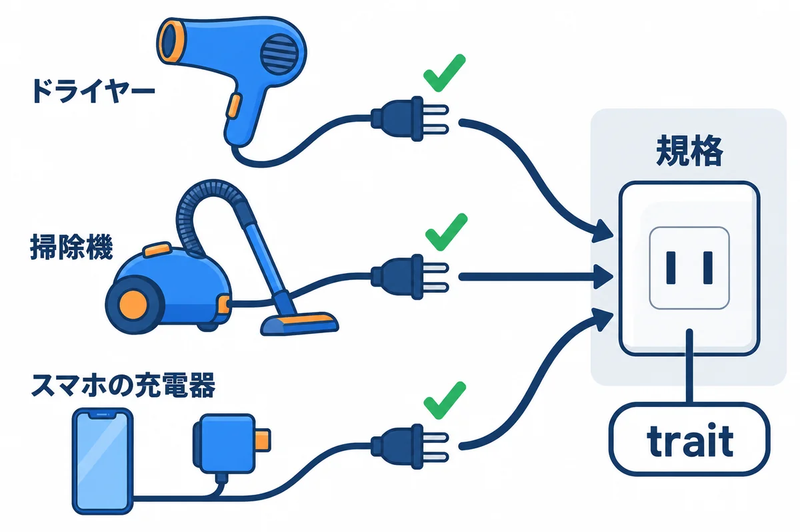
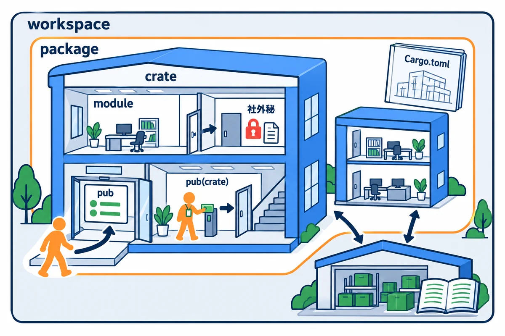

色の付いた枠のコードの、右上の「コピー」ボタンを押してください。コピーしたら、ブラウザーの「戻る」で PDF に戻れます。
第2巻と第3巻で、Rust の文法と所有権のルールを学びました。この巻では、それらを組み合わせて「間違いにくいプログラムの形」を作る方法を学びます。
プログラムが小さいうちは、「とりあえず動く」コードでも困りません。しかし、ノートアプリ RustNote のように「登録・ログイン・ノートの作成と編集・検索」と機能が増えてくると、次のような事故が起きやすくなります。
この巻のテーマは、こうした事故を「気をつける」ではなく、型・trait・エラー型・Cargo の設定・テストという仕組みで防ぐことです。Rust のコンパイラはとても厳しい先生ですが、設計を工夫すると、その厳しさを「バグを見つけてくれる味方」として使えるようになります。
この巻を終えると、次のことができるようになります。
parse 関数で、不正な値を作れない型（Email・NoteTitle・UserId・NoteId）を設計できるdyn Trait の違いと使い分けを説明できるthiserror で書きやすくし、HTTP のステータスコード（400/404/409/500）へ変換できる。anyhow との使い分けを説明できるpub で公開範囲を決め、workspace・features・Cargo.lock で依存を管理できるcargo test と doctest で設計の意図をテストとドキュメントに固定し、状態の移り変わり（状態機械）を enum で安全に書ける| 単元 | テーマ | ひとことで言うと |
|---|---|---|
| UNIT 01 | newtype と不正状態を作れない型 | UserId と NoteId を取り違えたらコンパイルエラーにする |
| UNIT 02 | trait と境界による設計 | 「保存できる」という約束で、本物とテスト用の偽物を差し替える |
| UNIT 03 | generics・where 句・静的ディスパッチ | 型の空欄を持つ関数・構造体を1回だけ書く |
| UNIT 04 | dyn Trait とオブジェクト安全性 | 実行時に実装を選ぶ。その仕組み（vtable）と制約 |
| UNIT 05 | エラー型・thiserror・文脈 | 失敗を分類し、HTTP の 400/404/409/500 に変換する |
| UNIT 06 | crate・module・可視性・workspace | ファイルを分け、pub で見せる範囲を決める |
| UNIT 07 | Cargo features・依存固定・最小構成 | 依存の版をそろえ、必要な機能だけを入れる |
| UNIT 08 | DTO・Serde・境界の変換 | JSON・フォームの入力を検証済みの型に変える |
| UNIT 09 | 設定型・環境変数・秘密 | 設定を起動時に1回だけ読み、秘密を表示から隠す |
| UNIT 10 | テスト・rustdoc・状態機械・API レビュー | 設計の意図をテストとドキュメントに残す |
cargo new と cargo run ができること。struct / impl / enum / match / Option / Result / ? / Vec / HashMap / クロージャ / mod の基本。& と &mut の借用、Clone と Copy の違い、Box・Arc・Mutex の役割。分からない言葉が出てきたら、該当の巻に戻ってかまいません。この巻の中でも、初めて出る用語には短い説明を付けています。巻末の「用語ミニ辞典」も使ってください。
各単元では、次の順番を1サイクルとして進めてください。読むだけで終わらせず、手を動かして、わざと壊して、エラーを読むのが一番の近道です。
Finished ... in 0.36s のような時間の数字は、パソコンによって変わります）。# コードの見た目を Rust の標準の形に整える
cargo fmt
# よくある書き間違い・もったいない書き方を指摘してもらう
cargo clippy
# テストを実行する（UNIT 10 で詳しく学びます）
cargo test
この巻のコードは、すべて次の環境で実際にコンパイル・実行し、実行結果とエラーメッセージは実際の出力をそのまま載せています（パソコンのユーザー名などを含む部分だけ ... に置き換えています）。
| 項目 | 版・内容 |
|---|---|
| OS | Windows 11（ARM64）。コマンドは PowerShell を主に、WSL / macOS / Linux は補足で示します |
| Rust | 1.99 以上（本書シリーズの基準）。実行結果は rustc 1.99.0（aarch64-pc-windows-msvc）で取り、2026-10-31 に 1.99.1 でも同じ表示になることを確かめた（版の番号が出る出力は 1.99.1 で取り直し、エラーの中の rustc のソースの場所の番号は 1.99.1 のものにしている） |
| edition | 2024（cargo new の既定値） |
| thiserror | 2.0.21（UNIT 05・09。エラー型を短く書く） |
| anyhow | 1.0.104（UNIT 05。アプリの入口でエラーをまとめる） |
| serde | 1.0.229（derive 機能つき。UNIT 07・08） |
| serde_json | 1.0.154（UNIT 08。JSON の読み書き） |
手元の Rust の版は rustc --version で確かめられます。1.99 より古ければ、rustup update で最新の安定版に更新してください。
ヒント: クレートの版の数字は「
cargo addしたときの最新版」です。あなたが試すときにはもっと新しい版が入るかもしれませんが、同じ大きな番号（thiserror なら2.、serde なら1.）の中では、この巻のコードはそのまま動くはずです。版の数字の読み方は UNIT 07 で学びます。
この巻では、練習用のプロジェクト design_lab を1つ作り、例ごとに src/bin/ の下へファイルを足していきます（UNIT 06・07・10 では、別のプロジェクトも作ります）。
cargo new design_lab
cd design_lab
mkdir src/bin
cargo add thiserror anyhow serde_json
cargo add serde --features derive
▶ ここで初めて出てくるコード
cargo add（cargo のコマンド）: 部品（クレート）を、プロジェクトに足すコマンド。cargo add thiserror anyhow serde_jsonで、3 つの部品をCargo.tomlの[dependencies]に書き足します。--features 機能で、部品の追加の機能も選べます。部品は、世界中の人が公開している場所（crates.io）から自動で取ってきます。
cargo add の実際の出力は次のとおりです（cargo new の出力は省略）。
Updating crates.io index
Adding thiserror v2.0.21 to dependencies
Features:
+ std
Adding anyhow v1.0.104 to dependencies
Features:
+ std
- backtrace
Adding serde_json v1.0.154 to dependencies
Features:
+ std
- alloc
- arbitrary_precision
- float_roundtrip
- indexmap
- preserve_order
- raw_value
- unbounded_depth
Updating crates.io index
Locking 14 packages to highest Rust 1.99.1 compatible versions
Updating crates.io index
Adding serde v1.0.229 to dependencies
Features:
+ derive
+ serde_derive
+ std
- alloc
- rc
- unstable
最後に、Cargo.toml の [package] の中、edition = "2024" の次の行に rust-version = "1.99" を手で1行足します（cargo new では入りません）。「このプロジェクトは Rust 1.99 以上でビルドしてください」という宣言で、詳しくは UNIT 07 で説明します。できあがった Cargo.toml は次のとおりです。
[package]
name = "design_lab"
version = "0.1.0"
edition = "2024"
rust-version = "1.99"
[dependencies]
anyhow = "1.0.104"
serde = { version = "1.0.229", features = ["derive"] }
serde_json = "1.0.154"
thiserror = "2.0.21"
src/bin/u01_ids.rs のようにファイルを置くと、cargo run --bin u01_ids でそのファイルの main だけを実行できます。1つのプロジェクトで、たくさんの小さなプログラムを試せて便利です。src/bin/ に置いたままにすると、プロジェクト全体をビルドする cargo build・cargo test・cargo clippy まで失敗するようになるので、エラーを確かめたらファイルを消すか、正しく直しておいてください。i64 でも「ユーザーの番号」と「ノートの番号」を別の型に分け、取り違えをコンパイルエラーにできるparse 関数で、「作れた時点で必ず正しい値」を表現できるEmail と NoteTitle を自分で書き、Result で「なぜダメだったか」を返せるコンサート会場を思い浮かべてください。入口のゲートでは係員がチケットを1枚ずつ確認し、本物だった人にだけリストバンドを巻きます。会場の中では、売店の人もトイレの前の係員も、リストバンドを見るだけで「この人はチケット確認済み」と分かります。いちいちチケットを見せてもらう必要はありません。
プログラムも同じです。外から来た文字列（フォームの入力、URL の一部、DB から読んだ値）は「まだ確認していないチケット」です。入口で一度だけ検査し、合格したものを NoteTitle や Email という専用の型（リストバンド）に包んでおけば、アプリの中の関数は「NoteTitle 型の値を受け取った＝もう検査済み」と信じてよくなります。
もう1つのたとえは色の違う封筒です。社員番号も伝票番号も「ただの数字」ですが、社員番号は青い封筒、伝票番号は赤い封筒に入れるルールにすれば、「赤い封筒を入れる箱」に青い封筒は入りません。Rust では、この「封筒の色」を型で表します。
用語: newtype（ニュータイプ：既存の型を1つだけ包んだ、意味の違う新しい型。
struct UserId(i64);のように書く）
用語: primitive obsession（プリミティブ・オブセッション：何でも
i64やStringのような基本の型のまま扱ってしまう癖。取り違えや未検証の値が紛れ込む原因になる）
図4-2 の大事な点は、検査する場所が1か所に決まっていることです。NoteTitle の中身は private（外から触れない）なので、parse を通らずに NoteTitle を作る方法がありません。だから「NoteTitle 型の値がある」＝「1〜80文字の検査に合格した」が、プログラム全体で必ず成り立ちます。これを「不正な状態を表現できない型（make illegal states unrepresentable）」と呼びます。
この巻では、練習用のプロジェクトを1つ作り、例ごとに src/bin/ の下へファイルを足していきます。src/bin/名前.rs に置いたファイルは、cargo run --bin 名前 でそれぞれ独立したプログラムとして実行できます。
# PowerShell（WSL / macOS / Linux のターミナルでも同じコマンドです）
cargo new design_lab
cd design_lab
mkdir src/bin
▼ このコードがやること（先に日本語で）: ユーザー番号とノート番号を、①ただの数字のまま扱う関数と、②専用の型で包んで扱う関数の2通りで書きます。①は引数の順番を間違えても動いてしまうことを確かめ、②は正しい順番で呼べることを確かめます。
// 素の i64 のままだと、どちらが何の番号か型からは分からない
fn find_note_raw(owner_id: i64, note_id: i64) -> String {
format!("ユーザー{owner_id}のノート{note_id}を探します")
}
// 意味ごとに別の型を作る（newtype パターン）
#[derive(Debug, Clone, Copy, PartialEq, Eq)]
struct UserId(i64);
#[derive(Debug, Clone, Copy, PartialEq, Eq)]
struct NoteId(i64);
// 引数の型そのものが「何の番号か」を表している
fn find_note(owner: UserId, id: NoteId) -> String {
format!("ユーザー{}のノート{}を探します", owner.0, id.0)
}
fn main() {
let owner_id: i64 = 7;
let note_id: i64 = 42;
// 正しい順番
println!("{}", find_note_raw(owner_id, note_id));
// 順番を取り違えても、コンパイルは通ってしまう
println!("{}", find_note_raw(note_id, owner_id));
let owner = UserId(7);
let note = NoteId(42);
// newtype なら、正しい順番でしか呼べない
println!("{}", find_note(owner, note));
// Debug 表示では型の名前も出る
println!("{owner:?} / {note:?}");
}
src/bin/u01_ids.rs として保存し、次のコマンドで実行します。
cargo run --bin u01_ids
▼ 実行結果
Compiling design_lab v0.1.0 (...\design_lab)
Finished `dev` profile [unoptimized + debuginfo] target(s) in 0.33s
Running `target\debug\u01_ids.exe`
ユーザー7のノート42を探します
ユーザー42のノート7を探します
ユーザー7のノート42を探します
UserId(7) / NoteId(42)
2行目に注目してください。番号が逆になった「ユーザー42のノート7」を探しています。もし本物のアプリなら、他人のノートを開いてしまうかもしれない重大なバグですが、コンパイラは何も言いませんでした。どちらも i64 なので、区別のしようがないからです。
#[derive(Debug, Clone, Copy, PartialEq, Eq)]
struct UserId(i64);
struct UserId(i64); はタプル構造体（フィールドに名前がなく、番号で呼ぶ構造体）です。中に i64 を1つだけ持ちます。i64 でも、UserId と NoteId はまったく別の型として扱われます。UserId を受け取る場所に NoteId は渡せません。owner.0 のように .0（0番目のフィールド）で取り出します。i64 と同じです。包んだことで余計なメモリを使うことはありません（ゼロコスト）。用語: タプル構造体（
struct 名前(型);の形の構造体。フィールドを.0.1と番号で読む）
#[derive(...)] で基本の能力を付ける#[derive(Debug, Clone, Copy, PartialEq, Eq)]
derive（デライブ：自動で導き出す）は、よく使う能力をコンパイラに自動で実装させる指示です。Debug は {:?} で表示する能力、Clone/Copy は値を複製する能力、PartialEq/Eq は == で比べる能力です。Copy を付けたので、find_note(owner, note) に渡したあとも owner を使い続けられます（第3巻の「コピーされる型」の話です）。ID のような小さな値には Copy を付けるのが普通です。+ で足す能力（Add）は付けていないので、owner + note のような意味のない計算は書けません。これも newtype の利点です。fn find_note(owner: UserId, id: NoteId) -> String {
ID の取り違えを防げたので、次は「中身の正しさ」を型で保証します。NoteTitle（1〜80文字のタイトル）、Email（メールアドレス）、NoteId（1以上の番号）を、mod domain という区画の中に作ります。区画の外からは中身を直接作れないようにするのがポイントです。
▼ このコードがやること（先に日本語で）: タイトルの文字列を受け取り、前後の空白を取り除いたうえで 1〜80 文字なら
NoteTitleを作り、そうでなければ「空」か「長すぎ（何文字か）」という理由を返します。4種類の入力で、合格と不合格を確かめます。
▶ 書く所と動かし方: 練習用のプロジェクト design_labの src\bin フォルダに、u01_title.rs という名前の新しいファイルを作り、下のコードを貼り付けて保存します。design_lab のフォルダで cargo run --bin u01_title を実行します。
mod domain {
use std::fmt;
// タイトルの最大文字数（RustNote 全体で使う定数）
pub const MAX_TITLE_CHARS: usize = 80;
// 中身の String は private（pub を付けない）。外から直接作れない
#[derive(Debug, Clone, PartialEq, Eq)]
pub struct NoteTitle(String);
// タイトルが不正だった理由
#[derive(Debug, PartialEq, Eq)]
pub enum TitleError {
Empty,
TooLong { len: usize },
}
impl NoteTitle {
// 文字列を検査し、合格したときだけ NoteTitle を返す
pub fn parse(input: &str) -> Result<NoteTitle, TitleError> {
let trimmed = input.trim();
// 文字数は chars().count() で数える（len() はバイト数）
let len = trimmed.chars().count();
if len == 0 {
return Err(TitleError::Empty);
}
if len > MAX_TITLE_CHARS {
return Err(TitleError::TooLong { len });
}
Ok(NoteTitle(trimmed.to_string()))
}
// 中身を読むだけの窓口（書き換える窓口は用意しない）
pub fn as_str(&self) -> &str {
&self.0
}
}
// {} で表示したときの見た目
impl fmt::Display for NoteTitle {
fn fmt(&self, f: &mut fmt::Formatter<'_>) -> fmt::Result {
f.write_str(&self.0)
}
}
}
use domain::NoteTitle;
fn main() {
let inputs = [" 買い物リスト ", "", " ", &"あ".repeat(81)];
for input in inputs {
match NoteTitle::parse(input) {
Ok(title) => println!("OK: [{title}] ({}文字)", title.as_str().chars().count()),
Err(e) => println!("NG: {e:?}"),
}
}
}
▶ ここで初めて出てくるコード
.write_str()（文字列）:Displayなどの実装の中で、書き込み先（Formatter）に文字列をそのまま書くメソッド。f.write_str(&self.0)は「自分の中の文字列を、そのまま表示する」。値を埋め込む時はwrite!を使います。
cargo run --bin u01_title
▼ 実行結果
Compiling design_lab v0.1.0 (...\design_lab)
Finished `dev` profile [unoptimized + debuginfo] target(s) in 0.34s
Running `target\debug\u01_title.exe`
OK: [買い物リスト] (6文字)
NG: Empty
NG: Empty
NG: TooLong { len: 81 }
pub struct だが中身は privatepub struct NoteTitle(String);
pub struct なので、型の名前は mod domain の外からも使えます（use domain::NoteTitle; が書ける）。String には pub が付いていません。そのため外からは NoteTitle(String::from("...")) のように直接作れず、.0 で中身を書き換えることもできません。NoteTitle を手に入れる方法は NoteTitle::parse だけ。これが図4-2 の「門番」です。pub enum TitleError {
Empty,
TooLong { len: usize },
}
parse の戻り値は Result<NoteTitle, TitleError> です。成功なら Ok(タイトル)、失敗なら Err(理由) が返ります。match で「空なら○○、長すぎなら△△」と理由ごとに対応を変えられます。TooLong { len } のように、役に立つ情報（実際の文字数）を一緒に運べるのも便利です。thiserror を使って、もっと読みやすいメッセージ付きに育てます。chars().count() で数えるstr::len() はバイト数を返します。日本語の「あ」は UTF-8 で3バイトなので、len() で 80 を判定すると、日本語は約26文字で「長すぎ」になってしまいます。chars().count()（Unicode の文字単位で数える）です。RustNote の DB 側の制約（CHECK で 1〜80 文字）とも数え方をそろえておきます。注意: 絵文字の一部（肌の色つきの顔や国旗など）は、見た目は1文字でも
charが複数個になります。厳密に「見た目の文字数」を数えるにはunicode-segmentationクレートを使いますが、本教材の RustNote ではchars().count()で十分とします。
▼ このコードがやること（先に日本語で）: URL の
/notes/42の42のような文字列からNoteIdを作り、数字でないものや 0 以下を断ります。メールアドレスは前後の空白を除いて小文字にそろえ、@が1つで、@の後ろに.があるものだけを受け付けます。
▶ 書く所と動かし方: 練習用のプロジェクト design_labの src\bin フォルダに、u01_domain.rs という名前の新しいファイルを作り、下のコードを貼り付けて保存します。design_lab のフォルダで cargo run --bin u01_domain を実行します。
mod domain {
use std::fmt;
use std::str::FromStr;
// ---- ID 型 ----
#[derive(Debug, Clone, Copy, PartialEq, Eq, Hash)]
pub struct NoteId(i64);
#[derive(Debug, PartialEq, Eq)]
pub enum IdError {
NotANumber,
NotPositive,
}
impl NoteId {
// DB から読んだ値など、すでに正しいと分かっている数から作る
pub fn new(value: i64) -> Result<NoteId, IdError> {
if value <= 0 {
return Err(IdError::NotPositive);
}
Ok(NoteId(value))
}
pub fn get(self) -> i64 {
self.0
}
}
// "42".parse::<NoteId>() と書けるようにする
impl FromStr for NoteId {
type Err = IdError;
fn from_str(s: &str) -> Result<Self, Self::Err> {
let n: i64 = s.parse().map_err(|_| IdError::NotANumber)?;
NoteId::new(n)
}
}
// ---- メールアドレス ----
#[derive(Debug, Clone, PartialEq, Eq, Hash)]
pub struct Email(String);
#[derive(Debug, PartialEq, Eq)]
pub enum EmailError {
MissingAt,
Malformed,
TooLong,
}
impl Email {
pub const MAX_LEN: usize = 254;
pub fn parse(input: &str) -> Result<Email, EmailError> {
// 前後の空白を除き、小文字にそろえる（同じ人を同じ値にするため）
let normalized = input.trim().to_lowercase();
if normalized.len() > Self::MAX_LEN {
return Err(EmailError::TooLong);
}
let Some((local, domain)) = normalized.split_once('@') else {
return Err(EmailError::MissingAt);
};
let bad = local.is_empty()
|| domain.is_empty()
|| domain.contains('@')
|| !domain.contains('.')
|| normalized.contains(char::is_whitespace);
if bad {
return Err(EmailError::Malformed);
}
Ok(Email(normalized))
}
pub fn as_str(&self) -> &str {
&self.0
}
}
impl fmt::Display for Email {
fn fmt(&self, f: &mut fmt::Formatter<'_>) -> fmt::Result {
f.write_str(&self.0)
}
}
}
use domain::{Email, NoteId};
fn main() {
// URL の /notes/{id} の {id} 部分を想定
for segment in ["42", "abc", "0", "-5"] {
let result: Result<NoteId, _> = segment.parse();
println!("{segment:>4} -> {result:?}");
}
for input in [
" Alice@Example.COM ",
"alice.example.com",
"a@b@c.com",
"bob@localhost",
] {
match Email::parse(input) {
Ok(email) => println!("OK: {} ({}バイト)", email, email.as_str().len()),
Err(e) => println!("NG: {input:?} -> {e:?}"),
}
}
let id = NoteId::new(7).expect("7 は正の数");
println!("DB に渡す値: {}", id.get());
}
▶ ここで初めて出てくるコード
type（型とメソッド）: 型に別の名前を付ける書き方（型の別名）。type DynRepo = Arc<dyn NoteRepository + Send + Sync>;のように、長い型を短く呼べます。トレイトの中のtype Err = IdError;は「このトレイトで使うエラーの型はIdError」と決める書き方です。FromStr（型とメソッド）: 「文字列から作れる」機能（トレイト）。impl FromStr for 型 { … }を書くと、"42".parse::<型>()で、文字列から自分の型を作れるようになります。
cargo run --bin u01_domain
▼ 実行結果
Compiling design_lab v0.1.0 (...\design_lab)
Finished `dev` profile [unoptimized + debuginfo] target(s) in 0.36s
Running `target\debug\u01_domain.exe`
42 -> Ok(NoteId(42))
abc -> Err(NotANumber)
0 -> Err(NotPositive)
-5 -> Err(NotPositive)
OK: alice@example.com (17バイト)
NG: "alice.example.com" -> MissingAt
NG: "a@b@c.com" -> Malformed
NG: "bob@localhost" -> Malformed
DB に渡す値: 7
FromStr を実装すると .parse() が使えるimpl FromStr for NoteId {
type Err = IdError;
fn from_str(s: &str) -> Result<Self, Self::Err> {
let n: i64 = s.parse().map_err(|_| IdError::NotANumber)?;
NoteId::new(n)
}
}
FromStr は「文字列から作れる型」を表す標準ライブラリの trait（UNIT 02 で詳しく学ぶ「約束ごと」）です。実装すると "42".parse::<NoteId>() と書けるようになります。type Err = IdError; は「失敗したときのエラー型はこれです」という宣言です。i64 として読めるかを試し（読めなければ NotANumber）、読めたら NoteId::new に渡して 0 以下を断ります。検査のルールは new の1か所だけに書き、from_str はそれを呼ぶだけにしています。ルールが2か所に分かれると、片方だけ直し忘れるからです。let normalized = input.trim().to_lowercase();
trim() で前後の空白を落とし、to_lowercase() で小文字にそろえます。これを正規化（せいきか：同じ意味のものを同じ形にそろえること）と呼びます。Alice@Example.COM と alice@example.com を別人として登録できてしまうと、DB の email UNIQUE（重複禁止）が役に立ちません。だからしまう前に形をそろえるのです。つまずきポイント:
split_once('@')は「最初の@で2つに分ける」メソッドです。let Some((local, domain)) = ... else { return ...; };は let-else という書き方で、「Someなら中身を取り出して先へ進む。Noneならすぐelseの中で関数を抜ける」という意味です。matchを書くより入れ子が浅くなります。
例1-1 の find_note(owner, note) を、わざと find_note(note, owner) に書き換えてビルドします（src/bin/u01_err_swap.rs）。
Compiling design_lab v0.1.0 (...\design_lab)
error[E0308]: arguments to this function are incorrect
--> src\bin\u01_err_swap.rs:15:20
|
15 | println!("{}", find_note(note, owner));
| ^^^^^^^^^ ---- ----- expected `NoteId`, found `UserId`
| |
| expected `UserId`, found `NoteId`
|
note: function defined here
--> src\bin\u01_err_swap.rs:7:4
|
7 | fn find_note(owner: UserId, id: NoteId) -> String {
| ^^^^^^^^^
help: swap these arguments
|
15 - println!("{}", find_note(note, owner));
15 + println!("{}", find_note(owner, note));
|
For more information about this error, try `rustc --explain E0308`.
error: could not compile `design_lab` (bin "u01_err_swap") due to 1 previous error
E0308 は「型が合わない（mismatched types）」系のエラーです。1つ目の引数は UserId を期待しているのに NoteId が来た（expected UserId, found NoteId）、と引数ごとに教えてくれています。help: swap these arguments（引数を入れ替えて）の提案どおり、find_note(owner, note) にします。この提案は正しいので、そのまま従って大丈夫です。i64 のままだったら、このバグは実行して、しかも運悪く他人のノートが見えてしまうまで気づけませんでした。parse を通さずに、空のタイトルを直接作ろうとしたコードです（src/bin/u01_err_private.rs）。
mod domain {
#[derive(Debug)]
pub struct NoteTitle(String);
impl NoteTitle {
pub fn parse(input: &str) -> Option<NoteTitle> {
let t = input.trim();
if t.is_empty() {
None
} else {
Some(NoteTitle(t.to_string()))
}
}
}
}
fn main() {
// parse を通さずに、空のタイトルを直接作ろうとする
let title = domain::NoteTitle(String::new());
println!("{title:?}");
}
Compiling design_lab v0.1.0 (...\design_lab)
error[E0603]: tuple struct constructor `NoteTitle` is private
--> src\bin\u01_err_private.rs:19:25
|
3 | pub struct NoteTitle(String);
| ------ a constructor is private if any of the fields is private
...
19 | let title = domain::NoteTitle(String::new());
| ^^^^^^^^^ private tuple struct constructor
|
note: the tuple struct constructor `NoteTitle` is defined here
--> src\bin\u01_err_private.rs:3:5
|
3 | pub struct NoteTitle(String);
| ^^^^^^^^^^^^^^^^^^^^^^^^^^^^^
help: consider making the field publicly accessible
|
3 | pub struct NoteTitle(pub String);
| +++
For more information about this error, try `rustc --explain E0603`.
error: could not compile `design_lab` (bin "u01_err_private") due to 1 previous error
E0603 は「private（非公開）なものを外から使おうとした」エラーです。a constructor is private if any of the fields is private（フィールドが1つでも private なら、型名(...) で作る書き方も private になる）と説明されています。domain::NoteTitle::parse("...") を使って作ります。pub String にすれば通ると提案しています。たしかにエラーは消えますが、そうすると誰でも空のタイトルを作れるようになり、門番の意味がなくなります。このエラーは「設計どおりに守られている」証拠です。help は「コンパイルを通す方法」であって、「設計として正しい方法」とは限らない、と覚えておきましょう。RustNote の domain には、この単元で作った型がそのまま入ります。
| 型 | 中身 | 作り方 | 守っていること |
|---|---|---|---|
UserId |
i64 |
DB から読んだ値 / ログイン中のセッション | ノートの持ち主との取り違え |
NoteId |
i64 |
URL の {id} を parse / DB から読んだ値 |
0 以下・数字でない ID、UserId との取り違え |
Email |
String（小文字化済み） |
Email::parse |
形式違い・大文字小文字の違いによる二重登録 |
NoteTitle |
String（trim 済み・1〜MAX_TITLE_CHARS（80）文字） |
NoteTitle::parse |
空タイトル・長すぎるタイトル |
たとえば GET /notes/{id} では、URL の {id} を受け取ったらすぐ NoteId に変換し、失敗したら 404 を返します。その先の処理は NoteId しか受け取らないので、「数字でない ID で DB を検索してしまう」心配がありません。ID の i64 は、Turso / libSQL（SQLite 系）の INTEGER 型の列とそのまま対応します。
問題1: ページ送りに使う「ページ番号」型 PageNumber を作ってください。中身は u32 で、0 は作れない（1 から始まる）ようにします。fn new(n: u32) -> Option<PageNumber> と、1ページあたりの件数を受け取って「何件飛ばすか」を返す fn offset(self, per_page: u32) -> u32 を書き、new(0) と、3ページ目・20件ずつの offset を表示してください。
問題2: "日本語" の len() と chars().count() をそれぞれ表示し、なぜ NoteTitle の文字数判定に len() を使ってはいけないのかを説明してください。
問題3: ある人が「テストで便利だから」と、NoteTitle に pub fn new_unchecked(s: String) -> NoteTitle { NoteTitle(s) }（検査なしで作れる関数）を追加しようとしています。何が問題でしょうか。どうすれば目的（テストで手軽に作る）を果たせるでしょうか。
解答1:
mod paging {
// 1 から始まるページ番号。0 ページは存在しない
#[derive(Debug, Clone, Copy, PartialEq, Eq)]
pub struct PageNumber(u32);
impl PageNumber {
pub fn new(n: u32) -> Option<PageNumber> {
if n == 0 { None } else { Some(PageNumber(n)) }
}
// 1 ページ目なら 0 件飛ばす、2 ページ目なら per_page 件飛ばす
pub fn offset(self, per_page: u32) -> u32 {
(self.0 - 1) * per_page
}
}
}
use paging::PageNumber;
fn main() {
println!("{:?}", PageNumber::new(0));
let page = PageNumber::new(3).unwrap();
println!("{:?} の offset = {}", page, page.offset(20));
}
▼ 実行結果
None
PageNumber(3) の offset = 40
PageNumber は 0 では作れないので、offset の中の self.0 - 1 がマイナスになる（u32 では桁あふれでパニックになる）ことが絶対にありません。もし u32 のまま受け取っていたら、offset の中でも 0 の検査が必要でした。検査を new に寄せたおかげで、使う側の関数が単純になっています。解答2:
fn main() {
let title = "日本語";
// len() は UTF-8 のバイト数
println!("len() = {}", title.len());
// chars().count() は文字の数
println!("chars().count() = {}", title.chars().count());
}
▼ 実行結果
len() = 9
chars().count() = 3
len() は 9 になります。len() で「80以下」を判定すると、日本語のタイトルは 26 文字までしか入らなくなり、利用者から見ると「80文字まで」の約束が守られません。解答3:
pub な関数があると、テスト以外のコードからも呼べてしまい、「NoteTitle があれば必ず 1〜80文字」という約束が崩れます。門の横に裏口を作るようなものです。NoteTitle::parse("買い物").unwrap() と書けば十分です。テストでは失敗したらパニックで止まってよいので、unwrap() が使えます。どうしても専用の関数が欲しい場合は、#[cfg(test)]（テストのときだけコンパイルする印。UNIT 10 で学びます）を付けて、本番のプログラムには含まれないようにします。E0308 のコンパイルエラーになります。parse だけを入口にすると、「作れた＝正しい」が型で保証されます。pub を付ける等）は採用しません。trait を定義し、複数の型に impl トレイト for 型 で実装できる。既定の実装も使える&impl Trait という引数で「約束を守る型なら何でも受け取る関数」を書けるNoteRepository trait に依存させ、本物とテスト用 Fake を差し替えられる
家の壁のコンセントは、差し込み口の形と電圧が「規格」として決まっています。だから、ドライヤーでも掃除機でもスマホの充電器でも、規格どおりのプラグを持っていれば同じコンセントに差せます。コンセントの側は「何の家電か」を知りません。知っているのは「規格を守っている」ことだけです。
Rust の trait は、この「規格」にあたります。
impl 規格 for 型 ＝ 「この型は規格どおりのプラグを持っています」と宣言し、中身を書く&impl 規格 を受け取る関数 ＝ コンセント。規格を守る型なら何でも差せるアプリの設計では、「ノートを保存する」部分にこの考え方を使います。ノートを作る処理（ユースケース）は「保存できるという規格（NoteRepository）」にだけ差し込み、実際の保存先がメモリなのか Turso の DB なのか、テスト用の偽物なのかは知らずに済むようにします。
用語: trait（トレイト：型が持つべきメソッドの一覧を決めた「約束」。他の言語の interface に近い）
用語: ユースケース（アプリが利用者のためにする1つの仕事。「ノートを作る」「ノートを一覧する」など）
図4-5 の右側では、矢印がすべて真ん中の trait に集まっています。ユースケースは「NoteRepository という約束を守る何か」しか知らず、実装の側も「約束を守る」ことだけを意識します。この形にしておくと、テストでは Fake を、本番では Turso 版を渡すだけで、ユースケースのコードは1行も変えずに済みます。
▼ このコードがやること（先に日本語で）: 「一行の要約を作れる」という約束
Summaryを決め、ノートとユーザーの2つの型に実装します。そのうえで「約束を守る型なら何でも受け取る」関数print_headlineに、ノートとユーザーの両方を渡してみます。
▶ 書く所と動かし方: 練習用のプロジェクト design_labの src\bin フォルダに、u02_trait.rs という名前の新しいファイルを作り、下のコードを貼り付けて保存します。design_lab のフォルダで cargo run --bin u02_trait を実行します。
// 「一行で要約できる」という約束（trait）
trait Summary {
// 実装する型が必ず書かなければならないメソッド
fn summary(&self) -> String;
// 既定の実装つきメソッド（書かなければこれが使われる）
fn headline(&self) -> String {
format!("【{}】", self.summary())
}
}
struct Note {
title: String,
done: bool,
}
struct User {
email: String,
}
// Note は Summary の約束を守ります、という宣言
impl Summary for Note {
fn summary(&self) -> String {
let mark = if self.done { "済" } else { "未" };
format!("{mark} {}", self.title)
}
}
impl Summary for User {
fn summary(&self) -> String {
format!("ユーザー {}", self.email)
}
// 既定の実装を上書きする
fn headline(&self) -> String {
format!("<<{}>>", self.email)
}
}
// Summary を実装した型なら何でも受け取れる関数
fn print_headline(item: &impl Summary) {
println!("{}", item.headline());
}
fn main() {
let note = Note {
title: "牛乳を買う".to_string(),
done: false,
};
let user = User {
email: "alice@example.com".to_string(),
};
println!("{}", note.summary());
print_headline(¬e);
print_headline(&user);
}
cargo run --bin u02_trait
▼ 実行結果
Compiling design_lab v0.1.0 (...\design_lab)
Finished `dev` profile [unoptimized + debuginfo] target(s) in 0.30s
Running `target\debug\u02_trait.exe`
未 牛乳を買う
【未 牛乳を買う】
<<alice@example.com>>
trait Summary {
fn summary(&self) -> String;
fn headline(&self) -> String {
format!("【{}】", self.summary())
}
}
trait 名前 { ... } で約束を定義します。中にはメソッドの「形」（名前・引数・戻り値の型）を並べます。fn summary(&self) -> String; のように ; で終わるメソッドは、中身を書いていないメソッドです。この trait を実装する型は、必ず中身を書かなければなりません。headline のように { ... } で中身まで書いたものは既定の実装（デフォルト実装）です。実装する型が何も書かなければ、これがそのまま使われます。既定の実装の中から、まだ中身のない self.summary() を呼べるのがポイントです。impl トレイト for 型 で約束を守るimpl Summary for Note {
fn summary(&self) -> String {
let mark = if self.done { "済" } else { "未" };
format!("{mark} {}", self.title)
}
}
Note は Summary の約束を守ります」という宣言です。必須の summary だけを書き、headline は既定の実装に任せています。だから実行結果の2行目は 【未 牛乳を買う】 でした。User のほうは headline も自分で書いて既定の実装を上書きしています。だから3行目は <<alice@example.com>> になりました。&impl Summary ＝「約束を守る型なら何でも」fn print_headline(item: &impl Summary) {
println!("{}", item.headline());
}
&impl Summary は、「Summary を実装している何らかの型への参照」という意味です。item.title のように Note にしかないフィールドには触れません。触れないからこそ、Note でも User でも受け取れるのです。Summary が必要」という境界線を引いているイメージです。次の UNIT 03 で、もっと正式な書き方 <T: Summary> を学びます。用語: trait 境界（trait bound：「この型は○○ trait を実装していること」という条件。関数や構造体が、受け取る型に求める）
いよいよ RustNote の中心になる NoteRepository を作ります。リポジトリ（repository：倉庫）は「データのしまい方・取り出し方」を引き受ける部品の名前としてよく使われます。
▼ このコードがやること（先に日本語で）: 「ノートを入れる」「持ち主ごとに一覧する」という約束
NoteRepositoryを決め、①メモリに保存する本物っぽい実装と、②必ず失敗する偽物の実装を作ります。ノートを作る処理create_noteは約束だけに頼って書き、2つの実装を差し替えて動かします。
▶ 書く所と動かし方: 練習用のプロジェクト design_labの src\bin フォルダに、u02_repo.rs という名前の新しいファイルを作り、下のコードを貼り付けて保存します。design_lab のフォルダで cargo run --bin u02_repo を実行します。
use std::sync::Mutex;
#[derive(Debug, Clone, Copy, PartialEq, Eq)]
struct UserId(i64);
#[derive(Debug, Clone, Copy, PartialEq, Eq)]
struct NoteId(i64);
#[derive(Debug, Clone)]
struct Note {
id: NoteId,
owner: UserId,
title: String,
}
// 保存に失敗したことを表す型（DB に接続できない、など）
#[derive(Debug)]
struct RepoError(String);
// ノートの保存場所に求める「約束」
trait NoteRepository {
fn insert(&self, owner: UserId, title: &str) -> Result<Note, RepoError>;
fn list_by_owner(&self, owner: UserId) -> Result<Vec<Note>, RepoError>;
}
// ---- 実装1: メモリの中に保存する ----
struct Inner {
next_id: i64,
notes: Vec<Note>,
}
struct InMemoryNoteRepository {
// &self のまま中身を書き換えられるよう Mutex で包む（第3巻）
inner: Mutex<Inner>,
}
impl InMemoryNoteRepository {
fn new() -> Self {
let inner = Inner {
next_id: 1,
notes: Vec::new(),
};
Self {
inner: Mutex::new(inner),
}
}
}
impl NoteRepository for InMemoryNoteRepository {
fn insert(&self, owner: UserId, title: &str) -> Result<Note, RepoError> {
let mut inner = self.inner.lock().unwrap();
let note = Note {
id: NoteId(inner.next_id),
owner,
title: title.to_string(),
};
inner.next_id += 1;
inner.notes.push(note.clone());
Ok(note)
}
fn list_by_owner(&self, owner: UserId) -> Result<Vec<Note>, RepoError> {
let inner = self.inner.lock().unwrap();
let mine = inner
.notes
.iter()
.filter(|n| n.owner == owner)
.cloned()
.collect();
Ok(mine)
}
}
// ---- 実装2: いつも失敗する偽物（テスト用の Fake）----
struct BrokenRepository;
impl NoteRepository for BrokenRepository {
fn insert(&self, _owner: UserId, _title: &str) -> Result<Note, RepoError> {
Err(RepoError("DB に接続できません".to_string()))
}
fn list_by_owner(&self, _owner: UserId) -> Result<Vec<Note>, RepoError> {
Err(RepoError("DB に接続できません".to_string()))
}
}
// ユースケース「ノートを作る」。保存先が何なのかは知らない
fn create_note(repo: &impl NoteRepository, owner: UserId, title: &str) -> Result<NoteId, String> {
let title = title.trim();
if title.is_empty() {
return Err("タイトルが空です".to_string());
}
let note = repo
.insert(owner, title)
.map_err(|e| format!("保存に失敗しました: {}", e.0))?;
Ok(note.id)
}
fn main() {
let repo = InMemoryNoteRepository::new();
let alice = UserId(1);
let bob = UserId(2);
println!("{:?}", create_note(&repo, alice, "牛乳を買う"));
println!("{:?}", create_note(&repo, bob, "本を返す"));
println!("{:?}", create_note(&repo, alice, " "));
println!("{:?}", create_note(&repo, alice, "電気代を払う"));
for note in repo.list_by_owner(alice).unwrap() {
println!("alice のノート: {:?} {}", note.id, note.title);
}
// 同じユースケースに、壊れた保存先を渡してみる
let broken = BrokenRepository;
println!("{:?}", create_note(&broken, alice, "牛乳を買う"));
}
▶ ここで初めて出てくるコード
.cloned()（Option）: 借りている値を、.clone()で複製した値にするメソッド。Option<&String>をOption<String>に、イテレーターなら借りた物の並びを複製の並びにします。
cargo run --bin u02_repo
▼ 実行結果
Compiling design_lab v0.1.0 (...\design_lab)
Finished `dev` profile [unoptimized + debuginfo] target(s) in 0.34s
Running `target\debug\u02_repo.exe`
Ok(NoteId(1))
Ok(NoteId(2))
Err("タイトルが空です")
Ok(NoteId(3))
alice のノート: NoteId(1) 牛乳を買う
alice のノート: NoteId(3) 電気代を払う
Err("保存に失敗しました: DB に接続できません")
&self で受けるtrait NoteRepository {
fn insert(&self, owner: UserId, title: &str) -> Result<Note, RepoError>;
fn list_by_owner(&self, owner: UserId) -> Result<Vec<Note>, RepoError>;
}
&mut self にしたくなりますが、ここではあえて &self（共有の借用）にしています。&mut self だと同時に1人しか使えません（第3巻の借用ルール）。本物の DB 接続も、内部で順番待ちを管理してくれるので &self で使えます。Mutex（第3巻）で中身を包み、&self のままでも安全に書き換えられるようにしています（self.inner.lock().unwrap()）。Result を返します。メモリ版は失敗しませんが、DB 版は「接続できない」などで失敗しうるので、約束の時点で失敗の可能性を書いておくのです。fn create_note(repo: &impl NoteRepository, owner: UserId, title: &str) -> Result<NoteId, String> {
create_note は InMemoryNoteRepository という名前を一度も書いていません。知っているのは NoteRepository という約束だけです。main の最後で BrokenRepository を渡しても、そのまま動きました。実行結果の最終行 Err("保存に失敗しました: DB に接続できません") は、「DB が落ちていたらこう返る」という動きを、本物の DB を落とさずに確かめられたことを示しています。用語: Fake（フェイク：テストのために用意する、本物と同じ約束を守る簡単な作りの実装。メモリ版や「必ず失敗する版」など）
ヒント: この例では、失敗をとりあえず
Stringで返しています。文字列のエラーでは「入力が悪いのか、DB が悪いのか」をプログラムが見分けにくいので、UNIT 05 で専用のエラー型AppErrorに置き換えます。
.filter(|n| n.owner == owner)
list_by_owner は「その持ち主のノートだけ」を返します。実行結果で、bob のノート（ID 2）が alice の一覧に出てこないことを確認してください。owner: UserId を必ず受け取る）で表しておくと、うっかり全員分を返す実装を書きにくくなります。Summary を実装していない 42（整数）を print_summary に渡したときのエラーです。
trait Summary {
fn summary(&self) -> String;
}
struct Note {
title: String,
}
impl Summary for Note {
fn summary(&self) -> String {
self.title.clone()
}
}
fn print_summary(item: &impl Summary) {
println!("{}", item.summary());
}
fn main() {
let note = Note {
title: "牛乳を買う".to_string(),
};
print_summary(¬e);
// i32 は Summary を実装していない
print_summary(&42);
}
Compiling design_lab v0.1.0 (...\design_lab)
error[E0277]: the trait bound `{integer}: Summary` is not satisfied
--> src\bin\u02_err_e0277.rs:25:19
|
25 | print_summary(&42);
| ------------- ^^^ the trait `Summary` is not implemented for `{integer}`
| |
| required by a bound introduced by this call
|
help: the trait `Summary` is implemented for `Note`
--> src\bin\u02_err_e0277.rs:9:1
|
9 | impl Summary for Note {
| ^^^^^^^^^^^^^^^^^^^^^
note: required by a bound in `print_summary`
--> src\bin\u02_err_e0277.rs:15:30
|
15 | fn print_summary(item: &impl Summary) {
| ^^^^^^^ required by this bound in `print_summary`
For more information about this error, try `rustc --explain E0277`.
error: could not compile `design_lab` (bin "u02_err_e0277") due to 1 previous error
E0277 は「trait 境界を満たしていない」エラーです。the trait Summary is not implemented for {integer}（整数には Summary が実装されていない）と書かれています。{integer} は「まだ i32 か i64 か決まっていない整数」という意味です。note: required by a bound in print_summary が、「その条件を出したのは print_summary の impl Summary の部分ですよ」と、境界の場所まで教えてくれています。help には「Note なら実装されていますよ」とヒントも出ています。Summary を実装した型にするか、その型に impl Summary for 型 を書き足します。E0277 は Rust で最もよく見るエラーの1つなので、「the trait X is not implemented for Y」の X と Y を読み取る練習をしておきましょう。trait Summary {
fn summary(&self) -> String;
fn headline(&self) -> String {
format!("【{}】", self.summary())
}
}
struct User {
email: String,
}
// summary を書き忘れた
impl Summary for User {
fn headline(&self) -> String {
format!("<<{}>>", self.email)
}
}
fn main() {
let user = User {
email: "alice@example.com".to_string(),
};
println!("{}", user.headline());
}
Compiling design_lab v0.1.0 (...\design_lab)
error[E0046]: not all trait items implemented, missing: `summary`
--> src\bin\u02_err_e0046.rs:13:1
|
2 | fn summary(&self) -> String;
| ---------------------------- `summary` from trait
...
13 | impl Summary for User {
| ^^^^^^^^^^^^^^^^^^^^^ missing `summary` in implementation
For more information about this error, try `rustc --explain E0046`.
error: could not compile `design_lab` (bin "u02_err_e0046") due to 1 previous error
not all trait items implemented, missing: summary（trait の項目が全部実装されていない。summary が足りない）。既定の実装がない summary を書き忘れています。impl Summary for User の中に fn summary(&self) -> String { ... } を書き足します。rust-analyzer を使っていれば、impl の行で「Implement missing members」というクイック修正を選ぶと、ひな形を自動で入れてくれます。use std::fmt;
// 標準ライブラリの trait（Display）を、標準ライブラリの型（Vec<String>）に実装しようとする
impl fmt::Display for Vec<String> {
fn fmt(&self, f: &mut fmt::Formatter<'_>) -> fmt::Result {
write!(f, "{}", self.join(", "))
}
}
fn main() {
let titles = vec!["牛乳を買う".to_string(), "本を返す".to_string()];
println!("{titles}");
}
Compiling design_lab v0.1.0 (...\design_lab)
error[E0117]: only traits defined in the current crate can be implemented for types defined outside of the crate
--> src\bin\u02_err_e0117.rs:4:1
|
4 | impl fmt::Display for Vec<String> {
| ^^^^^^^^^^^^^^^^^^^^^^-----------
| |
| `Vec` is not defined in the current crate
|
= note: impl doesn't have any local type before any uncovered type parameters
= note: for more information see https://doc.rust-lang.org/reference/items/implementations.html#orphan-rules
= note: define and implement a trait or new type instead
For more information about this error, try `rustc --explain E0117`.
error: could not compile `design_lab` (bin "u02_err_e0117") due to 1 previous error
Display も Vec も標準ライブラリのもの（自分の crate の外で定義されたもの）です。Rust では、trait か型の少なくとも一方が自分の crate のものでないと impl を書けません。これを孤児ルール（orphan rule）と呼びます。もし誰でも Vec に Display を実装できたら、2つのライブラリが別々の実装をしたときにどちらを使うか決められなくなるからです。note: define and implement a trait or new type instead が答えです。UNIT 01 の newtype で Vec<String> を包み、自分の型にしてから実装します（練習問題3の解答を見てください）。用語: crate（クレート：Rust のコンパイルの単位。自分のプロジェクトも、
cargo addで入れるライブラリも、それぞれ1つの crate。UNIT 06 で詳しく扱う）
NoteRepository trait を通して保存先にアクセスします。async fn（第5巻）を使った形になります。この単元では、約束と差し替えの考え方に集中するため、async を使わない形で書きました。問題1: タグを表す型 Tag { name: String, count: usize } を作り、Summary を実装してください。summary は #買い物 (3件) のような文字列を返すこととし、headline は既定の実装を使います。print_headline に渡して表示してください。
問題2: ログインのセッションには有効期限があります。「今の時刻（1970年からの秒数）を返す」trait Clock を作り、OS の時計を読む SystemClock と、決めた時刻を返し続けるテスト用の FixedClock(u64) を実装してください。さらに fn is_expired(clock: &impl Clock, expires_at: u64) -> bool を書き、期限の1秒前・ちょうどで結果を確かめてください。
問題3: エラー3（E0117）のコードを、newtype を使ってコンパイルが通るように直してください。
解答1:
trait Summary {
fn summary(&self) -> String;
fn headline(&self) -> String {
format!("【{}】", self.summary())
}
}
struct Tag {
name: String,
count: usize,
}
impl Summary for Tag {
fn summary(&self) -> String {
format!("#{} ({}件)", self.name, self.count)
}
}
fn print_headline(item: &impl Summary) {
println!("{}", item.headline());
}
fn main() {
let tag = Tag {
name: "買い物".to_string(),
count: 3,
};
print_headline(&tag);
}
▼ 実行結果
【#買い物 (3件)】
headline を書かなかったので、trait の既定の実装（【...】 で囲む）が使われています。解答2:
// 「今の時刻（秒）」を教えてくれるものの約束
trait Clock {
fn now(&self) -> u64;
}
// 本番用: OS の時計を読む
struct SystemClock;
impl Clock for SystemClock {
fn now(&self) -> u64 {
use std::time::{SystemTime, UNIX_EPOCH};
SystemTime::now()
.duration_since(UNIX_EPOCH)
.map(|d| d.as_secs())
.unwrap_or(0)
}
}
// テスト用: 決めた時刻を返し続ける
struct FixedClock(u64);
impl Clock for FixedClock {
fn now(&self) -> u64 {
self.0
}
}
// セッションの期限切れ判定。時計の種類は知らない
fn is_expired(clock: &impl Clock, expires_at: u64) -> bool {
clock.now() >= expires_at
}
fn main() {
let before = FixedClock(999);
let just = FixedClock(1000);
println!("期限の1秒前: {}", is_expired(&before, 1000));
println!("期限ちょうど: {}", is_expired(&just, 1000));
// 本物の時計では、2000年1月1日(946684800)はとうに過ぎている
println!("本物の時計: {}", is_expired(&SystemClock, 946_684_800));
}
▼ 実行結果
期限の1秒前: false
期限ちょうど: true
本物の時計: true
▶ ここで初めて出てくるコード
.duration_since()（時間）: 「ある時刻から、どれだけたったか」をDurationで返すメソッド。SystemTime::now().duration_since(UNIX_EPOCH)は、1970 年 1 月 1 日から今までの時間です。.as_secs()（時間）: 時間の長さ（Duration）を、秒の整数で返すメソッド（小数点以下は切り捨て）。SystemTime（時間）: カレンダーの時刻（今が何時か）を表す型。SystemTime::now()で今の時刻を取ります。記録に日時を残す時に使います（処理の時間を測るのはInstant）。
FixedClock を渡して「期限ちょうど」のような境目を、何度でも同じ結果で確かめられます。use std::time::{...} を関数の中に書いているのは、その関数でしか使わないものを近くに置くためです。ファイルの先頭に書いてもかまいません。解答3:
use std::fmt;
// Vec<String> を包んだ、自分の crate の型を作る
struct TitleList(Vec<String>);
// 自分の型なら、標準ライブラリの trait を実装できる
impl fmt::Display for TitleList {
fn fmt(&self, f: &mut fmt::Formatter<'_>) -> fmt::Result {
write!(f, "{}", self.0.join(", "))
}
}
fn main() {
let titles = TitleList(vec!["牛乳を買う".to_string(), "本を返す".to_string()]);
println!("{titles}");
}
▼ 実行結果
牛乳を買う, 本を返す
TitleList は自分の crate で定義した型なので、孤児ルールに引っかかりません。UNIT 01 の newtype は「意味を分ける」だけでなく、「よその型に trait を足す」ための道具にもなります。impl トレイト for 型 で約束を守り、既定の実装で書く量を減らせます。&impl Trait の引数は「約束を守る型なら何でも」受け取り、関数の中では約束のメソッドだけを使います。NoteRepository trait に依存させると、本物の保存先とテスト用 Fake を差し替えられます。<T: PartialOrd + Copy> のような trait 境界と、where 句を読み書きできるPage<T> のような型パラメータ付きの構造体と、条件付きの impl を書ける役所の申込書には「氏名：＿＿＿＿」のような空欄があります。書類の形は1つですが、空欄に何を書くかは申し込む人ごとに違います。generics の T は、この型の空欄です。
ただし、空欄には条件が付くことがあります。「※年齢欄には数字を記入すること」のような注意書きです。Rust では T: PartialOrd（T には大小を比べられる型を入れること）のように書きます。これが UNIT 02 で見た trait 境界です。注意書きがあるおかげで、書類を処理する側（関数の中身）は「この欄は比べられる」と安心して使えます。
そして Rust のコンパイラは、空欄つきの書類を「ひな形」として持っておき、実際に i32 で使われたら i32 専用の書類を、f64 で使われたら f64 専用の書類を印刷し分けてくれます。これが単相化です。実行するときには、もう空欄はありません。全部が専用の書類になっているので、速く動きます。
用語: generics（ジェネリクス：型をパラメータ（あとで決まる変数のようなもの）として受け取る仕組み。
fn f<T>(x: T)のTが型パラメータ）
用語: 単相化（monomorphization：モノモーフィゼーション。generics の関数を、実際に使われた型ごとに専用の関数としてコンパイルし直すこと）
▼ このコードがやること（先に日本語で）: 整数・小数・文字の並びから、いちばん大きいものを探す関数を1つだけ書き、3種類の型で使います。空の並びなら「なし（None）」を返します。最後に、関数がどの型で呼ばれたのかを表示して、型ごとに別々の関数として動いていることを確かめます。
▶ 書く所と動かし方: 練習用のプロジェクト design_labの src\bin フォルダに、u03_generic.rs という名前の新しいファイルを作り、下のコードを貼り付けて保存します。design_lab のフォルダで cargo run --bin u03_generic を実行します。
use std::any::type_name;
// T は「呼ばれるときに決まる型」。
// PartialOrd（大小を比べられる）と Copy（コピーできる）を T に求める
fn largest<T: PartialOrd + Copy>(items: &[T]) -> Option<T> {
let mut iter = items.iter().copied();
// 空なら None を返して終わり
let mut max = iter.next()?;
for item in iter {
if item > max {
max = item;
}
}
Some(max)
}
// どの型で呼ばれたのかを表示する
fn show_type<T>(_value: &T) {
println!("この呼び出しの T = {}", type_name::<T>());
}
fn main() {
println!("{:?}", largest(&[3, 9, 4]));
println!("{:?}", largest(&[1.5, 0.2]));
println!("{:?}", largest(&['あ', 'ん', 'か']));
let empty: [i32; 0] = [];
println!("{:?}", largest(&empty));
show_type(&42);
show_type(&1.5);
show_type(&"文字列");
}
cargo run --bin u03_generic
▼ 実行結果
Compiling design_lab v0.1.0 (...\design_lab)
Finished `dev` profile [unoptimized + debuginfo] target(s) in 0.26s
Running `target\debug\u03_generic.exe`
Some(9)
Some(1.5)
Some('ん')
None
この呼び出しの T = i32
この呼び出しの T = f64
この呼び出しの T = &str
<T: PartialOrd + Copy> の読み方fn largest<T: PartialOrd + Copy>(items: &[T]) -> Option<T> {
<T ...> で、「この関数は型パラメータ T を使います」と宣言します。名前は何でもよいのですが、1つなら T（Type の頭文字）が慣習です。: PartialOrd + Copy が trait 境界です。+ は「かつ」。「T は大小を比べられて（PartialOrd）、しかもコピーできる（Copy）型に限る」という意味です。items: &[T] は「T のスライス（並び）の借用」、戻り値 Option<T> は「T が1つ、または無し」です。用語:
PartialOrd（パーシャル・オード：<>で大小を比べられることを表す標準の trait）、Copy（代入や引数渡しで、所有権を移さずにビット単位でコピーされる型を表す trait。整数・小数・charなど）
let mut iter = items.iter().copied();
// 空なら None を返して終わり
let mut max = iter.next()?;
for item in iter {
if item > max {
max = item;
}
}
item > max が書けるのは、境界で PartialOrd を要求したからです。要求しなければ、T が比べられる型かどうかコンパイラには分からないので、比べることはできません（「よくあるエラー」の E0369）。.copied() で要素をコピーして取り出せるのは Copy を要求したからです。iter.next()? は、最初の要素が無ければ（空の並びなら）その場で None を返します。Option にも ? が使えるのです。これでパニックせずに「空」を扱えます。fn show_type<T>(_value: &T) {
println!("この呼び出しの T = {}", type_name::<T>());
}
std::any::type_name::<T>() は、その場所の T が実際に何の型かを文字列で返します。実行結果に i32・f64・&str と出たように、呼び出しごとに T が具体的な型に置き換わっています。largest を i32 用・f64 用・char 用の3つの関数に複製して機械語にします（図4-6）。呼び出し側は、どの関数を呼ぶかがコンパイル時に決まっているので、実行時に「どれを呼ぶか」を調べる手間がありません。これを静的ディスパッチと呼びます。dyn Trait は、この逆の性質を持っています。用語: ディスパッチ（dispatch：呼び出すメソッドの実体を決めること）。コンパイル時に決めるのが静的、実行時に決めるのが動的。
ヒント:
type_nameの出力は人間が確かめるためのものです。Rust のバージョンによって表記が変わることがあるので、プログラムの動きをこの文字列で分岐させてはいけません。
RustNote の一覧画面には「ページ送り」があります。ノートの一覧でも、検索結果でも、将来のユーザー一覧でも使えるように、中身の型を問わないページの入れ物を作ってみましょう。
Page<T> と、where 句つきの paginate▼ このコードがやること（先に日本語で）: 何かの並びを受け取り、「○ページ目」の分だけを切り出して
Pageという入れ物に入れます。入れ物には、次のページがあるかを答える機能と、中身を箇条書きにして表示する機能を持たせます。表示の機能は、中身が文字として表示できる型のときだけ使えるようにします。
▶ 書く所と動かし方: 練習用のプロジェクト design_labの src\bin フォルダに、u03_page.rs という名前の新しいファイルを作り、下のコードを貼り付けて保存します。design_lab のフォルダで cargo run --bin u03_page を実行します。
use std::fmt::Display;
// どんな型の一覧にも使える「1ページ分」の入れ物
#[derive(Debug)]
struct Page<T> {
items: Vec<T>,
page: u32,
per_page: u32,
total: usize,
}
// すべての T で使えるメソッド
impl<T> Page<T> {
fn has_next(&self) -> bool {
(self.page as usize) * (self.per_page as usize) < self.total
}
}
// T が Display を実装しているときだけ使えるメソッド
impl<T: Display> Page<T> {
fn render(&self) -> String {
let lines: Vec<String> = self.items.iter().map(|x| format!("- {x}")).collect();
format!(
"{}\n({}ページ目 / 全{}件)",
lines.join("\n"),
self.page,
self.total
)
}
}
// 何かの並び（Vec でも配列でもイテレータでもよい）から、1ページ分を切り出す
fn paginate<T, I>(all: I, page: u32, per_page: u32) -> Page<T>
where
I: IntoIterator<Item = T>,
{
let all: Vec<T> = all.into_iter().collect();
let total = all.len();
let skip = ((page - 1) * per_page) as usize;
let items = all.into_iter().skip(skip).take(per_page as usize).collect();
Page {
items,
page,
per_page,
total,
}
}
fn main() {
let titles = vec!["牛乳", "本", "電気代", "歯医者", "散髪"];
let p1 = paginate(titles.clone(), 1, 2);
println!("{}", p1.render());
println!("次のページはある？ {}", p1.has_next());
let p3 = paginate(titles, 3, 2);
println!("{}", p3.render());
println!("次のページはある？ {}", p3.has_next());
// 数字の範囲（1..=7）からも同じ関数で切り出せる
let numbers = paginate(1..=7, 2, 3);
println!("{numbers:?}");
}
▶ ここで初めて出てくるコード
where（型とメソッド）: ジェネリクス（型を後から決める書き方）の条件を、関数の後ろにまとめて書く所。where T: Display, I: IntoIterator<Item = T>のように、条件が長い時に読みやすくなります。IntoIterator（イテレーター）: 「forで回せる物」の機能（トレイト）。Vec・配列・HashMapなどが持っています。I: IntoIterator<Item = T>は「Tが 1 つずつ出てくる、回せる物なら何でも」という条件です。Item（イテレーター）: イテレーターが 1 つずつ取り出す物の型（関連型）。IntoIterator<Item = T>は「Tを 1 つずつ取り出せる物なら何でもよい」という意味です。
cargo run --bin u03_page
▼ 実行結果
Compiling design_lab v0.1.0 (...\design_lab)
Finished `dev` profile [unoptimized + debuginfo] target(s) in 0.45s
Running `target\debug\u03_page.exe`
- 牛乳
- 本
(1ページ目 / 全5件)
次のページはある？ true
- 散髪
(3ページ目 / 全5件)
次のページはある？ false
Page { items: [4, 5, 6], page: 2, per_page: 3, total: 7 }
struct Page<T> {
items: Vec<T>,
page: u32,
per_page: u32,
total: usize,
}
Page<T> は「T の一覧を1ページ分持つ入れ物」です。Page<&str> ならタイトルのページ、Page<i32> なら数字のページになります。Vec<T> や Option<T> も、まったく同じ仕組みで作られた標準ライブラリの generics の型です。impl<T> と impl<T: Display> の違いimpl<T> Page<T> {
fn has_next(&self) -> bool {
impl<T: Display> Page<T> {
fn render(&self) -> String {
impl<T> Page<T> は「どんな T の Page にも、このメソッドを付ける」という意味です。has_next は件数の計算だけなので、中身の型を問いません。impl<T: Display> Page<T> は「T が Display（{} で表示できる）を実装しているときだけ、このメソッドを付ける」という意味です（図4-7）。render は format!("- {x}") で中身を表示するので、この条件が必要です。Page で render() を呼ぶと、コンパイルエラーになります。使えないメソッドは最初から存在しないので、実行してから困ることがありません。fn paginate<T, I>(all: I, page: u32, per_page: u32) -> Page<T>
where
I: IntoIterator<Item = T>,
{
T と I）あります。I は「何かの並び」、T は「並びの中身の型」です。where の後ろに条件を書くと、関数名の行が長くならずに済みます。<T, I: IntoIterator<Item = T>> と同じ意味ですが、条件が増えるほど where のほうが読みやすくなります。IntoIterator<Item = T> は「for で回せるもので、取り出される要素の型が T」という条件です。Vec も配列も範囲 1..=7 も満たすので、実行結果のように数字の範囲からでもページを切り出せました。impl Trait▼ このコードがやること（先に日本語で）: UNIT 02 の「保存先の約束」を、今度は generics で使います。保存先の型を
Rという型パラメータにしたサービスを作り、タイトルに単語を含むノートを検索します。検索結果は「何かの並び」として返します。
▶ 書く所と動かし方: 練習用のプロジェクト design_labの src\bin フォルダに、u03_service.rs という名前の新しいファイルを作り、下のコードを貼り付けて保存します。design_lab のフォルダで cargo run --bin u03_service を実行します。
use std::fmt::Debug;
trait NoteRepository {
fn titles(&self) -> Vec<String>;
}
#[derive(Debug)]
struct InMemory(Vec<String>);
impl NoteRepository for InMemory {
fn titles(&self) -> Vec<String> {
self.0.clone()
}
}
// 保存先の型 R をパラメータとして持つサービス
struct NoteService<R> {
repo: R,
}
// where 句: 「R が NoteRepository と Debug を実装しているなら」使えるメソッド
impl<R> NoteService<R>
where
R: NoteRepository + Debug,
{
fn new(repo: R) -> Self {
Self { repo }
}
// 戻り値の impl Iterator: 「何かのイテレータ」を返す（具体的な型名は隠す）
fn search(&self, word: &str) -> impl Iterator<Item = String> {
self.repo
.titles()
.into_iter()
.filter(move |t| t.contains(word))
}
fn debug_repo(&self) -> String {
format!("{:?}", self.repo)
}
}
fn main() {
let repo = InMemory(vec![
"牛乳を買う".to_string(),
"本を返す".to_string(),
"牛乳パックを捨てる".to_string(),
]);
let service = NoteService::new(repo);
for title in service.search("牛乳") {
println!("見つかった: {title}");
}
println!("{}", service.debug_repo());
}
▶ ここで初めて出てくるコード
Iterator（イテレーター）: 「1 つずつ取り出せる物」（イテレーター）の機能（トレイト）。map・filter・sumなどのメソッドは、全部この機能に付いています。impl Iterator<Item = &Note>は「&Noteを 1 つずつ出す何か」を返す、という戻り値の書き方です。
cargo run --bin u03_service
▼ 実行結果
Compiling design_lab v0.1.0 (...\design_lab)
Finished `dev` profile [unoptimized + debuginfo] target(s) in 0.75s
Running `target\debug\u03_service.exe`
見つかった: 牛乳を買う
見つかった: 牛乳パックを捨てる
InMemory(["牛乳を買う", "本を返す", "牛乳パックを捨てる"])
NoteService<R> と where 句impl<R> NoteService<R>
where
R: NoteRepository + Debug,
{
NoteService<InMemory> を作ると、コンパイラは InMemory 専用の NoteService を作ります（単相化）。UNIT 02 の &impl NoteRepository と同じく静的ディスパッチなので、呼び出しの手間はありません。NoteRepository + Debug と2つになったので、where 句に書きました。impl Iterator<Item = String>fn search(&self, word: &str) -> impl Iterator<Item = String> {
impl Trait と書くと、「具体的な型名は言わないが、この trait を実装した何かを返す」という意味になります。filter などをつないだイテレータの本当の型名はとても長く、書くのが大変なので、この書き方が便利です。String が順に出てくるもの」とだけ知っていれば、for で回せます。impl Trait が引数の借用（ここでは &self と word）を使ってよいことが自動で決まります。古い edition 2021 では + '_ のような印を付ける必要があったので、古い記事を読むときは注意してください。つまずきポイント: 引数の
impl Trait（例:fn f(x: &impl Summary)）は「呼ぶ側が型を選ぶ」、戻り値のimpl Traitは「関数の側が型を選び、名前を隠す」です。同じ書き方でも、誰が型を決めるかが逆になります。
largest の境界から PartialOrd を消してみます。
// T に何の条件も付けずに、大小比較しようとする
fn largest<T: Copy>(items: &[T]) -> Option<T> {
let mut iter = items.iter().copied();
let mut max = iter.next()?;
for item in iter {
if item > max {
max = item;
}
}
Some(max)
}
fn main() {
println!("{:?}", largest(&[3, 9, 4]));
}
Compiling design_lab v0.1.0 (...\design_lab)
error[E0369]: binary operation `>` cannot be applied to type `T`
--> src\bin\u03_err_e0369.rs:6:17
|
6 | if item > max {
| ---- ^ --- T
| |
| T
|
help: consider further restricting type parameter `T` with trait `PartialOrd`
|
2 | fn largest<T: Copy + std::cmp::PartialOrd>(items: &[T]) -> Option<T> {
| ++++++++++++++++++++++
For more information about this error, try `rustc --explain E0369`.
error: could not compile `design_lab` (bin "u03_err_e0369") due to 1 previous error
binary operation > cannot be applied to type T（T に > は使えない）。T は Copy としか約束していないので、比べられるかどうか分かりません。T に PartialOrd を足します（std::cmp::PartialOrd は PartialOrd の正式な名前で、PartialOrd とだけ書いても同じです）。generics の関数では、「中で使う操作は、すべて境界で要求する」と覚えましょう。今度は関数の側は正しく、呼ぶ側が String の並びを渡したケースです。
fn largest<T: PartialOrd + Copy>(items: &[T]) -> Option<T> {
let mut iter = items.iter().copied();
let mut max = iter.next()?;
for item in iter {
if item > max {
max = item;
}
}
Some(max)
}
fn main() {
let titles = vec!["牛乳".to_string(), "本".to_string()];
// String は Copy ではない
println!("{:?}", largest(&titles));
}
Compiling design_lab v0.1.0 (...\design_lab)
error[E0277]: the trait bound `String: Copy` is not satisfied
--> src\bin\u03_err_copy.rs:15:30
|
15 | println!("{:?}", largest(&titles));
| ------- ^^^^^^^ the trait `Copy` is not implemented for `String`
| |
| required by a bound introduced by this call
|
note: required by a bound in `largest`
--> src\bin\u03_err_copy.rs:1:28
|
1 | fn largest<T: PartialOrd + Copy>(items: &[T]) -> Option<T> {
| ^^^^ required by this bound in `largest`
For more information about this error, try `rustc --explain E0277`.
error: could not compile `design_lab` (bin "u03_err_copy") due to 1 previous error
String は中身をヒープに持つので Copy ではありません（第3巻）。largest の Copy という境界を満たさないため、E0277 になりました。String でも使えるようになります（練習問題2）。境界は必要最小限にしておくと、使える型が広がります。fn main() {
// 何の型の Vec か、どこにも手がかりがない
let notes = Vec::new();
println!("{}", notes.len());
}
Compiling design_lab v0.1.0 (...\design_lab)
error[E0282]: type annotations needed for `Vec<_>`
--> src\bin\u03_err_e0282.rs:3:9
|
3 | let notes = Vec::new();
| ^^^^^ ---------- type must be known at this point
|
help: consider giving `notes` an explicit type, where the type for type parameter `T` is specified
|
3 | let notes: Vec<T> = Vec::new();
| ++++++++
For more information about this error, try `rustc --explain E0282`.
error: could not compile `design_lab` (bin "u03_err_e0282") due to 1 previous error
Vec::new() は Vec<T> を作りますが、T が何かの手がかりがどこにもありません（何も push していない）。そこで type annotations needed（型の注釈が必要）になりました。let notes: Vec<String> = Vec::new(); のように型を書きます。後で notes.push(String::from("...")) のような行があれば、コンパイラはそこから推論してくれます。文字列を数値に変える parse でも、似たエラーがよく出ます。
fn main() {
// 何の型として読むのか書いていない
let page = "3".parse().unwrap();
println!("{page}");
}
Compiling design_lab v0.1.0 (...\design_lab)
error[E0284]: type annotations needed
--> src\bin\u03_err_e0284.rs:3:9
|
3 | let page = "3".parse().unwrap();
| ^^^^ ----- type must be known at this point
|
= note: cannot satisfy `<_ as FromStr>::Err == _`
= note: the type must also implement `FromStr`
note: required by a bound in `core::str::<impl str>::parse`
--> /rustc/58cf8f9c35b355199727627d07ae34a4e2846d67/library\core\src\str\mod.rs:2782:4
help: consider giving `page` an explicit type
|
3 | let page: /* Type */ = "3".parse().unwrap();
| ++++++++++++
For more information about this error, try `rustc --explain E0284`.
error: could not compile `design_lab` (bin "u03_err_e0284") due to 1 previous error
parse は generics の関数（fn parse<F: FromStr>(&self)）なので、何の型に変換するのかを教える必要があります。let page: u32 = "3".parse().unwrap(); のように変数に型を書くか、"3".parse::<u32>() のように関数名の後ろに ::<型> を付けます。この ::<> は、見た目からターボフィッシュ（turbofish）と呼ばれています。Page<T> のような「1ページ分の入れ物」で画面に渡します。RustNote の1ページの件数は定数 PER_PAGE = 20 です（実際のページ送りは SQL の LIMIT / OFFSET で DB 側で行います。第7巻・第10巻）。R: NoteRepository）と、次の UNIT 04 の dyn NoteRepository の2通りがあります。RustNote でどちらを使うかは、UNIT 04 の最後で比べます。問題1: == で比べられる型なら何でも使える関数 fn count_matching<T: PartialEq>(items: &[T], target: &T) -> usize を書き、整数の並びと &str の並びで「目当ての値が何個あるか」を数えてください。
問題2: 「よくあるエラー」のエラー2を直すため、Copy を求めずに「いちばん大きい要素への参照」を返す largest_ref を、where 句を使って書いてください。String の並びと整数の並びの両方で動かしてください。
問題3: 例3-1 の largest を i32・f64・char の3種類の型で呼んでいます。さらに別の場所で i32 の並びでもう一度呼んだとき、できあがる機械語の largest は何種類になるでしょうか。理由も答えてください。
解答1:
// == で比べられる型なら何でも数えられる
fn count_matching<T: PartialEq>(items: &[T], target: &T) -> usize {
items.iter().filter(|x| *x == target).count()
}
fn main() {
println!("{}", count_matching(&[1, 2, 1, 3, 1], &1));
println!("{}", count_matching(&["済", "未", "済"], &"未"));
}
▼ 実行結果
3
1
filter(|x| *x == target) の x は &&T、target は &T です。*x で1段はがして &T 同士を比べています。PartialEq だけを要求しているので、Copy でない String の並びでも使えます。解答2:
// Copy を求めず、いちばん大きい要素への「参照」を返す
fn largest_ref<T>(items: &[T]) -> Option<&T>
where
T: PartialOrd,
{
let mut iter = items.iter();
let mut max = iter.next()?;
for item in iter {
if item > max {
max = item;
}
}
Some(max)
}
fn main() {
let titles = vec!["牛乳".to_string(), "本".to_string(), "電気代".to_string()];
println!("{:?}", largest_ref(&titles));
println!("{:?}", largest_ref(&[3, 9, 4]));
}
▼ 実行結果
Some("電気代")
Some(9)
Option<&T> にしたので、要素をコピーせずに済み、Copy の境界が不要になりました。"電気代" が最大になったのは、文字列の比較が「文字コード（Unicode の番号）の順」だからです。「電」の番号が「牛」や「本」より大きいためで、五十音順ではない点に注意してください。解答3:
i32 で何回呼んでも、largest::<i32> は1つだけで、それが使い回されます。T は「型の空欄」で、trait 境界（T: PartialOrd）は空欄に入れてよい型の条件です。中で使う操作は境界で要求します。where 句、条件付きでメソッドを足すときは impl<T: 条件> 型<T> を使います。Box<dyn Trait> や &dyn Trait で、型の違う値を1つの入れ物にまとめて扱えるdyn で使える trait の条件（dyn compatible：旧称オブジェクト安全性）と、E0038 の直し方が分かるArc<dyn NoteRepository + Send + Sync> として共有し、generics との使い分けを判断できるテレビ、エアコン、照明…と家電ごとにリモコンを持つ代わりに、どの家電でも操作できる万能リモコンを考えてみましょう。万能リモコンは、ボタンを押すと「いま登録されている家電の操作表」を見て、その家電に合った信号を送ります。
Rust の dyn Trait は、この万能リモコンです。操作表のことを vtable（ブイテーブル：virtual method table）と呼びます。UNIT 03 の generics が「家電ごとに専用リモコンを工場で作る（単相化）」やり方だったのに対し、dyn Trait は「1つのリモコンが、実行時に表を引いて動きを変える」やり方です。
用語: trait オブジェクト（
dyn Traitと書く、「その trait を実装した何かの型」の値。具体的な型は実行時まで分からない）
用語: 動的ディスパッチ（呼び出すメソッドの実体を、実行時に vtable を引いて決めること）
図4-9 のように、&dyn Exporter は普通の参照（8 バイト）の2倍、16 バイトあります。前半が「データ本体の場所」、後半が「その型用の vtable の場所」です。e.export(...) と書くと、プログラムは vtable の export の欄を見て、Markdown::export を呼びます。型ごとに vtable が1つずつ用意されるので、同じ Vec の中に PlainText と Markdown が混ざっていても、それぞれ正しいメソッドが呼ばれます。
用語: ファットポインタ（fat pointer：場所だけでなく、追加の情報（ここでは vtable の場所）も一緒に持つ太いポインタ。スライス
&[T]も「場所＋長さ」のファットポインタ）
▼ このコードがやること（先に日本語で）: ノートを「テキスト」「Markdown」「CSV」の3つの形式で書き出す部品を作り、型が違うのに1つのリストへ入れて、順番に書き出します。最後に、普通の参照と
dynの参照の大きさを比べます。
▶ 書く所と動かし方: 練習用のプロジェクト design_labの src\bin フォルダに、u04_dyn.rs という名前の新しいファイルを作り、下のコードを貼り付けて保存します。design_lab のフォルダで cargo run --bin u04_dyn を実行します。
use std::mem::size_of;
// ノートを書き出す「形式」の約束
trait Exporter {
fn name(&self) -> &str;
fn export(&self, title: &str, body: &str) -> String;
}
struct PlainText;
struct Markdown {
heading_level: usize,
}
struct Csv;
impl Exporter for PlainText {
fn name(&self) -> &str {
"テキスト"
}
fn export(&self, title: &str, body: &str) -> String {
format!("{title}\n{body}")
}
}
impl Exporter for Markdown {
fn name(&self) -> &str {
"Markdown"
}
fn export(&self, title: &str, body: &str) -> String {
let hashes = "#".repeat(self.heading_level);
format!("{hashes} {title}\n\n{body}")
}
}
impl Exporter for Csv {
fn name(&self) -> &str {
"CSV"
}
fn export(&self, title: &str, body: &str) -> String {
format!("\"{title}\",\"{body}\"")
}
}
fn main() {
// 型の違う 3 つの値を、1 つの Vec に入れる
let exporters: Vec<Box<dyn Exporter>> = vec![
Box::new(PlainText),
Box::new(Markdown { heading_level: 2 }),
Box::new(Csv),
];
for e in &exporters {
println!("--- {} ---", e.name());
println!("{}", e.export("牛乳を買う", "低脂肪のもの"));
}
// ポインタの大きさを比べる（64 ビット環境）
println!("&Markdown の大きさ: {} バイト", size_of::<&Markdown>());
println!(
"&dyn Exporter の大きさ: {} バイト",
size_of::<&dyn Exporter>()
);
println!(
"Box<dyn Exporter> の大きさ: {} バイト",
size_of::<Box<dyn Exporter>>()
);
}
cargo run --bin u04_dyn
▼ 実行結果
Compiling design_lab v0.1.0 (...\design_lab)
Finished `dev` profile [unoptimized + debuginfo] target(s) in 1.03s
Running `target\debug\u04_dyn.exe`
--- テキスト ---
牛乳を買う
低脂肪のもの
--- Markdown ---
## 牛乳を買う
低脂肪のもの
--- CSV ---
"牛乳を買う","低脂肪のもの"
&Markdown の大きさ: 8 バイト
&dyn Exporter の大きさ: 16 バイト
Box<dyn Exporter> の大きさ: 16 バイト
Vec<Box<dyn Exporter>> の意味let exporters: Vec<Box<dyn Exporter>> = vec![
Box::new(PlainText),
Box::new(Markdown { heading_level: 2 }),
Box::new(Csv),
];
Vec<T> は「同じ型の値」しか入れられません。PlainText と Markdown は別の型なので、そのままでは1つの Vec に入りません。そもそも大きさも違います（PlainText は 0 バイト、Markdown は usize 1つ分）。Box::new(...) でヒープに置き、手元には「Box<dyn Exporter>」という同じ大きさ（16 バイト）のファットポインタだけを持ちます。これなら同じ型として Vec に並べられます。dyn Exporter の dyn（ダイン：dynamic の略）は、「具体的な型は実行時まで分からないが、Exporter を実装している何か」という意味の印です。for e in &exporters {
println!("--- {} ---", e.name());
println!("{}", e.export("牛乳を買う", "低脂肪のもの"));
}
e の型は &Box<dyn Exporter> ですが、メソッドはそのまま呼べます。どの export が呼ばれるかは、e が持っている vtable で実行時に決まります。println!("&Markdown の大きさ: {} バイト", size_of::<&Markdown>());
println!(
"&dyn Exporter の大きさ: {} バイト",
size_of::<&dyn Exporter>()
);
std::mem::size_of::<T>() は、型 T の値が何バイトかを返します。&Markdown は、場所だけを持てばよいので 8 バイト（64 ビット環境）。&dyn Exporter は「場所＋vtable の場所」で 16 バイトです。図4-9 のとおりの結果になりました。dyn Trait が本当に役立つのは、「どの実装を使うかが実行時（設定）で決まる」ときです。RustNote でも、起動時の設定で保存先を選び、それをアプリ全体で共有します。
▼ このコードがやること（先に日本語で）: 「memory」「read-only」などの文字列（本物のアプリでは設定ファイルや環境変数の値）を見て、使う保存先を実行時に選びます。選んだ保存先をアプリ全体の状態
AppStateに入れ、2つのスレッド（同時に来たリクエストの代わり）から同時に使います。知らない名前が来たら起動を失敗させます。
▶ 書く所と動かし方: 練習用のプロジェクト design_labの src\bin フォルダに、u04_state.rs という名前の新しいファイルを作り、下のコードを貼り付けて保存します。design_lab のフォルダで cargo run --bin u04_state を実行します。
use std::sync::{Arc, Mutex};
use std::thread;
#[derive(Debug, Clone, Copy, PartialEq, Eq)]
struct UserId(i64);
// &self で使え、スレッドをまたいで共有できる保存先の約束
trait NoteRepository {
fn insert(&self, owner: UserId, title: &str) -> Result<i64, String>;
fn count(&self) -> usize;
fn kind(&self) -> &'static str;
}
// ---- メモリ版 ----
#[derive(Default)]
struct InMemoryNoteRepository {
titles: Mutex<Vec<(UserId, String)>>,
}
impl NoteRepository for InMemoryNoteRepository {
fn insert(&self, owner: UserId, title: &str) -> Result<i64, String> {
let mut titles = self.titles.lock().unwrap();
titles.push((owner, title.to_string()));
Ok(titles.len() as i64)
}
fn count(&self) -> usize {
self.titles.lock().unwrap().len()
}
fn kind(&self) -> &'static str {
"memory"
}
}
// ---- 読み取り専用版（メンテナンス中を想定）----
struct ReadOnlyRepository;
impl NoteRepository for ReadOnlyRepository {
fn insert(&self, _owner: UserId, _title: &str) -> Result<i64, String> {
Err("ただいまメンテナンス中のため保存できません".to_string())
}
fn count(&self) -> usize {
0
}
fn kind(&self) -> &'static str {
"read-only"
}
}
// 共有する型に名前を付けておく
type DynRepo = Arc<dyn NoteRepository + Send + Sync>;
// アプリ全体で共有する状態
#[derive(Clone)]
struct AppState {
repo: DynRepo,
}
// 設定の文字列を見て、実行時に実装を選ぶ
fn build_repo(kind: &str) -> Result<DynRepo, String> {
match kind {
"memory" => Ok(Arc::new(InMemoryNoteRepository::default())),
"read-only" => Ok(Arc::new(ReadOnlyRepository)),
other => Err(format!("知らない保存先です: {other}")),
}
}
fn main() {
for kind in ["memory", "read-only", "postgres"] {
let repo = match build_repo(kind) {
Ok(repo) => repo,
Err(e) => {
println!("起動失敗: {e}");
continue;
}
};
let state = AppState { repo };
// 2 つのスレッドで同じ状態を使う（Web サーバーの同時リクエストの代わり）
let mut handles = Vec::new();
for user in 1..=2 {
let state = state.clone();
handles.push(thread::spawn(move || {
state.repo.insert(UserId(user), "牛乳を買う")
}));
}
for h in handles {
let result = h.join().unwrap();
println!("[{}] {:?}", state.repo.kind(), result);
}
println!("[{}] 件数 = {}", state.repo.kind(), state.repo.count());
}
}
▶ ここで初めて出てくるコード
Send（スレッドと共有）: 「別のスレッドへ渡してもよい」ことを表す印（トレイト）。Arc<dyn NoteRepository + Send + Sync>の+ Sendは「スレッドをまたいで渡せる物に限る」という条件です。多くの型は自動で持っています（Rcなどは持っていません）。Sync（スレッドと共有）: 「いくつものスレッドから同時に借りて読んでもよい」ことを表す印（トレイト）。Web サーバーのように、いくつもの処理が 1 つの物を共有する時に必要です。
cargo run --bin u04_state
▼ 実行結果
Compiling design_lab v0.1.0 (...\design_lab)
Finished `dev` profile [unoptimized + debuginfo] target(s) in 0.67s
Running `target\debug\u04_state.exe`
[memory] Ok(1)
[memory] Ok(2)
[memory] 件数 = 2
[read-only] Err("ただいまメンテナンス中のため保存できません")
[read-only] Err("ただいまメンテナンス中のため保存できません")
[read-only] 件数 = 0
起動失敗: 知らない保存先です: postgres
注意:
[memory] Ok(2)と[memory] Ok(1)の順番は、実行するたびに入れ替わることがあります。2つのスレッドのどちらが先にinsertするかは、OS が決めるからです。件数がいつも 2 になることのほうが大事です。
Arc<dyn NoteRepository + Send + Sync>type DynRepo = Arc<dyn NoteRepository + Send + Sync>;
type 名前 = 型; は型に別名を付ける書き方です。長い型を何度も書かずに済みます。Arc<...>（第3巻）は、複数のスレッドで1つの値を共有するための「参照カウント付きの箱」です。Box と同じく、中に dyn Trait を入れられます。+ Send + Sync は「この trait オブジェクトの中身は、スレッドをまたいで送ってよく（Send）、同時に共有してよい（Sync）」という追加の条件です。Web サーバーはリクエストを複数のスレッドで同時に処理するので、共有する状態には必ずこの条件が要ります。付け忘れたときのエラーは後で見ます。fn build_repo(kind: &str) -> Result<DynRepo, String> {
match kind {
"memory" => Ok(Arc::new(InMemoryNoteRepository::default())),
"read-only" => Ok(Arc::new(ReadOnlyRepository)),
other => Err(format!("知らない保存先です: {other}")),
}
}
match の腕ごとに、違う型（InMemoryNoteRepository と ReadOnlyRepository）を作っています。戻り値の型が Arc<dyn ...> なので、どちらも同じ型として返せます。generics（-> impl NoteRepository）では、「1つの関数は1つの具体的な型しか返せない」ので、この書き方はできません。Err を返し、main が「起動失敗」と表示しています。設定の間違いは起動時に見つけるのが鉄則です（UNIT 09 で詳しく扱います）。#[derive(Clone)] の AppState は安く複製できる#[derive(Clone)]
struct AppState {
repo: DynRepo,
}
state.clone() は、中の Arc を複製します。Arc の複製は「参照カウントを1増やす」だけで、保存先の中身はコピーされません。だから各スレッドが同じ保存先を使い、件数が合計 2 になりました。| 比べること | generics（T: Trait / impl Trait） |
dyn Trait |
|---|---|---|
| どの実装を使うかが決まる時 | コンパイル時 | 実行時 |
違う型を1つの Vec に混ぜる |
できない | できる |
| 呼び出しの速さ | 最速（直接呼び出し・インライン化） | vtable を1回引く分だけ遅い |
| 機械語の量・コンパイル時間 | 型の数だけ増える | 1つで済む |
| trait への制約 | ほぼ無し | dyn compatible である必要がある |
| 向いている場面 | 小さな部品・何度も呼ぶ処理・ライブラリ | 設定で差し替える部品・プラグイン・型の違うものの一覧 |
迷ったら、まず generics で書き、「実行時に選びたい」「型を混ぜたい」「型パラメータが増えすぎて読みにくい」ときに dyn を選ぶ、で十分です。DB アクセスのように、それ自体に時間がかかる処理では、vtable を引く手間は誤差のようなものです。
use std::fmt::Display;
trait Exporter {
fn name(&self) -> &str;
// generics のメソッドを持っている
fn export_all<T: Display>(&self, items: &[T]) -> String;
}
struct PlainText;
impl Exporter for PlainText {
fn name(&self) -> &str {
"テキスト"
}
fn export_all<T: Display>(&self, items: &[T]) -> String {
let lines: Vec<String> = items.iter().map(|x| x.to_string()).collect();
lines.join("\n")
}
}
fn main() {
let e: Box<dyn Exporter> = Box::new(PlainText);
println!("{}", e.name());
}
Compiling design_lab v0.1.0 (...\design_lab)
error[E0038]: the trait `Exporter` is not dyn compatible
--> src\bin\u04_err_e0038.rs:23:20
|
23 | let e: Box<dyn Exporter> = Box::new(PlainText);
| ^^^^^^^^ `Exporter` is not dyn compatible
|
note: for a trait to be dyn compatible it needs to allow building a vtable
for more information, visit <https://doc.rust-lang.org/reference/items/traits.html#dyn-compatibility>
--> src\bin\u04_err_e0038.rs:6:8
|
3 | trait Exporter {
| -------- this trait is not dyn compatible...
...
6 | fn export_all<T: Display>(&self, items: &[T]) -> String;
| ^^^^^^^^^^ ...because method `export_all` has generic type parameters
= help: consider moving `export_all` to another trait
= help: only type `PlainText` implements `Exporter`; consider using it directly instead.
For more information about this error, try `rustc --explain E0038`.
error: could not compile `design_lab` (bin "u04_err_e0038") due to 1 previous error
the trait Exporter is not dyn compatible（Exporter は dyn で使える条件を満たしていない）。理由は method export_all has generic type parameters（export_all が型パラメータを持っている）です。T ごとに無数の関数になりえます。表に何を書けばよいか決められないので、vtable を作れません（it needs to allow building a vtable）。export_all を &[&dyn Display] のような dyn を使う引数に変える、②export_all を別の trait に移す（help の提案）、③そのメソッドに where Self: Sized を付けて「dyn からは呼ばない」と宣言する（エラー2の直し方と同じ）、のどれかです。用語: dyn compatible（ダイン・コンパチブル：
dynで使える条件を満たしていること。以前は「オブジェクト安全（object safe）」と呼ばれていて、古い資料や記事ではこちらの名前で出てきます）
Self を使っているtrait Exporter {
fn name(&self) -> &str;
// 自分と同じ型の新しい値を返す
fn duplicate(&self) -> Self;
}
struct Csv;
impl Exporter for Csv {
fn name(&self) -> &str {
"CSV"
}
fn duplicate(&self) -> Self {
Csv
}
}
fn main() {
let e: Box<dyn Exporter> = Box::new(Csv);
println!("{}", e.name());
}
Compiling design_lab v0.1.0 (...\design_lab)
error[E0038]: the trait `Exporter` is not dyn compatible
--> src\bin\u04_err_self.rs:20:20
|
20 | let e: Box<dyn Exporter> = Box::new(Csv);
| ^^^^^^^^ `Exporter` is not dyn compatible
|
note: for a trait to be dyn compatible it needs to allow building a vtable
for more information, visit <https://doc.rust-lang.org/reference/items/traits.html#dyn-compatibility>
--> src\bin\u04_err_self.rs:4:28
|
1 | trait Exporter {
| -------- this trait is not dyn compatible...
...
4 | fn duplicate(&self) -> Self;
| ^^^^ ...because method `duplicate` references the `Self` type in its return type
= help: consider moving `duplicate` to another trait
= help: only type `Csv` implements `Exporter`; consider using it directly instead.
For more information about this error, try `rustc --explain E0038`.
error: could not compile `design_lab` (bin "u04_err_self") due to 1 previous error
duplicate が戻り値に Self（実装する型そのもの）を使っています。dyn Exporter 越しに呼んだとき、Self が Csv なのか Markdown なのか、返ってくる値の大きさが分かりません。where Self: Sized を付けます。「このメソッドは、大きさが分かっている具体的な型のときだけ呼べる」という意味で、dyn 越しには呼べなくなる代わりに、trait 全体は dyn で使えるようになります（練習問題2）。Clone trait（fn clone(&self) -> Self）も dyn compatible ではありません。Box<dyn Clone> は作れないので覚えておきましょう。dyn を書き忘れたtrait Exporter {
fn name(&self) -> &str;
}
struct Csv;
impl Exporter for Csv {
fn name(&self) -> &str {
"CSV"
}
}
fn main() {
// dyn を書き忘れた
let e: Box<Exporter> = Box::new(Csv);
println!("{}", e.name());
}
Compiling design_lab v0.1.0 (...\design_lab)
error[E0782]: expected a type, found a trait
--> src\bin\u04_err_e0782.rs:15:16
|
15 | let e: Box<Exporter> = Box::new(Csv);
| ^^^^^^^^
|
help: you can add the `dyn` keyword if you want a trait object
|
15 | let e: Box<dyn Exporter> = Box::new(Csv);
| +++
For more information about this error, try `rustc --explain E0782`.
error: could not compile `design_lab` (bin "u04_err_e0782") due to 1 previous error
expected a type, found a trait（型が来るべき場所に trait が来た）。trait の名前だけでは型になりません。Box<dyn Exporter> と書きます。古い Rust（edition 2015）では dyn を省略できたため、古い記事のコードを写すとこのエラーに出会います。use std::sync::Arc;
use std::thread;
trait NoteRepository {
fn count(&self) -> usize;
}
struct InMemory;
impl NoteRepository for InMemory {
fn count(&self) -> usize {
0
}
}
fn main() {
// + Send + Sync を付け忘れた
let repo: Arc<dyn NoteRepository> = Arc::new(InMemory);
let r = Arc::clone(&repo);
let handle = thread::spawn(move || r.count());
println!("{}", handle.join().unwrap());
}
Compiling design_lab v0.1.0 (...\design_lab)
error[E0277]: `dyn NoteRepository` cannot be shared between threads safely
--> src\bin\u04_err_send.rs:20:32
|
20 | let handle = thread::spawn(move || r.count());
| ------------- ^^^^^^^^^^^^^^^^^ `dyn NoteRepository` cannot be shared between threads safely
| |
| required by a bound introduced by this call
|
= help: the trait `Sync` is not implemented for `dyn NoteRepository`
= note: required for `Arc<dyn NoteRepository>` to implement `Send`
note: required because it's used within this closure
--> src\bin\u04_err_send.rs:20:32
|
20 | let handle = thread::spawn(move || r.count());
| ^^^^^^^
note: required by a bound in `spawn`
--> /rustc/58cf8f9c35b355199727627d07ae34a4e2846d67/library\std\src\thread\functions.rs:125:0
error[E0277]: `dyn NoteRepository` cannot be sent between threads safely
--> src\bin\u04_err_send.rs:20:32
|
20 | let handle = thread::spawn(move || r.count());
| ------------- ^^^^^^^^^^^^^^^^^ `dyn NoteRepository` cannot be sent between threads safely
| |
| required by a bound introduced by this call
|
= help: the trait `Send` is not implemented for `dyn NoteRepository`
= note: required for `Arc<dyn NoteRepository>` to implement `Send`
note: required because it's used within this closure
--> src\bin\u04_err_send.rs:20:32
|
20 | let handle = thread::spawn(move || r.count());
| ^^^^^^^
note: required by a bound in `spawn`
--> /rustc/58cf8f9c35b355199727627d07ae34a4e2846d67/library\std\src\thread\functions.rs:125:0
For more information about this error, try `rustc --explain E0277`.
error: could not compile `design_lab` (bin "u04_err_send") due to 2 previous errors
dyn NoteRepository cannot be shared between threads safely（スレッド間で安全に共有できない）。dyn NoteRepository とだけ書くと、中身が Send / Sync かどうかをコンパイラは知りません。中身が Rc や RefCell（第3巻。スレッドをまたげない型）かもしれないからです。同じ原因で Send と Sync の2つのエラーが出ています。note: required by a bound in spawn の下に /rustc/…/library\std\src\thread\functions.rs という、自分のものではないファイルが出ていますが、これは「標準ライブラリの thread::spawn の定義がこの条件を要求している」という参考情報です。読み飛ばしてかまいません。Arc<dyn NoteRepository + Send + Sync> と書きます。こう書くと、Send + Sync でない実装を入れようとしたときに、入れる場所でコンパイルエラーになってくれます。AppState は、ノートの保存先を Arc<dyn NoteRepository + Send + Sync> の形で持ちます（ユーザーやセッションの保存先も同じ形です）。保存先を trait オブジェクトにしておくと、テストで別の実装に差し替えられます。impl NoteRepository や generics でも書けます。どちらでも正しく動くので、RustNote では「状態として持つものは dyn、関数の引数は読みやすいほう」と考えれば十分です。async のメソッドを持つため、dyn で使うには追加の工夫が要ります。その話は第5巻・第7巻で扱います。問題1: 例4-1 に、<h1>タイトル</h1> と <p>本文</p> を出力する Html 形式を追加してください（PlainText と Html の2つだけの Vec で構いません）。使う側の for ループは変えずに済むことを確かめてください。
問題2: エラー2のコード（fn duplicate(&self) -> Self）を、where Self: Sized を使ってコンパイルが通るように直してください。Box<dyn Exporter> からは name を、具体的な型 Csv からは duplicate を呼んでください。
問題3: 次の2つの場面では、generics と dyn Trait のどちらが向いているでしょうか。理由も答えてください。
Page<Note> と Page<User> で何万回も呼ぶ解答1:
trait Exporter {
fn name(&self) -> &str;
fn export(&self, title: &str, body: &str) -> String;
}
struct PlainText;
struct Html;
impl Exporter for PlainText {
fn name(&self) -> &str {
"テキスト"
}
fn export(&self, title: &str, body: &str) -> String {
format!("{title}\n{body}")
}
}
// 新しい形式を足しても、使う側のループは変わらない
impl Exporter for Html {
fn name(&self) -> &str {
"HTML"
}
fn export(&self, title: &str, body: &str) -> String {
format!("<h1>{title}</h1>\n<p>{body}</p>")
}
}
fn main() {
let exporters: Vec<Box<dyn Exporter>> = vec![Box::new(PlainText), Box::new(Html)];
for e in &exporters {
println!("--- {} ---", e.name());
println!("{}", e.export("牛乳を買う", "低脂肪のもの"));
}
}
▼ 実行結果
--- テキスト ---
牛乳を買う
低脂肪のもの
--- HTML ---
<h1>牛乳を買う</h1>
<p>低脂肪のもの</p>
Html に impl Exporter for Html を書いて Vec に入れただけで、ループは元のままです。「新しい種類を足すときに、使う側を直さなくてよい」のが trait オブジェクトの強みです。< や & を変換（エスケープ）しないと、表示が崩れたり、悪意のあるスクリプトが動いたりします（XSS。第8巻）。ここでは仕組みの練習として省略しています。解答2:
trait Exporter {
fn name(&self) -> &str;
// where Self: Sized を付けたメソッドは、dyn Exporter からは呼べない代わりに
// trait 全体を dyn で使えるようにしてくれる
fn duplicate(&self) -> Self
where
Self: Sized;
}
struct Csv;
impl Exporter for Csv {
fn name(&self) -> &str {
"CSV"
}
fn duplicate(&self) -> Self {
Csv
}
}
fn main() {
let e: Box<dyn Exporter> = Box::new(Csv);
println!("{}", e.name());
// 具体的な型（Csv）のままなら duplicate も呼べる
let original = Csv;
let copy = original.duplicate();
println!("{}", copy.name());
}
▼ 実行結果
CSV
CSV
▶ ここで初めて出てくるコード
Sized（型とメソッド）: 「大きさ（メモリで使う量）が、翻訳の時に決まっている」ことを表す印（トレイト）。where Self: Sizedは「dyn越しには呼べない」メソッドにする時の書き方です。ふだんは気にしなくて大丈夫です。
where Self: Sized は「Self の大きさがコンパイル時に分かるときだけ」という条件です。dyn Exporter は大きさが分からない型なので、このメソッドは vtable に載らず、dyn 越しには呼べません。その代わり、trait 全体は dyn で使えるようになります。解答3:
dyn Trait が向いています。どの形式を使うかが実行時（利用者の選択）で決まり、Vec<Box<dyn Exporter>> や match で選んだ結果を同じ型として扱いたいからです。Box<dyn Trait> / Arc<dyn Trait + Send + Sync> で、違う型を同じ型として扱い、実行時に実装を選べます。dyn Trait は「データの場所＋vtable の場所」のファットポインタで、vtable を引いてメソッドを呼びます（動的ディスパッチ）。Self を返すメソッドがあると dyn で使えません（E0038）。where Self: Sized か、trait を分けて直します。Display と std::error::Error を実装できるthiserror 2 系で同じことを短く書き、#[from] と ? で層をまたいだ変換ができるAppError を作り、HTTP の 400 / 404 / 409 / 500 に対応づけられる。500 のときは中身を利用者に見せないanyhow で「文脈（何をしようとして失敗したか）」を積み重ね、thiserror との使い分けを説明できる郵便物が届けられなかったとき、郵便局は封筒に「あて所に尋ねあたりません」「料金不足」「受取拒否」のような理由のハンコを押して返します。理由が分類されているから、送った人は「住所を直す」「切手を足す」と、理由ごとに次の行動を決められます。もし全部「届きませんでした」とだけ書いてあったら、どうしようもありません。
エラーの enum は、この「返送理由のハンコ」です。そして、窓口の係員は、局の中の細かい事情（「仕分け機が故障した」）をお客さんにそのまま言わず、「申し訳ありません、時間をおいてお越しください」と言い換えます。一方、局内の報告書には故障の詳細を書きます。
TitleError、RepoError）AppError）用語: ステータスコード（HTTP の返事に付ける3桁の番号。400 = 送られた内容が正しくない、404 = 見つからない、409 = 状態が食い違って処理できない、500 = サーバーの中の故障。第6巻で詳しく扱う）
まずはライブラリを使わずに、エラー型を手で書いてみます。thiserror が裏で何をしてくれるのかが分かるようになります。
▼ このコードがやること（先に日本語で）: タイトルの検査で起きる失敗を2種類に分けた型を作り、①利用者に見せる文章と、②開発者が調べるための表示の2通りで出力します。最後に、標準の「どんなエラーでも入る箱」にも入れられることを確かめます。
▶ 書く所と動かし方: 練習用のプロジェクト design_labの src\bin フォルダに、u05_manual.rs という名前の新しいファイルを作り、下のコードを貼り付けて保存します。design_lab のフォルダで cargo run --bin u05_manual を実行します。
use std::error::Error;
use std::fmt;
// タイトルが不正だった理由
#[derive(Debug, PartialEq, Eq)]
enum TitleError {
Empty,
TooLong { len: usize, max: usize },
}
// 利用者に見せる文章（{} で表示したとき）
impl fmt::Display for TitleError {
fn fmt(&self, f: &mut fmt::Formatter<'_>) -> fmt::Result {
match self {
TitleError::Empty => write!(f, "タイトルを入力してください"),
TitleError::TooLong { len, max } => {
write!(f, "タイトルは{max}文字以内にしてください（現在{len}文字）")
}
}
}
}
// 「これはエラーを表す型です」という印。中身は既定の実装で足りる
impl Error for TitleError {}
const MAX_TITLE_CHARS: usize = 80;
fn parse_title(input: &str) -> Result<String, TitleError> {
let trimmed = input.trim();
let len = trimmed.chars().count();
if len == 0 {
return Err(TitleError::Empty);
}
if len > MAX_TITLE_CHARS {
return Err(TitleError::TooLong {
len,
max: MAX_TITLE_CHARS,
});
}
Ok(trimmed.to_string())
}
fn main() {
for input in ["買い物", "", &"あ".repeat(81)] {
match parse_title(input) {
Ok(title) => println!("OK: {title}"),
Err(e) => {
println!("利用者向け(Display): {e}");
println!("開発者向け(Debug): {e:?}");
}
}
}
// Error を実装したので、Box<dyn Error> にも入れられる
let boxed: Box<dyn Error> = Box::new(TitleError::Empty);
println!("Box<dyn Error>: {boxed}");
}
▶ ここで初めて出てくるコード
Error（エラー処理）: エラーを表す型が守る決まりごと（トレイト）。use std::error::Error;と書くと、.source()（元になったエラー）などを使えます。Box<dyn Error>は「どんなエラーでも入る箱」です。
cargo run --bin u05_manual
▼ 実行結果
Compiling design_lab v0.1.0 (...\design_lab)
Finished `dev` profile [unoptimized + debuginfo] target(s) in 0.71s
Running `target\debug\u05_manual.exe`
OK: 買い物
利用者向け(Display): タイトルを入力してください
開発者向け(Debug): Empty
利用者向け(Display): タイトルは80文字以内にしてください（現在81文字）
開発者向け(Debug): TooLong { len: 81, max: 80 }
Box<dyn Error>: タイトルを入力してください
impl fmt::Display for TitleError {
fn fmt(&self, f: &mut fmt::Formatter<'_>) -> fmt::Result {
match self {
TitleError::Empty => write!(f, "タイトルを入力してください"),
Display を実装すると、{} で表示したときの文章を決められます。エラーの Display は「何が悪かったか」を1文で、文末に句点を付けずに書くのが Rust の慣習です（複数のエラーをつないで表示するときに読みやすいため）。#[derive(Debug)] で作られる {:?} の表示（TooLong { len: 81, max: 80 }）は、開発者が中身を正確に知るためのものです。利用者の画面には出しません。impl Error for TitleError {}impl Error for TitleError {}
std::error::Error は「これはエラーを表す型です」という標準の trait です。Debug と Display を実装していることが条件で、メソッドはすべて既定の実装があるので、中身は空で構いません。Box<dyn Error>（どんなエラーでも入る箱。UNIT 04 の trait オブジェクト）に入れたり、後で見る source() で「原因のエラー」をたどったりできるようになります。Display の match にも1行ずつ足す必要があります。種類と文章が離れた場所に書かれるので、読みにくくもなります。#[derive] のように自動化してくれるのが thiserror です。▼ このコードがやること（先に日本語で）: 入力の検査の失敗（タイトル・メール）、保存先の失敗（重複・版の食い違い・接続できない）、アプリとしての分類（見つからない・登録済み・競合・内部エラー）を、3つの層のエラー型に分けて書きます。「ノートの名前を変える」「登録する」という2つの処理でいろいろな失敗を起こし、それぞれが何番のステータスコードと、どんな文章になるかを表示します。
▶ 書く所と動かし方: 練習用のプロジェクト design_labの src\bin フォルダに、u05_app_error.rs という名前の新しいファイルを作り、下のコードを貼り付けて保存します。design_lab のフォルダで cargo run --bin u05_app_error を実行します。
thiserror は「はじめに」で cargo add thiserror 済みです（版は 2.0.21）。
use thiserror::Error;
// ---- ドメインの層: 入力の検査で起きる失敗 ----
#[derive(Debug, Error, PartialEq, Eq)]
enum TitleError {
#[error("タイトルを入力してください")]
Empty,
#[error("タイトルは{max}文字以内にしてください（現在{len}文字）")]
TooLong { len: usize, max: usize },
}
#[derive(Debug, Error, PartialEq, Eq)]
#[error("メールアドレスの形式が正しくありません")]
struct EmailError;
// ---- 保存先（DB）の層: 保存で起きる失敗 ----
#[derive(Debug, Error)]
enum RepoError {
#[error("一意制約に違反しました（列: {0}）")]
UniqueViolation(String),
#[error("version が一致しません")]
VersionMismatch,
#[error("DB に接続できません")]
Connection(#[source] std::io::Error),
}
// ---- アプリの層: 利用者への返事を決めるための分類 ----
#[derive(Debug, Error)]
enum AppError {
#[error(transparent)]
InvalidTitle(#[from] TitleError),
#[error(transparent)]
InvalidEmail(#[from] EmailError),
#[error("ノートが見つかりません")]
NotFound,
#[error("そのメールアドレスは既に登録されています")]
EmailTaken,
#[error("ほかの画面で先に更新されました。読み込み直してください")]
Conflict,
#[error("保存先でエラーが起きました")]
Internal(#[source] RepoError),
}
// 保存先の失敗を、アプリの分類へ変換する
impl From<RepoError> for AppError {
fn from(e: RepoError) -> Self {
match e {
RepoError::VersionMismatch => AppError::Conflict,
other => AppError::Internal(other),
}
}
}
impl AppError {
// HTTP のステータスコード
fn status_code(&self) -> u16 {
match self {
AppError::InvalidTitle(_) | AppError::InvalidEmail(_) => 400,
AppError::NotFound => 404,
AppError::EmailTaken | AppError::Conflict => 409,
AppError::Internal(_) => 500,
}
}
// 画面に出してよい文章（500 のときは中身を隠す）
fn public_message(&self) -> String {
match self {
AppError::Internal(_) => "時間をおいてもう一度お試しください".to_string(),
other => other.to_string(),
}
}
}
const MAX_TITLE_CHARS: usize = 80;
fn parse_title(input: &str) -> Result<String, TitleError> {
let len = input.trim().chars().count();
if len == 0 {
return Err(TitleError::Empty);
}
if len > MAX_TITLE_CHARS {
return Err(TitleError::TooLong {
len,
max: MAX_TITLE_CHARS,
});
}
Ok(input.trim().to_string())
}
fn parse_email(input: &str) -> Result<String, EmailError> {
let email = input.trim().to_lowercase();
match email.split_once('@') {
Some((local, domain)) if !local.is_empty() && domain.contains('.') => Ok(email),
_ => Err(EmailError),
}
}
// ユースケース1: ノートのタイトルを変える（db は保存の結果のつもり）
fn rename_note(input: &str, found: bool, db: Result<(), RepoError>) -> Result<String, AppError> {
// TitleError は #[from] のおかげで ? だけで AppError になる
let title = parse_title(input)?;
if !found {
return Err(AppError::NotFound);
}
// RepoError は impl From のおかげで ? だけで AppError になる
db?;
Ok(title)
}
// ユースケース2: 登録する。一意制約違反だけは「登録済み」と言い換える
fn signup(input: &str, db: Result<(), RepoError>) -> Result<String, AppError> {
let email = parse_email(input)?;
db.map_err(|e| match e {
RepoError::UniqueViolation(_) => AppError::EmailTaken,
other => AppError::from(other),
})?;
Ok(email)
}
// HTTP の層の代わり: 結果を「画面に返すもの」と「ログに書くもの」に分ける
fn respond(result: Result<String, AppError>) {
match result {
Ok(value) => println!("200 OK: {value}"),
Err(e) => {
println!("{} 画面: {}", e.status_code(), e.public_message());
// ログには原因までたどって書く
let mut cause = std::error::Error::source(&e);
while let Some(c) = cause {
println!(" ログ（原因）: {c}");
cause = c.source();
}
}
}
}
fn main() {
let down = || {
std::io::Error::new(
std::io::ErrorKind::ConnectionRefused,
"接続を拒否されました",
)
};
respond(rename_note("牛乳を買う", true, Ok(())));
respond(rename_note(" ", true, Ok(())));
respond(rename_note("牛乳を買う", false, Ok(())));
respond(rename_note(
"牛乳を買う",
true,
Err(RepoError::VersionMismatch),
));
respond(rename_note(
"牛乳を買う",
true,
Err(RepoError::Connection(down())),
));
respond(signup("alice@example", Ok(())));
respond(signup(
"alice@example.com",
Err(RepoError::UniqueViolation("email".to_string())),
));
}
▶ ここで初めて出てくるコード
#[error]（エラー処理）:thiserrorの印（属性）。エラーの種類ごとに、表示する文を決めます。#[error("タイトルが長すぎます（{0} 文字）")]のように書くと、Displayを自分で書かずに済みます。#[source]（エラー処理）:thiserrorの印（属性）。「このエラーの元になったエラー」の項目に付けます。.source()やanyhowの原因の表示で、元のエラーまでたどれるようになります。#[from]（エラー処理）:thiserrorの印（属性）。付けた項目の型のエラーから、自分のエラーへ自動で変換できるようにします（Fromの実装を作る）。これで?を使った時に、自動で自分のエラーに変わります。.source()（エラー処理）: エラーの「元になったエラー」を返すメソッド。while let Some(e) = err.source()のようにたどると、原因をさかのぼれます。std::error::Error::source()（エラー処理）: エラーの「元になったエラー」を返す関数（.source()と同じ）。Optionで返るので、while let Some(e) = causeのようにたどって、原因をさかのぼれます。std::io::Error::new()（エラー処理）: 入出力のエラー（std::io::Error）を自分で作る関数。std::io::Error::new(ErrorKind::Other, "説明")のように、エラーの種類と説明を渡します。From（型とメソッド）: 「ある型から作れる」機能（トレイト）。impl From<RepoError> for AppErrorを書くと、RepoErrorをAppErrorに変えられます。?は、エラーを返す時にこの変換を自動で使います。ErrorKind（エラー処理）: 入出力のエラーの「種類」。std::io::ErrorKind::NotFound（無い）・ConnectionRefused（つなぐのを断られた）などがあり、e.kind()で調べて、種類ごとに処理を分けられます。ConnectionRefused（エラー処理）:ErrorKind::ConnectionRefusedは、「相手のパソコンに、その番号で待っているプログラムがいない」ために、つなぐのを断られた、というエラーの種類です。
cargo run --bin u05_app_error
▼ 実行結果
Compiling design_lab v0.1.0 (...\design_lab)
Finished `dev` profile [unoptimized + debuginfo] target(s) in 0.77s
Running `target\debug\u05_app_error.exe`
200 OK: 牛乳を買う
400 画面: タイトルを入力してください
404 画面: ノートが見つかりません
409 画面: ほかの画面で先に更新されました。読み込み直してください
500 画面: 時間をおいてもう一度お試しください
ログ（原因）: DB に接続できません
ログ（原因）: 接続を拒否されました
400 画面: メールアドレスの形式が正しくありません
409 画面: そのメールアドレスは既に登録されています
#[derive(Error)] と #[error("...")]#[derive(Debug, Error, PartialEq, Eq)]
enum TitleError {
#[error("タイトルを入力してください")]
Empty,
#[error("タイトルは{max}文字以内にしてください（現在{len}文字）")]
TooLong { len: usize, max: usize },
}
#[derive(Error)] が、例5-1 で手書きした impl Display と impl Error を自動で作ります。#[error("...")] が Display の文章です。{max} {len} のように、フィールドの名前を {} に書くと値が埋め込まれます。タプルの形（UniqueViolation(String)）なら {0} で0番目のフィールドを埋め込みます。#[from] で ? が変換してくれる#[error(transparent)]
InvalidTitle(#[from] TitleError),
let title = parse_title(input)?;
#[from] を付けると、thiserror が impl From<TitleError> for AppError を自動で作ります。? 演算子は、エラーを返すときに自動で From による変換をするので、Result<_, TitleError> に ? を付けるだけで AppError::InvalidTitle(...) になって返ります。#[error(transparent)] は「表示も原因も、中のエラーのものをそのまま使う」という意味です。だから 400 の画面には TitleError の文章「タイトルを入力してください」がそのまま出ています。impl Fromimpl From<RepoError> for AppError {
fn from(e: RepoError) -> Self {
match e {
RepoError::VersionMismatch => AppError::Conflict,
other => AppError::Internal(other),
}
}
}
#[from] ではなく impl From を手で書きます。それでも ? で使える点は同じです（db?;）。signup の中で map_err を使い、その場で EmailTaken に言い換えています。同じ UniqueViolation でも、どの列か・どの処理かで意味が変わるので、意味が分かる場所（ユースケース）で変換するのです。用語: 一意制約（UNIQUE：DB で「この列に同じ値を2つ入れてはいけない」という決まり。RustNote の
users.emailに付いている）
fn public_message(&self) -> String {
match self {
AppError::Internal(_) => "時間をおいてもう一度お試しください".to_string(),
other => other.to_string(),
}
}
let mut cause = std::error::Error::source(&e);
while let Some(c) = cause {
println!(" ログ（原因）: {c}");
cause = c.source();
}
#[source] を付けたフィールドは source() で取り出せるので、while let で原因の原因…とたどってログに書きます。実行結果では「DB に接続できません ← 接続を拒否されました」と2段の原因が出ています。respond 関数は HTTP の層の代わりです。本物の Web アプリでは、AppError から HTTP のレスポンスを作る部分（第6巻・第10巻）でこの考え方を使います。thiserror は「エラーの種類を作る」道具でした。一方、プログラムの入口（main）や、DB に最初のデータを入れるスクリプトのような場所では、エラーの種類で分岐することはほとんどありません。必要なのは「何をしようとして、なぜ失敗したか」を人間に分かるように表示して終わることです。そのための道具が anyhow です（版は 1.0.104）。
▼ このコードがやること（先に日本語で）: 1行に1件のタイトルが書かれたテキストファイルを読み、ノートとして投入する（ふりをする）小さなツールです。ファイルが無い・中身が空、のときは、「何をしようとして失敗したか」を重ねた分かりやすいエラーを表示して終了します。
▶ 書く所と動かし方: 練習用のプロジェクト design_labの src\bin フォルダに、u05_anyhow.rs という名前の新しいファイルを作り、下のコードを貼り付けて保存します。design_lab のフォルダで cargo run --bin u05_anyhow -- seed.txt を実行します。
use anyhow::{Context, Result, bail};
use std::fs;
// シード（最初に入れておくノート）を、1 行 1 件のテキストファイルから読む
fn load_seed(path: &str) -> Result<Vec<String>> {
let text = fs::read_to_string(path)
.with_context(|| format!("シードファイル {path} を読めませんでした"))?;
let titles: Vec<String> = text
.lines()
.map(|line| line.trim().to_string())
.filter(|line| !line.is_empty())
.collect();
if titles.is_empty() {
bail!("シードファイル {path} にノートが1件もありません");
}
Ok(titles)
}
// main が anyhow::Result を返すと、失敗したときに原因の連鎖を表示して終了する
fn main() -> Result<()> {
let path = std::env::args()
.nth(1)
.unwrap_or_else(|| "seed.txt".to_string());
let titles = load_seed(&path).context("シードの投入に失敗しました")?;
for title in &titles {
println!("投入: {title}");
}
println!("{} 件のノートを投入しました", titles.len());
Ok(())
}
▶ ここで初めて出てくるコード
bail!（エラー処理）:anyhowのマクロ。その場でエラーを作って、関数から返します。bail!("ノートが 1 件もありません");はreturn Err(anyhow!("…"));の短い書き方です。.with_context()（エラー処理）:anyhowのメソッド。失敗した時のエラーに、「何をしていて失敗したか」の説明を書き足します。.with_context(|| format!("{path} を読めませんでした"))?。ログを見た人が、原因をすぐ分かるようになります。.unwrap_or_else()（エラー処理）:OptionやResultから中身を取り出し、無い（失敗した）時は、渡した関数を動かして代わりの値を作るメソッド。unwrap_orと違い、代わりの値を作る処理が、必要な時だけ動きます。.context()（エラー処理）:anyhowの部品で、エラーに「何をしていた時のエラーか」の説明を足すメソッド。fs::read_to_string(path).context("設定ファイルを読めません")?。説明をformat!で作る時は、必要な時だけ作る.with_context(|| …)を使います。std::env::args()（プロセス）: プログラムに渡された引数を取り出す関数（env::args()と同じ）。Context（エラー処理）:anyhow::Contextは、with_context・contextメソッドを使えるようにする機能（トレイト）。use anyhow::Context;と書いておくと、ResultやOptionに説明を付けられます。
design_lab フォルダに seed.txt（1行目「牛乳を買う」、2行目は空行、3行目「本を返す」）を作ってから実行します。-- の後ろは、プログラムに渡す引数です。
cargo run --bin u05_anyhow -- seed.txt
▼ 実行結果（成功）
Compiling design_lab v0.1.0 (...\design_lab)
Finished `dev` profile [unoptimized + debuginfo] target(s) in 0.43s
Running `target\debug\u05_anyhow.exe seed.txt`
投入: 牛乳を買う
投入: 本を返す
2 件のノートを投入しました
存在しないファイルを指定すると、次のようになります。
cargo run --bin u05_anyhow -- missing.txt
▼ 実行結果（失敗）
Compiling design_lab v0.1.0 (...\design_lab)
Finished `dev` profile [unoptimized + debuginfo] target(s) in 0.41s
Running `target\debug\u05_anyhow.exe missing.txt`
Error: シードの投入に失敗しました
Caused by:
0: シードファイル missing.txt を読めませんでした
1: 指定されたファイルが見つかりません。 (os error 2)
error: process didn't exit successfully: `target\debug\u05_anyhow.exe missing.txt` (exit code: 1)
空白だけのファイル empty.txt を指定した場合（-q は cargo 自身の表示を省くオプション）:
cargo run -q --bin u05_anyhow -- empty.txt
Error: シードの投入に失敗しました
Caused by:
シードファイル empty.txt にノートが1件もありません
anyhow::Result と ?use anyhow::{Context, Result, bail};
anyhow::Result<T> は Result<T, anyhow::Error> の別名です。anyhow::Error は、std::error::Error を実装したどんなエラーでも（io::Error でも自作の TitleError でも）? で受け取れる、何でも入る箱です。match で見分けにくくなります。だから、種類で分岐したい場所には向きません。context / with_context で文脈を足すlet text = fs::read_to_string(path)
.with_context(|| format!("シードファイル {path} を読めませんでした"))?;
with_context で「シードファイル missing.txt を読めませんでした」という文脈を上に重ねます。context("固定の文") はいつも同じ文章のとき、with_context(|| format!(...)) は文章を組み立てるときに使います。後者はクロージャなので、失敗したときだけ format! が実行され、成功したときの無駄がありません。bail!("...") は「この文章のエラーを作って、すぐ return Err(...) する」マクロです。main が Result を返すと何が起きるかfn main() -> Result<()> にすると、main の中で ? が使えます。Err で終わると、Rust は Error: に続けてエラーを表示し、終了コード 1（失敗）でプログラムを終えます。最後の行の error: process didn't exit successfully ... (exit code: 1) は、それを見た cargo の報告です。Caused by: の下に、積んだ文脈を上から順に番号付きで表示します（図4-11 の右側）。「シードの投入に失敗しました ← ファイルを読めませんでした ← ファイルが見つかりません」と、外側の目的から内側の原因へ読めます。| 場所 | 使うもの | 理由 |
|---|---|---|
NoteTitle::parse などドメイン型の検査 |
thiserror（または手書き） | 呼ぶ側が「空なのか長すぎるのか」で対応を変える |
| 保存先（Repository）の失敗 | thiserror | 「重複」「競合」「接続できない」を見分けて変換する |
アプリ全体の AppError |
thiserror | 種類ごとにステータスコードと文章を決める |
main・起動処理・管理用スクリプト |
anyhow | 種類で分岐せず、人に分かる文脈を付けて報告できればよい |
覚え方は「プログラムが読むエラーは thiserror、人が読むエラーは anyhow」です。両方を1つのプロジェクトで使うのは普通のことです。
? がエラーを変換できないuse thiserror::Error;
#[derive(Debug, Error)]
#[error("メールアドレスの形式が正しくありません")]
struct EmailError;
#[derive(Debug, Error)]
enum AppError {
#[error("ノートが見つかりません")]
NotFound,
}
fn parse_email(input: &str) -> Result<String, EmailError> {
if input.contains('@') {
Ok(input.to_string())
} else {
Err(EmailError)
}
}
fn signup(input: &str) -> Result<String, AppError> {
// EmailError を AppError に変換する方法が無い
let email = parse_email(input)?;
Ok(email)
}
fn main() {
println!("{:?}", signup("alice@example.com"));
println!("{:?}", AppError::NotFound);
}
Compiling design_lab v0.1.0 (...\design_lab)
error[E0277]: `?` couldn't convert the error to `AppError`
--> src\bin\u05_err_from.rs:23:35
|
21 | fn signup(input: &str) -> Result<String, AppError> {
| ------------------------ expected `AppError` because of this
22 | // EmailError を AppError に変換する方法が無い
23 | let email = parse_email(input)?;
| ------------------^ the trait `From<EmailError>` is not implemented for `AppError`
| |
| this can't be annotated with `?` because it has type `Result<_, EmailError>`
|
note: `AppError` needs to implement `From<EmailError>`
--> src\bin\u05_err_from.rs:8:1
|
8 | enum AppError {
| ^^^^^^^^^^^^^
= note: the question mark operation (`?`) implicitly performs a conversion on the error value using the `From` trait
For more information about this error, try `rustc --explain E0277`.
error: could not compile `design_lab` (bin "u05_err_from") due to 1 previous error
signup の戻り値のエラー型は AppError なのに、parse_email(input)? が返そうとしているのは EmailError です。? は From で変換しようとしますが、From<EmailError> for AppError がありません（the trait From<EmailError> is not implemented for AppError）。最後の note が「? は From trait で暗黙に変換する」と仕組みまで説明してくれています。AppError に #[from] EmailError を持つ種類を足すか（練習問題2）、その場で .map_err(|_| AppError::...)? と変換を書きます。Result ― 失敗を握りつぶしているこれはコンパイルエラーではなく警告（warning）なので、プログラムは動いてしまいます。だからこそ危険です。
fn save_note(title: &str) -> Result<(), String> {
if title.is_empty() {
return Err("タイトルが空です".to_string());
}
Ok(())
}
fn main() {
// 結果を見ずに捨てている
save_note("");
println!("保存しました！");
}
Compiling design_lab v0.1.0 (...\design_lab)
warning: unused `Result` that must be used
--> src\bin\u05_warn_unused.rs:10:5
|
10 | save_note("");
| ^^^^^^^^^^^^^
|
= note: this `Result` may be an `Err` variant, which should be handled
= note: `#[warn(unused_must_use)]` (part of `#[warn(unused)]`) on by default
help: use `let _ = ...` to ignore the resulting value
|
10 | let _ = save_note("");
| +++++++
warning: `design_lab` (bin "u05_warn_unused") generated 1 warning
Finished `dev` profile [unoptimized + debuginfo] target(s) in 0.65s
Running `target\debug\u05_warn_unused.exe`
保存しました！
save_note("") は Err を返しているのに、結果を見ずに捨てたため、画面には「保存しました！」と嘘の表示が出ています。Result には「使わずに捨てたら警告する」という印（#[must_use]）が付いているので、コンパイラが unused Result that must be used と教えてくれました。save_note("")?; で呼び出し元に失敗を返すか、match / if let Err(e) = ... で処理します。help の let _ = ... は「わざと無視する」という意思表示で、本当に無視してよいときだけ使います。cargo clippy -- -D warnings のように実行すると、警告もエラーとして扱われ、ビルドが止まります。チーム開発や CI（第11巻・第12巻）ではこの設定がよく使われます。RustNote の AppError は、この単元の AppError とほぼ同じ形で、次のように HTTP の返事に対応づけます。
| AppError の種類 | ステータス | RustNote で起きる場面 |
|---|---|---|
| 入力の検証エラー（タイトル・メールなど） | 400 | 空のタイトルで作成、形式の違うメールで登録 |
NotFound |
404 | 存在しないノート、他人のノート（「ある」こと自体を隠すため 403 ではなく 404） |
EmailTaken / Conflict |
409 | 登録済みのメール、ほかのタブで先に編集された（notes.version が合わない） |
Internal |
500 | DB に接続できない、想定外の失敗。画面には詳細を出さず、ログに原因を書く |
フォームの検証エラーは、実際の画面では 400 を返す代わりに「入力欄の横にメッセージを出して、同じフォームを表示し直す」ことも多いです。その形は第10巻で扱います。main での起動時のエラー（設定が読めない・DB に接続できない）には anyhow を使います。
問題1: AppError に「ログインしていない」を表す Unauthorized（文章「ログインしてください」、ステータス 401）を追加してください。status_code の match に書き足すまでコンパイルが通らないことも確かめてください。
問題2: 「よくあるエラー」のエラー1（E0277）を、thiserror の #[from] を使って直してください。signup("alice") が失敗したときの {} と {:?} の表示も確かめてください。
問題3: 次のエラーには thiserror と anyhow のどちらが向いているでしょうか。
Email::parse の失敗main で、起動時に DB へ接続できなかった解答1:
use thiserror::Error;
#[derive(Debug, Error)]
enum AppError {
#[error("ログインしてください")]
Unauthorized,
#[error("ノートが見つかりません")]
NotFound,
#[error("ほかの画面で先に更新されました")]
Conflict,
}
impl AppError {
// 新しい種類を足すと、ここの match に書き足すまでコンパイルが通らない
fn status_code(&self) -> u16 {
match self {
AppError::Unauthorized => 401,
AppError::NotFound => 404,
AppError::Conflict => 409,
}
}
}
fn main() {
for e in [
AppError::Unauthorized,
AppError::NotFound,
AppError::Conflict,
] {
println!("{} {}", e.status_code(), e);
}
}
▼ 実行結果
401 ログインしてください
404 ノートが見つかりません
409 ほかの画面で先に更新されました
match は、enum のすべての種類を扱わないとコンパイルエラーになります（網羅性チェック）。Unauthorized を足して status_code の 401 の行を書き忘れると、次のように教えてくれます。 Compiling design_lab v0.1.0 (...\design_lab)
error[E0004]: non-exhaustive patterns: `&AppError::Unauthorized` not covered
--> src\bin\u05_err_e0004.rs:16:15
|
16 | match self {
| ^^^^ pattern `&AppError::Unauthorized` not covered
|
note: `AppError` defined here
--> src\bin\u05_err_e0004.rs:4:6
|
4 | enum AppError {
| ^^^^^^^^
5 | #[error("ログインしてください")]
6 | Unauthorized,
| ------------ not covered
= note: the matched value is of type `&AppError`
help: ensure that all possible cases are being handled by adding a match arm with a wildcard pattern or an explicit pattern as shown
|
19 ~ AppError::Conflict => 409,
20 ~ &AppError::Unauthorized => todo!(),
|
For more information about this error, try `rustc --explain E0004`.
error: could not compile `design_lab` (bin "u05_err_e0004") due to 1 previous error
non-exhaustive patterns（すべての場合を網羅していない）の E0004 です。だから、エラーの種類を増やしてもステータスコードの決め忘れが起きません。ここで _ => 500 のような「その他」の腕を書いてしまうと、このチェックが働かなくなるので注意しましょう。解答2:
use thiserror::Error;
#[derive(Debug, Error)]
#[error("メールアドレスの形式が正しくありません")]
struct EmailError;
#[derive(Debug, Error)]
enum AppError {
// #[from] で From<EmailError> for AppError が自動で作られる
#[error(transparent)]
InvalidEmail(#[from] EmailError),
#[error("ノートが見つかりません")]
NotFound,
}
fn parse_email(input: &str) -> Result<String, EmailError> {
if input.contains('@') {
Ok(input.to_string())
} else {
Err(EmailError)
}
}
fn signup(input: &str) -> Result<String, AppError> {
let email = parse_email(input)?;
Ok(email)
}
fn main() {
println!("{:?}", signup("alice@example.com"));
match signup("alice") {
Ok(_) => println!("登録しました"),
Err(e) => println!("{e} / {e:?}"),
}
println!("{}", AppError::NotFound);
}
▼ 実行結果
Ok("alice@example.com")
メールアドレスの形式が正しくありません / InvalidEmail(EmailError)
ノートが見つかりません
{} では #[error(transparent)] により中の EmailError の文章が、{:?} では InvalidEmail(EmailError) という構造がそのまま表示されています。解答3:
Display（人向けの文章）と std::error::Error を実装します。thiserror の #[derive(Error)] と #[error("...")] で短く書けます。#[from] や impl From があれば、? が層をまたいでエラーを変換します。AppError でステータスコードを決め、500 の詳細は画面に出さずログへ書きます。context で文脈を積む）を使います。mod でコードを区画に分け、ファイル（src/domain.rs と src/domain/note.rs）に分割できるpub・pub(crate)・pub(super)・何も付けない（private）の届く範囲を使い分け、pub use で入口を整理できるCargo.lock と target を共有できる
会社のビルを思い浮かべてください。
pub は「受付の案内板に載せる」ことです。載せたものは社外の人も使えます。pub(crate) は「社員証があれば入れる（ビルの中の人だけ）」、pub(super) は「1つ上の部署の人まで」、何も付けなければ「その部署の中だけ（社外秘）」です。Cargo.toml）1冊と、それで建てるビル」の組です。1冊の設計書で、本館（ライブラリ）と別館（実行ファイル）を建てることもできます。target フォルダ）と仕入れ台帳（Cargo.lock）を共有します。案内板に何でも載せると、社外の人が奥の部屋の書類まで頼りにするようになり、模様替え（コードの変更）ができなくなります。pub は必要なものだけに付けるのが、変更に強い設計のコツです。
用語: package（パッケージ：
Cargo.toml1つで管理される単位。0〜1個のライブラリ crate と、0個以上の実行ファイル crate を持てる）
用語: module（モジュール：crate の中の名前の区画。
mod 名前で作り、中の項目に公開範囲を付けられる）
まずは1つのファイルの中で mod { ... } を使い、公開範囲の印の違いを確かめます。
▼ このコードがやること（先に日本語で）:
appという区画の中に、ノートの型を置くdomainと、ノートを操作するserviceの2つの小区画を作ります。項目ごとに「どこまで見せるか」の印を変え、mainからどれが使えるかを確かめます。
▶ 書く所と動かし方: 練習用のプロジェクト design_labの src\bin フォルダに、u06_mod.rs という名前の新しいファイルを作り、下のコードを貼り付けて保存します。design_lab のフォルダで cargo run --bin u06_mod を実行します。
mod app {
pub mod domain {
pub struct Note {
// どこからでも読み書きできる
pub title: String,
// この crate の中からだけ読み書きできる
pub(crate) owner_id: i64,
// この module（domain）の中からだけ
version: i64,
}
impl Note {
pub fn new(title: &str, owner_id: i64) -> Note {
Note {
title: title.to_string(),
owner_id,
version: 1,
}
}
// version を外から「読むだけ」の窓口
pub fn version(&self) -> i64 {
self.version
}
pub fn bump(&mut self) {
self.version = next_version(self.version);
}
}
// pub なし: domain の中だけで使う補助関数
fn next_version(v: i64) -> i64 {
v + 1
}
}
pub mod service {
// super は「1つ上の module」（ここでは app）
use super::domain::Note;
pub fn rename(note: &mut Note, title: &str) {
note.title = title.to_string();
note.bump();
}
// 親の module（app）の中からだけ呼べる
pub(super) fn audit(note: &Note) -> String {
format!("owner={} version={}", note.owner_id, note.version())
}
}
pub fn run() -> String {
let mut note = domain::Note::new("牛乳", 7);
service::rename(&mut note, "牛乳を買う");
// app の中なので pub(super) の audit を呼べる
service::audit(¬e)
}
}
// crate:: は「この crate のいちばん上」からの道のり
use crate::app::domain::Note;
fn main() {
let mut note = Note::new("本を返す", 1);
app::service::rename(&mut note, "図書館に本を返す");
println!("{} (version {})", note.title, note.version());
println!("owner_id は同じ crate なので読める: {}", note.owner_id);
println!("{}", app::run());
}
cargo run --bin u06_mod
▼ 実行結果
Compiling design_lab v0.1.0 (...\design_lab)
Finished `dev` profile [unoptimized + debuginfo] target(s) in 0.68s
Running `target\debug\u06_mod.exe`
図書館に本を返す (version 2)
owner_id は同じ crate なので読める: 1
owner=7 version=2
mod は名前の区画、pub mod で外にも見せるmod app {
pub mod domain {
mod app { ... } で app という区画を作ります。区画の中の項目は、app::domain::Note のように :: でつないだ道のり（パス）で呼びます。app 自身には pub が付いていませんが、main は同じ crate のいちばん上（app の親）にいるので、app の中を覗けます。private は「その区画と、その子孫からだけ見える」というルールだからです。pub mod domain の pub は、「app の外からも domain という区画を覗いてよい」という意味です。pub struct Note {
// どこからでも読み書きできる
pub title: String,
// この crate の中からだけ読み書きできる
pub(crate) owner_id: i64,
// この module（domain）の中からだけ
version: i64,
}
pub … どこからでも（ほかの crate からも）。pub(crate) … 同じ crate の中ならどこからでも。ほかの crate からは見えません。domain）とその子孫の中だけ。version は domain の外からは直接読めないので、version() という読むだけのメソッドを用意しています。版の番号を勝手に書き換えられると困るので、増やす方法は bump() だけにしてあります。UNIT 01 の「門番」と同じ考え方です。super:: と crate::use super::domain::Note;
use crate::app::domain::Note;
super は「1つ上の区画」です。service から見た super は app なので、super::domain::Note は app::domain::Note と同じものです。crate は「この crate のいちばん上」です。どこから書いても同じ場所を指すので、深い区画の中から遠くの項目を指すときに便利です。use は「この名前で呼べるように、近くに引き寄せる」命令です。use しておくと、Note::new(...) のように短く書けます。pub(super) は「親の区画まで」pub(super) fn audit(note: &Note) -> String {
audit は service の親である app の中からは呼べます（app::run の中で使っています）。しかし app の外、つまり main からは呼べません（練習問題1）。1つのファイルに全部を書くと、すぐに何千行にもなります。実際のプロジェクトでは、module をファイルに分け、ライブラリ crate（src/lib.rs）と実行ファイル crate（src/main.rs）を1つの package に同居させる形がよく使われます。
▼ このコードがやること（先に日本語で）: ノートの型と保存先を「ライブラリ」として別ファイルに分けて書き、
main.rsからはライブラリとして使います。ライブラリの入口（lib.rs）では、外に見せる型だけを並べ直して公開します。
新しい package を作ります。
cargo new notes_app
cd notes_app
Creating binary (application) `notes_app` package
note: see more `Cargo.toml` keys and their definitions at https://doc.rust-lang.org/cargo/reference/manifest.html
ファイルを次のように並べます（src/domain フォルダは自分で作ります）。
notes_app/
├── Cargo.toml
└── src/
├── main.rs … 実行ファイル crate の入口
├── lib.rs … ライブラリ crate の入口
├── domain.rs … mod domain の中身（子の module を宣言）
├── domain/
│ ├── note.rs … mod domain::note
│ └── user.rs … mod domain::user
└── repo.rs … mod repo
src/lib.rs
// この crate（ライブラリ）の入口。どの module があるかをここで宣言する
pub mod domain;
mod repo;
// よく使う型を、crate のいちばん上からも使えるようにする（再公開）
pub use domain::note::{Note, NoteTitle};
pub use repo::NoteStore;
src/domain.rs
// src/domain/note.rs と src/domain/user.rs を子の module として読み込む
pub mod note;
pub mod user;
src/domain/note.rs
// 1〜80 文字のタイトル（UNIT 01 の簡略版）
#[derive(Debug, Clone, PartialEq, Eq)]
pub struct NoteTitle(String);
impl NoteTitle {
pub fn parse(input: &str) -> Option<NoteTitle> {
let t = input.trim();
let len = t.chars().count();
if (1..=80).contains(&len) {
Some(NoteTitle(t.to_string()))
} else {
None
}
}
pub fn as_str(&self) -> &str {
&self.0
}
}
#[derive(Debug, Clone)]
pub struct Note {
pub id: i64,
pub title: NoteTitle,
// crate の中（repo など）からは書き換えられるが、crate の外からは見えない
pub(crate) owner_id: i64,
}
impl Note {
pub fn owner_id(&self) -> i64 {
self.owner_id
}
}
src/domain/user.rs
// super:: で親（domain）、crate:: で crate のいちばん上からたどれる
use super::note::Note;
pub fn count_owned(notes: &[Note], user_id: i64) -> usize {
notes.iter().filter(|n| n.owner_id == user_id).count()
}
src/repo.rs
use crate::domain::note::{Note, NoteTitle};
// crate の外に公開する保存先（中身の Vec は見せない）
#[derive(Default)]
pub struct NoteStore {
notes: Vec<Note>,
}
impl NoteStore {
pub fn add(&mut self, owner_id: i64, title: NoteTitle) -> &Note {
let id = self.notes.len() as i64 + 1;
self.notes.push(Note {
id,
title,
owner_id,
});
self.notes.last().unwrap()
}
pub fn all(&self) -> &[Note] {
&self.notes
}
}
▶ ここで初めて出てくるコード
.last()（Vec（並び））: 並びの最後の 1 つをOptionで返すメソッド（空ならNone）。最初の 1 つは.first()。
src/main.rs
// main.rs は、同じ package のライブラリ（notes_app）を使う「別の crate」
use notes_app::domain::user::count_owned;
use notes_app::{NoteStore, NoteTitle};
fn main() {
let mut store = NoteStore::default();
for (owner, title) in [(1, "牛乳を買う"), (2, "本を返す"), (1, "電気代を払う")] {
let title = NoteTitle::parse(title).expect("正しいタイトル");
let note = store.add(owner, title);
println!("追加: #{} {}", note.id, note.title.as_str());
}
println!("ユーザー1のノート数: {}", count_owned(store.all(), 1));
println!("#1 の持ち主: {}", store.all()[0].owner_id());
}
cargo run
▼ 実行結果
Compiling notes_app v0.1.0 (...\notes_app)
Finished `dev` profile [unoptimized + debuginfo] target(s) in 1.22s
Running `target\debug\notes_app.exe`
追加: #1 牛乳を買う
追加: #2 本を返す
追加: #3 電気代を払う
ユーザー1のノート数: 2
#1 の持ち主: 1
mod domain; は「ファイルを読み込め」という意味pub mod domain;
mod repo;
{ ... } を書かずに mod 名前; と書くと、コンパイラは src/名前.rs（または src/名前/mod.rs）を探して、その中身を module として読み込みます。domain.rs の中の pub mod note; は、src/domain/note.rs を読み込みます。フォルダの名前が親の module の名前になります。src/domain/mod.rs という書き方は古い形（edition 2015 のころ）で、今も使えますが、mod.rs という同じ名前のファイルがエディタのタブに並んで紛らわしいので、本書では domain.rs ＋ domain/ フォルダの形を使います。mod 名前; を書く必要があります（逆に、mod を書いてファイルを作り忘れると E0583 になります）。use notes_app::domain::user::count_owned;
use notes_app::{NoteStore, NoteTitle};
main.rs から見た lib.rs は別の crateです。だから crate:: ではなく、package の名前 notes_app:: で呼びます。pub(crate) の項目は見えません。Note の owner_id は pub(crate) なので、main.rs からは owner_id() メソッドを通して読んでいます。直接 note.owner_id と書くとエラーになります（よくあるエラー3）。lib.rs 側に置いておくと、テスト（UNIT 10）やほかの実行ファイルからも同じコードを使えます。main.rs は薄く、中身はライブラリへが定石です。pub use で入口を整える（再公開）pub use domain::note::{Note, NoteTitle};
pub use repo::NoteStore;
repo module は private なので、notes_app::repo::NoteStore という道のりでは外から使えません。しかし pub use repo::NoteStore; と書いたので、notes_app::NoteStore という短い入口からは使えます。repo.rs を storage/memory.rs に移す、など）を変えても、使う側の use notes_app::NoteStore; は変わりません。中の配置と外への見せ方を切り離せるのが pub use の価値です。アプリが大きくなると、「ドメインの型だけのライブラリ」「Web サーバー」「DB に初期データを入れるツール」のように、package を分けたくなることがあります。複数の package を1か所で管理する仕組みが workspace です。
▼ このコードがやること（先に日本語で）:
ws_labというフォルダを workspace にして、その中にライブラリdomainと実行ファイルappの2つの package を作ります。appからdomainのNoteTitleを使い、依存クレートの版は workspace のいちばん上で1回だけ決めます。
まず、ws_lab フォルダを作り、その中に次の Cargo.toml を置きます（members は空のまま）。
[workspace]
resolver = "3"
members = []
続けて、ws_lab の中で2つの package を作ります。
cargo new --lib crates/domain
cargo new crates/app
Creating library `domain` package
Adding `domain` as member of workspace at `...\ws_lab`
note: see more `Cargo.toml` keys and their definitions at https://doc.rust-lang.org/cargo/reference/manifest.html
Creating binary (application) `app` package
Adding `app` as member of workspace at `...\ws_lab`
note: see more `Cargo.toml` keys and their definitions at https://doc.rust-lang.org/cargo/reference/manifest.html
Adding ... as member of workspace とあるとおり、cargo が members に自動で書き足してくれます。そのうえで、3つの Cargo.toml を次のように整えます。
ws_lab/Cargo.toml
[workspace]
resolver = "3"
members = ["crates/app", "crates/domain"]
# メンバー全員で共有する package の設定
[workspace.package]
edition = "2024"
rust-version = "1.99"
# メンバー全員で版をそろえる依存クレート
[workspace.dependencies]
thiserror = "2.0.21"
ws_lab/crates/domain/Cargo.toml
[package]
name = "domain"
version = "0.1.0"
edition.workspace = true
rust-version.workspace = true
[dependencies]
thiserror = { workspace = true }
ws_lab/crates/app/Cargo.toml
[package]
name = "app"
version = "0.1.0"
edition.workspace = true
rust-version.workspace = true
[dependencies]
# 同じ workspace の domain を、フォルダの場所で指定して使う
domain = { path = "../domain" }
ws_lab/crates/domain/src/lib.rs
use thiserror::Error;
pub const MAX_TITLE_CHARS: usize = 80;
#[derive(Debug, Error, PartialEq, Eq)]
pub enum TitleError {
#[error("タイトルを入力してください")]
Empty,
#[error("タイトルは{MAX_TITLE_CHARS}文字以内にしてください（現在{0}文字）")]
TooLong(usize),
}
#[derive(Debug, Clone, PartialEq, Eq)]
pub struct NoteTitle(String);
impl NoteTitle {
pub fn parse(input: &str) -> Result<NoteTitle, TitleError> {
let t = input.trim();
let len = t.chars().count();
if len == 0 {
return Err(TitleError::Empty);
}
if len > MAX_TITLE_CHARS {
return Err(TitleError::TooLong(len));
}
Ok(NoteTitle(t.to_string()))
}
pub fn as_str(&self) -> &str {
&self.0
}
}
ws_lab/crates/app/src/main.rs
// 別の package（domain）の公開された型を使う
use domain::NoteTitle;
fn main() {
for input in ["牛乳を買う", " "] {
match NoteTitle::parse(input) {
Ok(title) => println!("OK: {}", title.as_str()),
Err(e) => println!("NG: {e}"),
}
}
}
ws_lab のいちばん上で、-p（package の指定）を付けて実行します。
cargo run -p app
▼ 実行結果
Updating crates.io index
Locking 6 packages to highest Rust 1.99 compatible versions
Compiling proc-macro2 v1.0.107
Compiling quote v1.0.47
Compiling unicode-ident v1.0.27
Compiling thiserror v2.0.21
Compiling syn v3.0.9
Compiling thiserror-impl v2.0.21
Compiling domain v0.1.0 (...\domain)
Compiling app v0.1.0 (...\app)
Finished `dev` profile [unoptimized + debuginfo] target(s) in 5.14s
Running `target\debug\app.exe`
OK: 牛乳を買う
NG: タイトルを入力してください
[workspace]
resolver = "3"
members = ["crates/app", "crates/domain"]
[workspace] があるフォルダが workspace のいちばん上です。members に、まとめる package のフォルダを並べます。resolver = "3" は「依存の版の決め方」の世代です。edition 2024 の既定は 3 で、rust-version（UNIT 07）を見て、その Rust で動く版を選んでくれます。実行結果の Locking 6 packages to highest Rust 1.99 compatible versions（Rust 1.99 で使える最新の版で固定した）がその働きです。workspace のいちばん上には edition がないので、明示的に書いておきます。Cargo.lock と target フォルダは、workspace のいちばん上に1つだけできます（図4-13）。どの package からビルドしても同じ版の依存が使われ、一度ビルドした依存は使い回されます。workspace = true[workspace.dependencies]
thiserror = "2.0.21"
[dependencies]
thiserror = { workspace = true }
[workspace.dependencies] で版を1回だけ決め、各 package では { workspace = true } と書いて受け継ぎます。package ごとに版を書くと、「domain は 2.0.21、app は 2.0.18」のようにずれていく原因になります。edition.workspace = true も同じで、[workspace.package] の値を受け継ぎます。domain = { path = "../domain" } のようにフォルダの場所で書きます。crates.io（公開のクレート置き場）から取ってくるのではなく、手元のコードを使う、という意味です。mod app {
pub mod domain {
pub struct Note {
pub title: String,
version: i64,
}
impl Note {
pub fn new(title: &str) -> Note {
Note {
title: title.to_string(),
version: 1,
}
}
}
fn next_version(v: i64) -> i64 {
v + 1
}
}
}
use app::domain::Note;
fn main() {
let note = Note::new("本を返す");
// private なフィールドを読む
println!("{}", note.version);
// private な関数を呼ぶ
println!("{}", app::domain::next_version(1));
}
Compiling design_lab v0.1.0 (...\design_lab)
error[E0603]: function `next_version` is private
--> src\bin\u06_err_private.rs:30:33
|
30 | println!("{}", app::domain::next_version(1));
| ^^^^^^^^^^^^ private function
|
note: the function `next_version` is defined here
--> src\bin\u06_err_private.rs:17:9
|
17 | fn next_version(v: i64) -> i64 {
| ^^^^^^^^^^^^^^^^^^^^^^^^^^^^^^
error[E0616]: field `version` of struct `Note` is private
--> src\bin\u06_err_private.rs:28:25
|
28 | println!("{}", note.version);
| ^^^^^^^ private field
Some errors have detailed explanations: E0603, E0616.
For more information about an error, try `rustc --explain E0603`.
error: could not compile `design_lab` (bin "u06_err_private") due to 2 previous errors
function next_version is private）は、private な項目（関数・型・module など）を、その外から使おうとしたエラーです。field version of struct Note is private）は、private なフィールドを外から読もうとしたエラーです。pub fn version(&self) -> i64 のような読み取り用のメソッドを用意し、フィールド自体は private のままにします。安易に pub を付けると、UNIT 01 の門番が壊れることがあります。main.rs で use notes_app::repo::NoteStore; と書いた場合です。
// private な module の中の型を、その道のりで使おうとする
use notes_app::NoteTitle;
use notes_app::repo::NoteStore;
fn main() {
let mut store = NoteStore::default();
let title = NoteTitle::parse("牛乳を買う").unwrap();
let note = store.add(1, title);
println!("{}", note.id);
}
Compiling notes_app v0.1.0 (...\notes_app)
error[E0603]: module `repo` is private
--> src\main.rs:3:16
|
3 | use notes_app::repo::NoteStore;
| ^^^^ --------- struct `NoteStore` is not publicly re-exported
| |
| private module
|
note: the module `repo` is defined here
--> src\lib.rs:3:1
|
3 | mod repo;
| ^^^^^^^^
For more information about this error, try `rustc --explain E0603`.
error: could not compile `notes_app` (bin "notes_app") due to 1 previous error
module repo is private。NoteStore 自体は pub でも、そこへ至る途中の module repo が private なので、この道のりは通れません。道のりの全部の区画に pub が必要です。lib.rs で pub use repo::NoteStore; と再公開してあるので、use notes_app::NoteStore; と書けば使えます。ライブラリの作者が用意した「正面玄関」を使う、ということです。pub(crate) は別の crate から見えないuse notes_app::{NoteStore, NoteTitle};
fn main() {
let mut store = NoteStore::default();
let title = NoteTitle::parse("牛乳を買う").unwrap();
let note = store.add(1, title);
// pub(crate) のフィールドを、crate の外（main.rs）から読もうとする
println!("{}", note.owner_id);
}
Compiling notes_app v0.1.0 (...\notes_app)
error[E0616]: field `owner_id` of struct `Note` is private
--> src\main.rs:8:25
|
8 | println!("{}", note.owner_id);
| ^^^^^^^^ private field
|
help: a method `owner_id` also exists, call it with parentheses
|
8 | println!("{}", note.owner_id());
| ++
For more information about this error, try `rustc --explain E0616`.
error: could not compile `notes_app` (bin "notes_app") due to 1 previous error
owner_id は pub(crate) なので、ライブラリ crate の中（repo.rs や user.rs）からは読めますが、別の crate である main.rs からは private と同じ扱いです。note.owner_id() を使います。lib.rs に mod session; と書いたのに、src/session.rs を作っていない場合です。
Compiling notes_app v0.1.0 (...\notes_app)
error[E0583]: file not found for module `session`
--> src\lib.rs:5:1
|
5 | mod session;
| ^^^^^^^^^^^^
|
= help: to create the module `session`, create file "src\session.rs" or "src\session\mod.rs"
= note: if there is a `mod session` elsewhere in the crate already, import it with `use crate::...` instead
For more information about this error, try `rustc --explain E0583`.
error: could not compile `notes_app` (lib) due to 1 previous error
file not found for module session。help が、作るべきファイルの名前（src\session.rs または src\session\mod.rs）を教えてくれています。mod session; の行を消します。ファイル名のつづり違い（sesion.rs など）でも同じエラーになります。lib.rs に domain（Email・NoteTitle・UserId などの型）、保存先、エラー型、設定などの module を置き、main.rs は起動するだけにします。具体的なフォルダ構成は第9巻で決めます。NoteTitle の中身や Note の version のように「勝手に変えられると困る」ものは private のままにし、読み取り用のメソッドだけを pub にします。問題1: 例6-1 の main の最後に println!("{}", app::service::audit(¬e)); を足すと、どうなるでしょうか。予想してから実際に試し、理由を説明してください。
問題2: 例6-2 で、main.rs は use notes_app::domain::user::count_owned; と長い道のりを書いています。lib.rs を1行変えて、use notes_app::{NoteStore, NoteTitle, count_owned}; と書けるようにしてください。
問題3: 例6-3 の workspace に、3つ目の package crates/seed（実行ファイル）を追加し、domain の NoteTitle を使って「正しい形のタイトルが何件あるか」を表示してください。追加の手順と Cargo.toml を示してください。
解答1: コンパイルエラーになります。
Compiling design_lab v0.1.0 (...\design_lab)
error[E0603]: function `audit` is private
--> src\bin\u06_ex1_err.rs:70:34
|
70 | println!("{}", app::service::audit(¬e));
| ^^^^^ private function
|
note: the function `audit` is defined here
--> src\bin\u06_ex1_err.rs:47:9
|
47 | pub(super) fn audit(note: &Note) -> String {
| ^^^^^^^^^^^^^^^^^^^^^^^^^^^^^^^^^^^^^^^^^^
For more information about this error, try `rustc --explain E0603`.
error: could not compile `design_lab` (bin "u06_ex1_err") due to 1 previous error
audit は pub(super)、つまり「service の親である app の中まで」しか見えません。main は app の外（crate のいちばん上）にいるので、private function 扱いになります。app::run の中から呼べたのは、そこが app の中だからです。解答2: lib.rs に pub use domain::user::count_owned; を足します。
// この crate（ライブラリ）の入口。どの module があるかをここで宣言する
pub mod domain;
mod repo;
// よく使う型を、crate のいちばん上からも使えるようにする（再公開）
pub use domain::note::{Note, NoteTitle};
pub use domain::user::count_owned;
pub use repo::NoteStore;
main.rs の use は次の1行にまとめられます。
use notes_app::{NoteStore, NoteTitle, count_owned};
▼ 実行結果
追加: #1 牛乳を買う
追加: #2 本を返す
追加: #3 電気代を払う
ユーザー1のノート数: 2
#1 の持ち主: 1
pub use は「別の場所にあるものを、ここにもあるように見せる」だけなので、count_owned の中身や置き場所は変わっていません。{...} の中の並びは、cargo fmt が大文字で始まる名前（型）を先に並べます。解答3: ws_lab の中で cargo new crates/seed を実行すると、members に自動で追加されます。
Creating binary (application) `seed` package
Adding `seed` as member of workspace at `...\ws_lab`
note: see more `Cargo.toml` keys and their definitions at https://doc.rust-lang.org/cargo/reference/manifest.html
crates/seed/Cargo.toml に domain への依存を書き、src/main.rs を書きます。
[package]
name = "seed"
version = "0.1.0"
edition.workspace = true
rust-version.workspace = true
[dependencies]
domain = { path = "../domain" }
use domain::NoteTitle;
fn main() {
let titles = ["牛乳を買う", "本を返す"];
let ok = titles
.iter()
.filter(|t| NoteTitle::parse(t).is_ok())
.count();
println!("{ok} 件のタイトルが正しい形です");
}
▶ ここで初めて出てくるコード
.is_ok()（エラー処理）:ResultがOk（成功）ならtrueを返すメソッド。中身は要らず、成功したかだけ知りたい時に使います。
cargo run -p seed
▼ 実行結果
Compiling proc-macro2 v1.0.107
Compiling quote v1.0.47
Compiling thiserror v2.0.21
Compiling syn v3.0.9
Compiling thiserror-impl v2.0.21
Compiling domain v0.1.0 (...\domain)
Compiling seed v0.1.0 (...\seed)
Finished `dev` profile [unoptimized + debuginfo] target(s) in 3.39s
Running `target\debug\seed.exe`
2 件のタイトルが正しい形です
seed と app は同じ target フォルダを使うので、target\debug\ に app.exe と seed.exe が並びます。依存の版も同じ Cargo.lock で決まります（なお、この実行結果の Compiling の行は、練習用に workspace を別の場所へコピーして最初からビルドしたときのものです）。Cargo.toml の単位、workspace は複数の package のまとまりです。pub ＞ pub(crate) ＞ pub(super) ＞ private。必要なものだけを公開し、pub use で入口を整えます。mod 名前; はファイルを読み込む宣言です。main.rs は lib.rs を使う別の crate なので、ロジックはライブラリ側に置きます。Cargo.toml の版の書き方（"1.0.229"・"=0.11.0"・"~1.2.3"・"0.10"）が、どの範囲の版を許すのかを読めるCargo.lock が何を記録し、なぜアプリでは保存（コミット）しておくのか、--locked が何を守るのかを説明できる#[cfg(feature = "...")] と --features / --no-default-features で切り替えられるrust-version で必要な Rust の版を宣言できる車を買うときの注文書を思い浮かべてください。
Cargo.toml） は「○○年式以降のモデルなら可。ただしフルモデルチェンジ前まで」のような条件です。条件を満たす中で、いちばん新しいものが選ばれます。Cargo.lock は、実際に納車された車の車台番号の控えです。「条件」ではなく「実際にこれを受け取った」という記録なので、同じ控えを見せれば、別の店（別のパソコンやサーバー）でもまったく同じ車をそろえられます。用語: 依存クレート（dependency：自分のプロジェクトが使う、ほかの人が作った crate。
cargo addでCargo.tomlの[dependencies]に書き込まれる）
用語: SemVer（セムバー：Semantic Versioning。版を
大.中.小（major.minor.patch）の3つの数で表し、「大」が上がったら互換性のない変更、「中」は機能追加、「小」はバグ修正、という約束）
「はじめに」で cargo add serde --features derive を実行すると、Cargo.toml に serde = { version = "1.0.229", features = ["derive"] } と書き込まれました。この "1.0.229" は「ちょうど 1.0.229」という意味ではありません。
| 書き方 | 意味（許される版の範囲） | 使いどころ |
|---|---|---|
"1.0.229"（"^1.0.229" と同じ） |
1.0.229 以上、2.0.0 未満 | ふつうはこれ。互換性のある更新は受け入れる |
"0.10"（"^0.10" と同じ） |
0.10.0 以上、0.11.0 未満 | 0.x の crate は「中」の数が上がると互換性が壊れる約束 |
"=0.11.0" |
0.11.0 ちょうど | 変化の激しい crate を固定したいとき（本書では Topcoat を =0.11.0 に固定） |
"~1.2.3" |
1.2.3 以上、1.3.0 未満 | バグ修正（「小」）だけ受け入れたいとき |
"1.0.229" と書かれたら「1.x.x の中でいちばん新しい版」を選びます。0.10 → 0.11 のように「中」が上がると壊れる変更が入ってよい約束です。Topcoat のように開発が活発な 0.x の crate は、= で版を固定しておくと、教材や手元のコードと食い違いません。▼ このコードがやること（先に日本語で）: ノートの書き出しを「テキスト（いつも使える）」「Markdown（既定で ON）」「JSON（指定したときだけ ON）」の3つの機能に分け、コマンドの指定によって、どの書き出しがプログラムに含まれるかを切り替えます。JSON を ON にしたときだけ、JSON 用の依存クレートが加わります。
cargo new feat_lab
cd feat_lab
cargo add serde --features derive --optional
cargo add serde_json --optional
--optional（任意の依存）を付けると、「features で ON にしたときだけ使う依存」として追加されます。そのあと Cargo.toml を次のように整えます（cargo add が自動で作った serde = ["dep:serde"] などの行は、json の1つにまとめ直しています）。
[package]
name = "feat_lab"
version = "0.1.0"
edition = "2024"
rust-version = "1.99"
[dependencies]
serde = { version = "1.0.229", features = ["derive"], optional = true }
serde_json = { version = "1.0.154", optional = true }
[features]
# 何も指定しないときに ON になる機能
default = ["markdown"]
# 依存を増やさない、コードだけの機能
markdown = []
# ON にすると serde と serde_json が依存に加わる
json = ["dep:serde", "dep:serde_json"]
src/main.rs
// json 機能が ON のときだけ、Serialize を derive する
#[cfg_attr(feature = "json", derive(serde::Serialize))]
struct Note {
title: String,
body: String,
}
// いつでも使える書き出し
fn export_text(note: &Note) -> String {
format!("{} / {}", note.title, note.body)
}
// markdown 機能が ON のときだけコンパイルされる
#[cfg(feature = "markdown")]
fn export_markdown(note: &Note) -> String {
format!("# {}\n{}", note.title, note.body)
}
// json 機能が ON のときだけコンパイルされる
#[cfg(feature = "json")]
fn export_json(note: &Note) -> String {
serde_json::to_string(note).expect("Note は必ず JSON にできる")
}
fn main() {
let note = Note {
title: "牛乳を買う".to_string(),
body: "低脂肪のもの".to_string(),
};
println!("[text] {}", export_text(¬e));
#[cfg(feature = "markdown")]
println!("[markdown] {}", export_markdown(¬e));
#[cfg(feature = "json")]
println!("[json] {}", export_json(¬e));
// cfg! は、その機能が ON かどうかを true / false で返す
println!(
"markdown={} json={}",
cfg!(feature = "markdown"),
cfg!(feature = "json")
);
}
▶ ここで初めて出てくるコード
cfg!（テスト）: 条件（機能が ON か・どの OS か など）が合っているかを、true・falseで返すマクロ。if cfg!(feature = "json") { … }のように、普通のifの中で使えます。#[cfg_attr]（テスト）: 「条件が合う時だけ、この印（属性）を付ける」という印。#[cfg_attr(feature = "json", derive(Serialize))]は、jsonの機能が ON の時だけSerializeを付けます。serde_json::to_string()（JSON）: Rust の値を、JSON の文字列（1 行）に変える関数。値の型にSerializeが付いている必要があります。失敗することもあるのでResultが返ります。Serialize（JSON）: 「JSON などにできる」機能（トレイト。serdeの部品）。#[derive(Serialize)]を付けた型は、serde_json::to_stringで JSON にできます。
3通りに実行してみます。まずは何も指定しない場合です。
cargo run
Compiling feat_lab v0.1.0 (...\feat_lab)
Finished `dev` profile [unoptimized + debuginfo] target(s) in 0.34s
Running `target\debug\feat_lab.exe`
[text] 牛乳を買う / 低脂肪のもの
[markdown] # 牛乳を買う
低脂肪のもの
markdown=true json=false
JSON の機能を ON にします。
cargo run --features json
Compiling proc-macro2 v1.0.107
Compiling quote v1.0.47
Compiling unicode-ident v1.0.27
Compiling serde_core v1.0.229
Compiling zmij v1.0.23
Compiling serde v1.0.229
Compiling serde_json v1.0.154
Compiling memchr v2.8.3
Compiling itoa v1.0.18
Compiling syn v3.0.9
Compiling serde_derive v1.0.229
Compiling feat_lab v0.1.0 (...\feat_lab)
Finished `dev` profile [unoptimized + debuginfo] target(s) in 5.36s
Running `target\debug\feat_lab.exe`
[text] 牛乳を買う / 低脂肪のもの
[markdown] # 牛乳を買う
低脂肪のもの
[json] {"title":"牛乳を買う","body":"低脂肪のもの"}
markdown=true json=true
既定の機能（markdown）も OFF にします。
cargo run --no-default-features
Compiling feat_lab v0.1.0 (...\feat_lab)
Finished `dev` profile [unoptimized + debuginfo] target(s) in 0.35s
Running `target\debug\feat_lab.exe`
[text] 牛乳を買う / 低脂肪のもの
markdown=false json=false
[features] の書き方[features]
# 何も指定しないときに ON になる機能
default = ["markdown"]
# 依存を増やさない、コードだけの機能
markdown = []
# ON にすると serde と serde_json が依存に加わる
json = ["dep:serde", "dep:serde_json"]
機能名 = [...] で feature を定義します。[...] の中は「この機能を ON にしたら、一緒に ON になるもの」です。markdown = [] は、ほかに何も ON にしない、コードの切り替えだけの機能です。json = ["dep:serde", "dep:serde_json"] の dep: は、「任意の依存（optional = true）の serde と serde_json を使う」という意味です。json を ON にしない限り、この2つはダウンロードもコンパイルもされません。default は特別な名前で、cargo run のように何も指定しないときに ON になる機能の一覧です。#[cfg(feature = "...")] でコードを出し入れする#[cfg(feature = "json")]
fn export_json(note: &Note) -> String {
serde_json::to_string(note).expect("Note は必ず JSON にできる")
}
#[cfg(...)] を付けた項目は、条件が成り立つときだけコンパイルの対象になります。json が OFF なら、export_json は最初から存在しないのと同じです。だから、OFF のときは serde_json が無くてもエラーになりません。println! にも #[cfg(feature = "json")] を付けています。付け忘れると、OFF のときに「そんな関数は無い」というエラーになります（よくあるエラー1）。#[cfg_attr(feature = "json", derive(serde::Serialize))] は「json が ON のときだけ、derive(serde::Serialize) を付ける」という意味です。cfg!(feature = "markdown") は、ON なら true、OFF なら false になる式です。コードを消すのではなく、値として使いたいときに使います。cargo tree で依存の増え方を見るcargo tree は、依存クレートを木の形で表示するコマンドです。features によって依存が変わる様子を確かめます。
cargo tree
▶ ここで初めて出てくるコード
cargo tree（cargo のコマンド）: プロジェクトが使っている部品（クレート）と、その部品がさらに使っている部品を、木の形で表示するコマンド。--depth 1で、直接使っている物だけにできます。
feat_lab v0.1.0 (...\feat_lab)
cargo tree --features json
feat_lab v0.1.0 (...\feat_lab)
├── serde v1.0.229
│ ├── serde_core v1.0.229
│ └── serde_derive v1.0.229 (proc-macro)
│ ├── proc-macro2 v1.0.107
│ │ └── unicode-ident v1.0.27
│ ├── quote v1.0.47
│ │ └── proc-macro2 v1.0.107 (*)
│ └── syn v3.0.9
│ ├── proc-macro2 v1.0.107 (*)
│ ├── quote v1.0.47 (*)
│ └── unicode-ident v1.0.27
└── serde_json v1.0.154
├── itoa v1.0.18
├── memchr v2.8.3
├── serde_core v1.0.229
└── zmij v1.0.23
syn や quote など、合わせて 11 個のクレートが加わりました（図4-15）。(*) は「上ですでに表示したので省略」の印、(proc-macro) は derive などを実現するコンパイル時専用のクレートの印です。cargo build や cargo add をすると、Cargo.toml の隣に Cargo.lock ができます。中身の一部は次のようになっています（feat_lab の Cargo.lock からの抜粋）。
# This file is automatically @generated by Cargo.
# It is not intended for manual editing.
version = 4
[[package]]
name = "serde"
version = "1.0.229"
source = "registry+https://github.com/rust-lang/crates.io-index"
checksum = "4148590afebada386688f18773da617792bf2ef03ffc1e4cbd2b1d45b023e0ba"
dependencies = [
"serde_core",
"serde_derive",
]
Cargo.toml が「条件」だったのに対し、Cargo.lock には実際に選ばれた版（1.0.229）と、ダウンロードしたファイルのチェックサム（中身が1バイトでも違えば変わる指紋のような値）が記録されています。Cargo.lock を Git に保存します。そうすれば、半年後に別のパソコンでビルドしても、Docker の中でビルドしても、まったく同じ版の依存が使われます。「自分のパソコンでは動くのに、サーバーでは動かない」を防ぐ基本です。ヒント: 依存を新しくしたいときは
cargo updateを実行します。Cargo.tomlの条件の範囲内で最新の版を選び直し、Cargo.lockを書き換えます（cargo update serdeのように名前を付けると、そのクレートだけを更新します）。条件の範囲を超える更新（serde 1.x → 2.x など）は、Cargo.tomlを書き換えないと起きません。
--locked で「勝手に版を変えない」を保証する本番用のビルド（CI や Docker）では、cargo build --locked のように --locked を付けます。Cargo.lock を書き換えないとビルドできない状態なら、勝手に書き換えずにエラーで止まります。
試しに、Cargo.toml の [dependencies] に itoa = "1.0.18" を手で1行足し、cargo add も cargo build もしないまま --locked でビルドしてみます。
cargo build --locked
error: cannot update the lock file ...\Cargo.lock because --locked was passed to prevent this
help: to generate the lock file without accessing the network, remove the --locked flag and use --offline instead.
cannot update the lock file ... because --locked was passed（--locked が指定されたので Cargo.lock を更新できない）。Cargo.toml に新しい依存が増えたのに、Cargo.lock に記録がないためです。cargo build（--locked なし）を実行して Cargo.lock を更新し、それを Git に保存してから、本番用のビルドをやり直すのが正しい流れです。「Cargo.toml を変えたのに Cargo.lock の保存を忘れた」というミスを、本番に出る前に見つけられます。rust-version で必要な Rust の版を宣言する本書では Cargo.toml の [package] に rust-version = "1.99" を書きます。これは「この package をビルドするには Rust 1.99 以上が必要」という宣言です。
rust-version を見て、その Rust で動く版を優先して選びます。UNIT 06 の workspace で Locking 6 packages to highest Rust 1.99 compatible versions と表示されたのはこのためです。注意: 本書のシリーズは Rust 1.99 以上を基準にしています（RustNote で使う Topcoat 0.11 が Rust 1.99 以上を必要とするため）。
多くのクレートは、よく使われる機能を default で ON にしています。小さな道具だけ欲しいときは、--no-default-features で既定の機能を外し、必要なものだけを --features で選べます。
cargo add serde_json --no-default-features --features alloc
Updating crates.io index
Adding serde_json v1.0.154 to dependencies
Features:
+ alloc
- arbitrary_precision
- float_roundtrip
- indexmap
- preserve_order
- raw_value
- std
- unbounded_depth
Updating crates.io index
Locking 11 packages to highest Rust 1.99.1 compatible versions
Cargo.toml には次のように書き込まれます。
serde_json = { version = "1.0.154", default-features = false, features = ["alloc"] }
+ alloc が ON、- std などが OFF になりました。std（OS の機能を使う部分）が要らない小さな環境向けの組み合わせです。例7-1 の main で、export_json を呼ぶ println! の上の #[cfg(feature = "json")] を消して、既定の機能のままビルドした場合です。
Compiling feat_lab v0.1.0 (...\feat_lab)
error[E0425]: cannot find function `export_json` in this scope
--> src\main.rs:36:27
|
36 | println!("[json] {}", export_json(¬e));
| ^^^^^^^^^^^ not found in this scope
|
note: found an item that was configured out
--> src\main.rs:21:4
|
20 | #[cfg(feature = "json")]
| ---------------- the item is gated behind the `json` feature
21 | fn export_json(note: &Note) -> String {
| ^^^^^^^^^^^
For more information about this error, try `rustc --explain E0425`.
error: could not compile `feat_lab` (bin "feat_lab") due to 1 previous error
cannot find function export_json in this scope（export_json という関数が見つからない）。json が OFF なので、関数そのものがコンパイルされていません。note: found an item that was configured out（設定で取り除かれた項目が見つかった）、the item is gated behind the json feature（json の feature の向こう側にある）と、原因まで教えてくれています。#[cfg(feature = "json")] を付けるか、cargo build --features json で機能を ON にします。ライブラリの API が見つからないときは、まず feature の不足を疑うのが近道です。cargo add serde（--features derive なし）で入れた serde で、#[derive(Serialize)] を使った場合です。
use serde::Serialize;
// derive 機能を付けずに serde を入れた状態で、derive しようとする
#[derive(Serialize)]
struct Note {
title: String,
}
fn main() {
let note = Note {
title: "牛乳を買う".to_string(),
};
println!("{}", note.title);
}
Compiling nodrv v0.1.0 (...\nodrv)
error: cannot find derive macro `Serialize` in this scope
--> src\main.rs:4:10
|
4 | #[derive(Serialize)]
| ^^^^^^^^^
|
note: `Serialize` is a trait, not a derive macro
--> ...\serde_core-1.0.229\src\ser\mod.rs:234:1
|
234 | pub trait Serialize {
| ^^^^^^^^^^^^^^^^^^^
= help: consider implementing `Serialize` for your type manually
error: could not compile `nodrv` (bin "nodrv") due to 1 previous error
cannot find derive macro Serialize in this scope（derive 用の Serialize が見つからない）。serde の Serialize には、「trait としての Serialize」と「derive するためのマクロとしての Serialize」の2つがあり、マクロのほうは derive 機能を ON にしたときだけ使えます。note: Serialize is a trait, not a derive macro は「trait のほうは見つかったけど、derive マクロではない」という意味です。cargo add serde --features derive で機能を ON にすることです。このように、feature の付け忘れは、コンパイラが原因を言い当てにくいエラーになりがちです。rust-version = "1.99" の package を、Rust 1.90 でビルドしようとした場合です（cargo +1.90.0 build は「1.90.0 の Rust を使ってビルドする」という指定です）。
cargo +1.90.0 build
error: rustc 1.90.0 is not supported by the following package:
feat_lab@0.1.0 requires rustc 1.99
rustup update で Rust を新しくします。rustc --version で、今使っている版を確かめられます。Cargo.toml には rust-version = "1.99" を書き、Topcoat は =0.11.0 で版を固定します。そのほかの依存は、cargo add が書く "1.0.229" の形（互換性のある更新は受け入れる）で十分です。Cargo.lock は Git に保存し、Docker イメージを作るときや CI では cargo build --release --locked のように --locked を付けます（第12巻）。derive が必要なので --features derive を付けます。依存クレートの features の具体的な選び方は、RustNote の Cargo.toml を作る第9巻で扱います。問題1: 次の書き方は、それぞれどの範囲の版を許しますか。
anyhow = "1.0.104"topcoat = "=0.11.0"foo = "0.10"bar = "~1.2.3"問題2: 例7-1 に、CSV 形式で書き出す機能 csv（依存は増やさない）を追加してください。"タイトル","本文" の形で出力する export_csv を作り、cargo run --no-default-features --features csv で、テキストと CSV だけが出力されることを確かめてください。
問題3: 「アプリでは Cargo.lock を Git に保存する」理由と、本番用のビルドで --locked を付ける理由を、それぞれ1〜2文で説明してください。
解答1:
| 書き方 | 許される範囲 |
|---|---|
(a) "1.0.104" |
1.0.104 以上、2.0.0 未満 |
(b) "=0.11.0" |
0.11.0 ちょうど |
(c) "0.10" |
0.10.0 以上、0.11.0 未満 |
(d) "~1.2.3" |
1.2.3 以上、1.3.0 未満 |
解答2: [features] に1行足します。
# CSV で書き出す機能（依存は増えない）
csv = []
src/main.rs には、関数と呼び出しを足します（抜粋）。
// csv 機能が ON のときだけコンパイルされる
#[cfg(feature = "csv")]
fn export_csv(note: &Note) -> String {
format!("\"{}\",\"{}\"", note.title, note.body)
}
#[cfg(feature = "csv")]
println!("[csv] {}", export_csv(¬e));
cargo run -q --no-default-features --features csv
▼ 実行結果
[text] 牛乳を買う / 低脂肪のもの
[csv] "牛乳を買う","低脂肪のもの"
markdown=false json=false
--no-default-features で markdown を外し、--features csv で csv だけを ON にしたので、テキストと CSV だけが出力されました。複数の機能を ON にするときは --features "csv json" のように空白（またはカンマ）で区切ります。" は、\" と書きます（エスケープ）。本物の CSV では、本文の中に " や , や改行があるときの扱いも必要なので、実務では csv クレートを使うのが安全です。解答3:
--locked を付ける理由: Cargo.toml と Cargo.lock が食い違っている（保存し忘れ）ときに、本番用のビルドの途中で勝手に版を選び直さず、エラーで止めて知らせてくれるからです。"1.0.229" は「1.0.229 以上 2.0.0 未満」、"=0.11.0" は「ちょうど」。実際に使う版は Cargo.lock に記録され、アプリでは Git に保存して --locked でビルドします。[features] で定義し、#[cfg(feature = "...")] でコードを、dep: で任意の依存を出し入れします。cargo tree で依存の増え方を確かめられます。rust-version で必要な Rust の版を宣言し、依存の機能は必要なものだけを選びます。#[derive(Serialize, Deserialize)] で、構造体と JSON を行き来できるTryFrom / From で変換できる#[serde(default)]・deny_unknown_fields・rename_all・try_from などの属性を使い分けられるmissing field・invalid type・unknown field など）を読んで、原因を特定できる空港の入国審査を思い浮かべてください。
外国から来た人は、それぞれの国の書式の書類（パスポート・申告書）を持っています。審査官は、それをそのままの形で受け取り（ここではまだ信用しない）、内容を確かめてから、国内で通用する形（入国のスタンプ・在留カード）に書き換えます。国内では、その在留カードだけを見れば済みます。
逆に、出国するときに外へ渡す書類には、相手に見せてよい情報だけを書きます。国内の内部の管理番号や、審査官のメモまで渡したりはしません。
TryFrom で検証して、ドメイン型にする）NoteTitle などを持つ、検証済みの型）用語: DTO（ディー・ティー・オー：Data Transfer Object。外とのデータのやり取りのためだけに使う、入れ物の型）
用語: シリアライズ（serialize：プログラムの中の値を、JSON のような文字の並びに変換すること）／デシリアライズ（deserialize：その逆。文字の並びから値を作ること）
serde と serde_json は「はじめに」で cargo add 済みです（serde 1.0.229 は derive 機能つき、serde_json は 1.0.154）。
▼ このコードがやること（先に日本語で）: ノートを表す構造体を JSON の文字列に変換して、1行の形と整形した形で表示します。次に、JSON の文字列から構造体を作り、中のタイトルを取り出します。
▶ 書く所と動かし方: 練習用のプロジェクト design_labの src\bin フォルダに、u08_serde.rs という名前の新しいファイルを作り、下のコードを貼り付けて保存します。design_lab のフォルダで cargo run --bin u08_serde を実行します。
use serde::{Deserialize, Serialize};
// Rust の構造体と JSON を行き来できるようにする
#[derive(Debug, Serialize, Deserialize)]
struct NoteJson {
title: String,
body: String,
done: bool,
}
fn main() {
// 構造体 → JSON の文字列（Serialize）
let note = NoteJson {
title: "牛乳を買う".to_string(),
body: "低脂肪のもの".to_string(),
done: false,
};
let text = serde_json::to_string(¬e).unwrap();
println!("1行で: {text}");
let pretty = serde_json::to_string_pretty(¬e).unwrap();
println!("整形して:\n{pretty}");
// JSON の文字列 → 構造体（Deserialize）
let input = r#"{ "title": "本を返す", "body": "図書館へ", "done": true }"#;
let parsed: NoteJson = serde_json::from_str(input).unwrap();
println!("読み込んだ: {parsed:?}");
println!("タイトルだけ: {}", parsed.title);
}
▶ ここで初めて出てくるコード
serde_json::to_string_pretty()（JSON）: Rust の値を、人が読みやすい字下げ付きの JSON の文字列に変える関数。Deserialize（JSON）: 「JSON などから作れる」機能（トレイト。serdeの部品）。#[derive(Deserialize)]を付けた型は、serde_json::from_strで JSON から作れます。逆向き（値 → JSON）はSerializeです。
cargo run --bin u08_serde
▼ 実行結果
Compiling design_lab v0.1.0 (...\design_lab)
Finished `dev` profile [unoptimized + debuginfo] target(s) in 0.61s
Running `target\debug\u08_serde.exe`
1行で: {"title":"牛乳を買う","body":"低脂肪のもの","done":false}
整形して:
{
"title": "牛乳を買う",
"body": "低脂肪のもの",
"done": false
}
読み込んだ: NoteJson { title: "本を返す", body: "図書館へ", done: true }
タイトルだけ: 本を返す
#[derive(Serialize, Deserialize)]#[derive(Debug, Serialize, Deserialize)]
struct NoteJson {
title: String,
body: String,
done: bool,
}
Serialize を derive すると「この構造体を JSON などに変換できる」、Deserialize を derive すると「JSON などからこの構造体を作れる」ようになります（図4-16）。title）がそのまま JSON のキーになり、型（String・bool）に合わせて値が変換されます。toml クレート）など別の形式にも変換できるのが serde の強みです。to_string / to_string_pretty / from_strlet text = serde_json::to_string(¬e).unwrap();
let parsed: NoteJson = serde_json::from_str(input).unwrap();
serde_json::to_string(&値) は1行の JSON を、to_string_pretty は人が読みやすいように改行と字下げをした JSON を返します。serde_json::from_str(文字列) は JSON を読んで値を作ります。どの型として読むのかを、let parsed: NoteJson のように変数の型で教えます（UNIT 03 の型推論。from_str::<NoteJson>(...) と書いても同じです）。Result を返します。この例では正しいと分かっている値なので unwrap() しましたが、外から来た JSON を読むときは、必ず失敗を扱います（次の例）。r#"..."# は「中の " をそのまま書ける文字列」let input = r#"{ "title": "本を返す", "body": "図書館へ", "done": true }"#;
" がたくさん出てくるので、ふつうの文字列だと \" と書く必要があり読みにくくなります。r#" と "# で囲む生文字列（raw string）なら、中の " や \ をそのまま書けます。▼ このコードがやること（先に日本語で）: 「ノートを作る」API の入口を想定します。送られてきた JSON を、まず文字列のままの入力用の型で受け取り、次にタイトルを検査して検証済みの型に変換し、保存したことにして、最後に外に見せてよい項目だけを JSON にして返します。正しい入力・タイトルが空・項目が足りない・余計な項目がある・型が違う、の6通りを試します。
▶ 書く所と動かし方: 練習用のプロジェクト design_labの src\bin フォルダに、u08_dto.rs という名前の新しいファイルを作り、下のコードを貼り付けて保存します。design_lab のフォルダで cargo run --bin u08_dto を実行します。
use serde::{Deserialize, Serialize};
use thiserror::Error;
const MAX_TITLE_CHARS: usize = 80;
// ---- ドメイン型（UNIT 01・05 の簡略版）----
#[derive(Debug, Error, PartialEq, Eq)]
enum TitleError {
#[error("タイトルを入力してください")]
Empty,
#[error("タイトルは{MAX_TITLE_CHARS}文字以内にしてください（現在{0}文字）")]
TooLong(usize),
}
#[derive(Debug, Clone, PartialEq, Eq)]
struct NoteTitle(String);
impl NoteTitle {
fn parse(input: &str) -> Result<NoteTitle, TitleError> {
let t = input.trim();
let len = t.chars().count();
if len == 0 {
return Err(TitleError::Empty);
}
if len > MAX_TITLE_CHARS {
return Err(TitleError::TooLong(len));
}
Ok(NoteTitle(t.to_string()))
}
fn as_str(&self) -> &str {
&self.0
}
}
#[derive(Debug, Clone, Copy, PartialEq, Eq)]
struct NoteId(i64);
// 検証済みの「これから作るノート」
#[derive(Debug)]
struct NewNote {
title: NoteTitle,
body: String,
}
// 保存済みのノート（DB の行に近い形）
#[derive(Debug)]
struct Note {
id: NoteId,
owner_id: i64,
title: NoteTitle,
body: String,
done: bool,
version: i64,
}
// ---- 入力 DTO: 外から来たデータを、まだ検証せずに受け取る ----
#[derive(Debug, Deserialize)]
#[serde(deny_unknown_fields)]
struct CreateNoteInput {
title: String,
// 送られてこなければ空文字にする
#[serde(default)]
body: String,
}
// ---- 境界での変換: 入力 DTO → ドメイン型 ----
impl TryFrom<CreateNoteInput> for NewNote {
type Error = TitleError;
fn try_from(input: CreateNoteInput) -> Result<Self, Self::Error> {
let title = NoteTitle::parse(&input.title)?;
Ok(NewNote {
title,
body: input.body.trim().to_string(),
})
}
}
// ---- 出力 DTO: 外に見せてよい項目だけを持つ ----
#[derive(Debug, Serialize)]
#[serde(rename_all = "camelCase")]
struct NoteView {
id: i64,
title: String,
body: String,
is_done: bool,
}
impl From<&Note> for NoteView {
fn from(note: &Note) -> Self {
NoteView {
id: note.id.0,
title: note.title.as_str().to_string(),
body: note.body.clone(),
is_done: note.done,
}
}
}
// JSON → 入力 DTO → ドメイン型 → 保存（のつもり）→ 出力 DTO → JSON
fn handle_create(json: &str) -> Result<String, String> {
let input: CreateNoteInput =
serde_json::from_str(json).map_err(|e| format!("400 形式エラー: {e}"))?;
let new_note = NewNote::try_from(input).map_err(|e| format!("400 入力エラー: {e}"))?;
// 本物のアプリでは、ここで NoteRepository に保存する
let saved = Note {
id: NoteId(1),
owner_id: 7,
title: new_note.title,
body: new_note.body,
done: false,
version: 1,
};
println!(
" （保存した: owner_id={}, version={}）",
saved.owner_id, saved.version
);
let view = NoteView::from(&saved);
serde_json::to_string(&view).map_err(|e| format!("500 {e}"))
}
fn main() {
let cases = [
r#"{"title": " 牛乳を買う ", "body": "低脂肪"}"#,
r#"{"title": "本を返す"}"#,
r#"{"title": " "}"#,
r#"{"body": "タイトルなし"}"#,
r#"{"title": "牛乳", "owner_id": 1}"#,
r#"{"title": 123}"#,
];
for json in cases {
println!("入力 {json}");
match handle_create(json) {
Ok(body) => println!(" 201 {body}"),
Err(e) => println!(" {e}"),
}
}
}
▶ ここで初めて出てくるコード
#[serde]（JSON）:serdeの印（属性）。JSON にする時の細かい決まりを付けます。#[serde(rename_all = "camelCase")]（名前の書き方を変える）・#[serde(default)]（無い時は初期値）・#[serde(skip_serializing_if = "Option::is_none")]（空なら書かない）などがあります。TryFrom（型とメソッド）: 「ある型から作れるが、失敗することもある」変換の機能（トレイト）。impl TryFrom<CreateNoteInput> for NewNoteを書くと、NewNote::try_from(input)で、入力を確かめながら変換でき、だめならErrを返します。
cargo run --bin u08_dto
▼ 実行結果
Compiling design_lab v0.1.0 (...\design_lab)
Finished `dev` profile [unoptimized + debuginfo] target(s) in 0.40s
Running `target\debug\u08_dto.exe`
入力 {"title": " 牛乳を買う ", "body": "低脂肪"}
（保存した: owner_id=7, version=1）
201 {"id":1,"title":"牛乳を買う","body":"低脂肪","isDone":false}
入力 {"title": "本を返す"}
（保存した: owner_id=7, version=1）
201 {"id":1,"title":"本を返す","body":"","isDone":false}
入力 {"title": " "}
400 入力エラー: タイトルを入力してください
入力 {"body": "タイトルなし"}
400 形式エラー: missing field `title` at line 1 column 30
入力 {"title": "牛乳", "owner_id": 1}
400 形式エラー: unknown field `owner_id`, expected `title` or `body` at line 1 column 30
入力 {"title": 123}
400 形式エラー: invalid type: integer `123`, expected a string at line 1 column 13
#[derive(Debug, Deserialize)]
#[serde(deny_unknown_fields)]
struct CreateNoteInput {
title: String,
// 送られてこなければ空文字にする
#[serde(default)]
body: String,
}
title は、NoteTitle ではなくただの String です。ここでは「JSON として形が正しいか」だけを確かめ、中身の検査は次の段階で行います。こう分けると、「形式の誤り（400 形式エラー）」と「内容の誤り（400 入力エラー）」を区別でき、入力欄の横に出すメッセージも作りやすくなります。#[serde(default)] は「この項目が送られてこなかったら、型の既定値（String なら空文字）を使う」という意味です。実行結果の2つ目では、body がなくても成功しています。#[serde(deny_unknown_fields)] は「知らない項目が送られてきたらエラーにする」という意味です。5つ目の入力 {"title": "牛乳", "owner_id": 1} は、unknown field owner_id で断られました。つまずきポイント:
deny_unknown_fieldsを付けないと、serde は知らない項目を黙って無視します。無視されるだけなら安全そうですが、「owner_idを送れば他人のノートとして作れるのでは？」と試す攻撃者に「受け付けたように見える」返事をしてしまいます。持ち主はログイン中のセッションから決めるもので、入力から受け取ってはいけません（第8巻）。入力 DTO にowner_idを書かないこと、知らない項目を断ることの両方で守ります。
TryFrom で境界の変換を書くimpl TryFrom<CreateNoteInput> for NewNote {
type Error = TitleError;
fn try_from(input: CreateNoteInput) -> Result<Self, Self::Error> {
let title = NoteTitle::parse(&input.title)?;
Ok(NewNote {
title,
body: input.body.trim().to_string(),
})
}
}
TryFrom は「失敗するかもしれない変換」を表す標準の trait です。実装すると NewNote::try_from(input) と書けます（input.try_into() とも書けます）。NoteTitle::parse を呼ぶので、NewNote ができた時点でタイトルは必ず検証済みです。UNIT 01 の「門番」が、ここで外の世界との境界に立っているわけです。type Error）は UNIT 05 の TitleError です。実際の RustNote では、ここから AppError の 400 に変換されます。#[derive(Debug, Serialize)]
#[serde(rename_all = "camelCase")]
struct NoteView {
id: i64,
title: String,
body: String,
is_done: bool,
}
Note には owner_id や version もありますが、NoteView には入れていません。Note に Serialize を付けて、そのまま外に出さないのがポイントです。後で Note に内部用の項目を足しても、うっかり外に漏れることがありません。#[serde(rename_all = "camelCase")] は、Rust の is_done（スネークケース）を JSON では isDone（キャメルケース）にする指定です。JavaScript の世界ではキャメルケースが一般的なので、相手に合わせられます。1つの項目だけ名前を変えたいときは #[serde(rename = "...")] を使います。From<&Note> for NoteView で、「Note から見せる項目を選んで写す」変換を1か所にまとめています。serde_json は、JSON の誤りを実行時に Err で返します。よくある誤りを並べて、メッセージを確かめてみましょう。
use serde::Deserialize;
#[allow(dead_code)]
#[derive(Debug, Deserialize)]
struct NoteJson {
title: String,
done: bool,
}
fn main() {
let inputs = [
r#"{"title": "牛乳", "done": "yes"}"#,
r#"{"title": "牛乳", "done": false,}"#,
r#"{"title": "牛乳", "done": fal"#,
r#"{"title": "牛乳""#,
r#"["牛乳", false]"#,
"",
];
for input in inputs {
match serde_json::from_str::<NoteJson>(input) {
Ok(note) => println!("OK {note:?}"),
Err(e) => println!("NG {input:<36} → {e}"),
}
}
}
▶ ここで初めて出てくるコード
#[allow]（テスト）: 「この警告は出さなくてよい」と伝える印（属性）。#[allow(dead_code)]は、使っていない関数への警告を止めます。本当に要らない警告だけに使います。
Compiling design_lab v0.1.0 (...\design_lab)
Finished `dev` profile [unoptimized + debuginfo] target(s) in 0.38s
Running `target\debug\u08_errors.exe`
NG {"title": "牛乳", "done": "yes"} → invalid type: string "yes", expected a boolean at line 1 column 33
NG {"title": "牛乳", "done": false,} → trailing comma at line 1 column 35
NG {"title": "牛乳", "done": fal → EOF while parsing a value at line 1 column 31
NG {"title": "牛乳" → EOF while parsing an object at line 1 column 18
OK NoteJson { title: "牛乳", done: false }
NG → EOF while parsing a value at line 1 column 0
| メッセージ | 意味 | よくある原因 |
|---|---|---|
invalid type: string "yes", expected a boolean |
真偽値が来るべき所に文字列が来た | フォームの値を "true" のように文字列で送った |
trailing comma |
最後の項目の後ろに余計な , |
手書きの JSON の書き間違い |
EOF while parsing a value / an object |
途中で文字列が終わった（EOF：End Of File） | 送信の途中で切れた・空の本文 |
missing field title |
必須の項目がない | 項目名のつづり違い（titel など） |
unknown field owner_id, expected title or body |
知らない項目がある（deny_unknown_fields のとき） |
余計な項目・つづり違い |
["牛乳", false] は、エラーにならずに読めてしまいました。serde は、構造体を「項目を順番に並べた配列」の形でも読めるようになっているためです。外から来るデータは、思ったより多くの形を受け付けることがあるので、読んだ後の検証（境界での変換）が大切です。column 0 の EOF while parsing a value です。リクエストの本文が空だったときに出会います。use serde::Serialize;
// Serialize を derive していない型
#[derive(Debug)]
struct NoteTitle(String);
#[derive(Serialize)]
struct NoteView {
id: i64,
title: NoteTitle,
}
fn main() {
let view = NoteView {
id: 1,
title: NoteTitle("牛乳を買う".to_string()),
};
println!("{}", serde_json::to_string(&view).unwrap());
}
Compiling design_lab v0.1.0 (...\design_lab)
error[E0277]: the trait bound `NoteTitle: serde::Serialize` is not satisfied
--> src\bin\u08_err_serialize.rs:7:10
|
7 | #[derive(Serialize)]
| ^^^^^^^^^ unsatisfied trait bound
...
10 | title: NoteTitle,
| ----- required by a bound introduced by this call
|
help: the trait `Serialize` is not implemented for `NoteTitle`
--> src\bin\u08_err_serialize.rs:5:1
|
5 | struct NoteTitle(String);
| ^^^^^^^^^^^^^^^^
= note: for local types consider adding `#[derive(serde::Serialize)]` to your `NoteTitle` type
= note: for types from other crates check whether the crate offers a `serde` feature flag
= help: the following other types implement trait `Serialize`:
&'a T
&'a mut T
()
(T,)
(T0, T1)
(T0, T1, T2)
(T0, T1, T2, T3)
(T0, T1, T2, T3, T4)
and 130 others
note: required by a bound in `_serde::ser::SerializeStruct::serialize_field`
--> ...\serde_core-1.0.229\src\ser\mod.rs:1917:21
|
1915 | fn serialize_field<T>(&mut self, key: &'static str, value: &T) -> Result<(), Self::Error>
| --------------- required by a bound in this associated function
1916 | where
1917 | T: ?Sized + Serialize;
| ^^^^^^^^^ required by this bound in `SerializeStruct::serialize_field`
= note: this error originates in the derive macro `Serialize` (in Nightly builds, run with -Z macro-backtrace for more info)
For more information about this error, try `rustc --explain E0277`.
error: could not compile `design_lab` (bin "u08_err_serialize") due to 1 previous error
NoteView に #[derive(Serialize)] を付けましたが、フィールドの NoteTitle が Serialize を実装していません。構造体を JSON にするには、すべてのフィールドが JSON にできる必要があります。help: the trait Serialize is not implemented for NoteTitle、そして note: for local types consider adding #[derive(serde::Serialize)] to your NoteTitle type（自分の型なら derive を足しては？）です。the following other types implement trait Serialize 以下の一覧や、serde_core の中のファイルの場所は、読み飛ばしてかまいません。NoteTitle に #[derive(Serialize)] を付ける（中の String がそのまま出力されます）、または ②出力 DTO のフィールドを title: String にして、変換のときに note.title.as_str().to_string() で写す（例8-2 の方法）。ドメイン型を外の形式から切り離しておきたいなら ② が素直です。<form>）でデータを送ります。フォームの値の受け取り方は第6巻で学びますが、受け取った後は、この単元と同じく「文字列のまま受け取る入力 DTO → TryFrom で検証 → ドメイン型」の順に変換します。String で受け取り、Email::parse で検証します。パスワードはそのまま保存せず、Argon2id でハッシュにします（第8巻）。users テーブルの行を表す型には password_hash があるので、Serialize を付けず、画面や API に出す型（出力 DTO）を別に作ります（練習問題1）。user_id）は入力からではなく、ログイン中のセッションから決めます。問題1: DB の行に近い User { id: i64, email: String, password_hash: String } と、外に返してよい項目だけを持つ出力 DTO UserView を作ってください。From<&User> for UserView を実装し、UserView を JSON にして、password_hash が含まれないことを確かめてください（User には Serialize を付けないこと）。
問題2: 例8-2 では「入力 DTO を受け取ってから TryFrom で検証」しました。別の方法として、serde の #[serde(try_from = "String")] を NoteTitle に付けると、JSON を読むのと同時に検証できます。TryFrom<String> for NoteTitle を実装し、{"title": " 牛乳 "} と {"title": " "} を読んでみてください。
問題3: ある人が「型を増やすのは面倒なので、DB の行・入力・出力のすべてに、Serialize と Deserialize を付けた1つの Note 構造体（id・owner_id・title・body・done・version を持つ）を使い回そう」と提案しています。どんな問題が起きうるか、入力と出力の両方の向きについて答えてください。
解答1:
use serde::Serialize;
// DB の行に近い型。Serialize は付けない（うっかり外に出さないため）
struct User {
id: i64,
email: String,
password_hash: String,
}
// 画面や API に返してよい項目だけを持つ出力 DTO
#[derive(Serialize)]
struct UserView {
id: i64,
email: String,
}
impl From<&User> for UserView {
fn from(user: &User) -> Self {
UserView {
id: user.id,
email: user.email.clone(),
}
}
}
fn main() {
let user = User {
id: 1,
email: "alice@example.com".to_string(),
password_hash: "$argon2id$v=19$...".to_string(),
};
// ハッシュはログイン確認のときだけ、サーバーの中で使う
println!("ハッシュの長さ: {}", user.password_hash.len());
let json = serde_json::to_string(&UserView::from(&user)).unwrap();
println!("{json}");
}
▼ 実行結果
ハッシュの長さ: 18
{"id":1,"email":"alice@example.com"}
User に Serialize が付いていないので、serde_json::to_string(&user) と書くとコンパイルエラーになります。「パスワードのハッシュを JSON に出してしまう」事故を、型の段階で防げています。#[serde(skip_serializing)] で1つの項目だけ出さない方法もありますが、付け忘れたら漏れてしまうので、型を分けるほうが安全です。"$argon2id$v=19$..." は、ハッシュの文字列の形を示すための仮の値です。解答2:
use serde::Deserialize;
const MAX_TITLE_CHARS: usize = 80;
// String から作るときに TryFrom を通す（＝読み込みと同時に検証する）
#[derive(Deserialize)]
#[serde(try_from = "String")]
struct NoteTitle(String);
impl TryFrom<String> for NoteTitle {
type Error = String;
fn try_from(value: String) -> Result<Self, Self::Error> {
let t = value.trim();
let len = t.chars().count();
if len == 0 {
return Err("タイトルを入力してください".to_string());
}
if len > MAX_TITLE_CHARS {
return Err(format!(
"タイトルは{MAX_TITLE_CHARS}文字以内にしてください（現在{len}文字）"
));
}
Ok(NoteTitle(t.to_string()))
}
}
#[derive(Deserialize)]
struct CreateNoteInput {
title: NoteTitle,
}
fn main() {
for json in [r#"{"title": " 牛乳 "}"#, r#"{"title": " "}"#] {
match serde_json::from_str::<CreateNoteInput>(json) {
Ok(input) => println!("OK [{}]", input.title.0),
Err(e) => println!("NG {e}"),
}
}
}
▼ 実行結果
OK [牛乳]
NG タイトルを入力してください at line 1 column 15
#[serde(try_from = "String")] は、「いったん String として読み、NoteTitle::try_from を通してから入れる」という指定です。検証に失敗すると、その文章がそのまま serde_json のエラーになります（タイトルを入力してください at line 1 column 15）。try_from の書き方、と使い分けるとよいでしょう。解答3:
owner_id や version、id まで外から受け取れてしまいます。悪意のある利用者が owner_id を書き換えて送れば、他人のノートとして作ったり、他人のノートを上書きしたりできるかもしれません（一括代入の脆弱性。mass assignment）。また、タイトルが String のままなので、検証を忘れた経路から不正な値が入ります。owner_id や version が外に出ます。後で内部用の項目（たとえば管理用のメモ）を Note に足すと、それも自動で外に出てしまいます。#[derive(Serialize, Deserialize)] と serde_json の to_string / from_str で、構造体と JSON を行き来できます。外から来た JSON は必ず Result で失敗を扱います。TryFrom で検証 → ドメイン型 → From で選んで写す → 出力 DTO、の順に変換し、境界で検証と選別を行います。deny_unknown_fields で余計な項目を断り、パスワードのハッシュのような秘密は、出力 DTO に入れないことで外に出しません。std::env::var で読み、「無い」「数にならない」などの失敗を扱えるConfig 型に集め、Config::from_env() で起動時に1回だけ読んで検証できるimpl Debug を手で書いて表示やログから隠せる旅行に出る前の持ち物チェックを考えてみましょう。玄関を出る前にパスポート・財布・切符を確かめれば、忘れ物に気づいても取りに戻れます。空港に着いてから「パスポートが無い」と気づいたら手遅れです。
プログラムの設定も同じです。「DB の場所」「待ち受けるポート番号」「DB の合言葉（トークン）」を、起動した直後に全部確かめて、足りなければその場で止まります。動き始めてから、最初のリクエストが来た瞬間に「DB の場所が分からない」と気づくのでは、利用者に迷惑がかかります。
そして、パスポートの番号を大声で読み上げないのと同じように、秘密の値は表示しないようにします。ログの画面は、思ったよりたくさんの人や仕組みが見るものだからです。
用語: 環境変数（かんきょうへんすう：OS がプログラムに渡す「名前＝値」の組。同じプログラムでも、動かす場所（自分のパソコン・本番サーバー）ごとに違う値を渡せる。値はいつも文字列）
用語: 秘密（シークレット：パスワード・API キー・DB のトークンなど、知られると悪用される値。ソースコードや Git に入れてはいけない）
▼ このコードがやること（先に日本語で）: 環境変数
HOSTとPORTを読み、どのアドレスで待ち受けるかを表示します。設定されていなければ127.0.0.1と3000を使い、PORTが数として読めなければ、理由を表示して終了します。
▶ 書く所と動かし方: 練習用のプロジェクト design_labの src\bin フォルダに、u09_env.rs という名前の新しいファイルを作り、下のコードを貼り付けて保存します。design_lab のフォルダで cargo run --bin u09_env を実行します。
use std::env;
fn main() {
// 環境変数 HOST を読む。無ければ既定値を使う
let host = env::var("HOST").unwrap_or_else(|_| "127.0.0.1".to_string());
// 環境変数 PORT を読み、数（u16）に変換する
let port: u16 = match env::var("PORT") {
Ok(text) => match text.parse() {
Ok(n) => n,
Err(e) => {
eprintln!("PORT の値 {text:?} が正しくありません: {e}");
std::process::exit(1);
}
},
Err(env::VarError::NotPresent) => 3000,
Err(env::VarError::NotUnicode(_)) => {
eprintln!("PORT に読めない文字が含まれています");
std::process::exit(1);
}
};
println!("http://{host}:{port} で待ち受けます（のつもり）");
}
▶ ここで初めて出てくるコード
std::process::exit()（プロセス）: プログラムを、その場で終わらせる関数（process::exitと同じ）。std::process::exit(1)は、終了コード 1（失敗）で終わります。VarError（プロセス）: 環境変数を読むenv::varが失敗した時のエラーの型。VarError::NotPresent（設定されていない）とVarError::NotUnicode（文字として読めない）の 2 種類があります。NotPresent（プロセス）:VarError::NotPresentは、「その名前の環境変数が設定されていない」というエラーの種類です。NotUnicode（プロセス）:env::varが返すエラーの 1 つ（env::VarError::NotUnicode）。環境変数はあったが、中身が正しい文字（UTF-8）でなかった時です。もう 1 つは「無かった」のNotPresentです。
何も設定せずに実行します。
cargo run --bin u09_env
▼ 実行結果
Compiling design_lab v0.1.0 (...\design_lab)
Finished `dev` profile [unoptimized + debuginfo] target(s) in 0.31s
Running `target\debug\u09_env.exe`
http://127.0.0.1:3000 で待ち受けます（のつもり）
次に、環境変数を設定して実行します。PowerShell では $env:名前 = "値" で、その PowerShell の画面の中だけで有効な環境変数を設定できます。
$env:HOST = "0.0.0.0"
$env:PORT = "8080"
cargo run -q --bin u09_env
▼ 実行結果
http://0.0.0.0:8080 で待ち受けます（のつもり）
PORT を数でない値や、大きすぎる値にしてみます。
$env:PORT = "abc"
cargo run -q --bin u09_env
$env:PORT = "70000"
cargo run -q --bin u09_env
▼ 実行結果
PORT の値 "abc" が正しくありません: invalid digit found in string
PORT の値 "70000" が正しくありません: number too large to fit in target type
試し終わったら、設定した環境変数を消しておきます。
Remove-Item Env:HOST, Env:PORT
ヒント: WSL・macOS・Linux のシェル（bash など）では、
HOST=0.0.0.0 PORT=8080 cargo run -q --bin u09_envのように、コマンドの前に名前=値を並べると、そのコマンドの間だけ環境変数を設定できます。
env::var は Result を返すlet host = env::var("HOST").unwrap_or_else(|_| "127.0.0.1".to_string());
std::env::var("名前") は、環境変数があれば Ok(値)、なければ Err(...) を返します。値はいつも String です。unwrap_or_else(|_| 既定値) は「Err なら既定値を使う」という意味です。HOST のように「無ければこれでよい」という既定値がある設定に使います。Err(env::VarError::NotPresent) => 3000,
Err(env::VarError::NotUnicode(_)) => {
env::var の失敗には2種類あります。NotPresent（設定されていない）と、NotUnicode（Rust の String として読めない文字が入っている）です。text.parse::<u16>() は、文字列を u16（0〜65535 の整数）に変換します。ポート番号はこの範囲なので、型を u16 にしておけば、"70000" は number too large to fit in target type（型に収まらないほど大きい）として自動で断られます。UNIT 01 と同じく、型の選び方そのものが検証になる例です。eprintln! は、エラー用の出力（標準エラー出力）に表示するマクロです。std::process::exit(1) は、終了コード 1（失敗）でプログラムをすぐ終えます。例9-1 のように、あちこちで env::var を呼ぶと、次のような問題が起きます。
そこで、設定を Config 型に集め、起動時に1回だけ読んで検証します。
▼ このコードがやること（先に日本語で）: 待ち受けのアドレス・ポート、DB の場所、DB のトークン（秘密）を1つの
Configにまとめて読み込みます。値は「既定値 → 設定ファイル → 環境変数」の順に重ね、足りない・おかしい値があれば理由つきで失敗します。トークンは、設定全体を表示しても********としか表示されないようにします。
▶ 書く所と動かし方: 練習用のプロジェクト design_labの src\bin フォルダに、u09_config.rs という名前の新しいファイルを作り、下のコードを貼り付けて保存します。design_lab のフォルダで cargo run --bin u09_config を実行します。
この例では、環境変数と設定ファイルの代わりに、プログラムの中で作った表（HashMap）を使って4つの場面を再現し、最後に本物の環境変数からも読んでみます。
use std::collections::HashMap;
use std::fmt;
use thiserror::Error;
// ---- 秘密の値を包む型 ----
#[derive(Clone)]
struct Secret(String);
impl Secret {
fn new(value: String) -> Secret {
Secret(value)
}
// 中身が本当に必要な場所だけで呼ぶ（名前で目立たせる）
fn expose(&self) -> &str {
&self.0
}
}
// {:?} で表示されても中身を出さない
impl fmt::Debug for Secret {
fn fmt(&self, f: &mut fmt::Formatter<'_>) -> fmt::Result {
f.write_str("Secret(********)")
}
}
// ---- 設定の読み込みで起きる失敗 ----
#[derive(Debug, Error)]
enum ConfigError {
#[error("{0} が設定されていません")]
Missing(&'static str),
#[error("{name} の値 {value:?} が正しくありません: {reason}")]
Invalid {
name: &'static str,
value: String,
reason: String,
},
}
// ---- アプリの設定 ----
#[derive(Debug, Clone)]
struct Config {
host: String,
port: u16,
database_url: String,
database_auth_token: Option<Secret>,
}
impl Config {
// 待ち受けるアドレス（例: 0.0.0.0:8080）
fn listen_addr(&self) -> String {
format!("{}:{}", self.host, self.port)
}
// 本番用: プロセスの環境変数から読む
fn from_env() -> Result<Config, ConfigError> {
Self::from_lookup(|key| std::env::var(key).ok())
}
// 「キーを渡すと値（があれば）を返す関数」から読む。テストで差し替えやすい
fn from_lookup(get: impl Fn(&str) -> Option<String>) -> Result<Config, ConfigError> {
// ① 既定値があるもの
let host = get("HOST").unwrap_or_else(|| "127.0.0.1".to_string());
let port = match get("PORT") {
None => 3000,
Some(text) => text.parse::<u16>().map_err(|e| ConfigError::Invalid {
name: "PORT",
value: text.clone(),
reason: e.to_string(),
})?,
};
// ② 必須のもの
let database_url = get("DATABASE_URL").ok_or(ConfigError::Missing("DATABASE_URL"))?;
// ③ 秘密。空文字は「無い」と同じに扱う
let database_auth_token = get("DATABASE_AUTH_TOKEN")
.filter(|t| !t.is_empty())
.map(Secret::new);
// ④ 組み合わせの検査: リモートの DB にはトークンが必要
if database_url.starts_with("libsql://") && database_auth_token.is_none() {
return Err(ConfigError::Missing("DATABASE_AUTH_TOKEN"));
}
Ok(Config {
host,
port,
database_url,
database_auth_token,
})
}
}
// KEY=VALUE の行が並んだ設定ファイルを読む（# で始まる行は説明として飛ばす）
fn parse_env_file(text: &str) -> HashMap<String, String> {
text.lines()
.map(str::trim)
.filter(|line| !line.is_empty() && !line.starts_with('#'))
.filter_map(|line| line.split_once('='))
.map(|(k, v)| (k.trim().to_string(), v.trim().to_string()))
.collect()
}
// 既定値 → ファイル → 環境変数 の順に重ねる（後から来たほうが勝つ）
fn layered<'a>(
file: &'a HashMap<String, String>,
env: &'a HashMap<String, String>,
) -> impl Fn(&str) -> Option<String> + 'a {
move |key| env.get(key).or_else(|| file.get(key)).cloned()
}
fn main() {
let file =
parse_env_file("# 開発用の設定ファイル\nDATABASE_URL = file:rustnote.db\nPORT = 3000\n");
// ケース1: ファイルだけ
let no_env = HashMap::new();
println!("1: {:?}", Config::from_lookup(layered(&file, &no_env)));
// ケース2: 環境変数で上書き（本番を想定）
let prod_env: HashMap<String, String> = [
("HOST", "0.0.0.0"),
("PORT", "8080"),
("DATABASE_URL", "libsql://rustnote-example.turso.io"),
("DATABASE_AUTH_TOKEN", "eyJhbGciOi...very-secret"),
]
.into_iter()
.map(|(k, v)| (k.to_string(), v.to_string()))
.collect();
let config = Config::from_lookup(layered(&file, &prod_env)).expect("正しい設定");
println!("2: {config:?}");
println!(
" 待ち受け: {} / DB: {}",
config.listen_addr(),
config.database_url
);
// 秘密の中身は、必要な場所で expose() したときだけ使う
let token_len = config
.database_auth_token
.as_ref()
.map(|t| t.expose().len());
println!(" トークンの長さ: {token_len:?}");
// ケース3: リモートの DB なのにトークンが無い
let mut no_token = prod_env.clone();
no_token.remove("DATABASE_AUTH_TOKEN");
match Config::from_lookup(layered(&file, &no_token)) {
Ok(_) => println!("3: 読めた"),
Err(e) => println!("3: 起動できません: {e}"),
}
// ケース4: PORT が数でない
let bad_port: HashMap<String, String> = [("PORT".to_string(), "80a".to_string())].into();
match Config::from_lookup(layered(&file, &bad_port)) {
Ok(_) => println!("4: 読めた"),
Err(e) => println!("4: 起動できません: {e}"),
}
// 本物の環境変数から読む（DATABASE_URL を設定していなければ失敗する）
match Config::from_env() {
Ok(c) => println!("env: {c:?}"),
Err(e) => println!("env: 起動できません: {e}"),
}
}
▶ ここで初めて出てくるコード
.filter_map()（イテレーター）: 1 つずつ変換して、Noneになった物は捨て、Someの中身だけを残すメソッド。.filter_map(|line| line.split_once('='))は、=を含む行だけを「名前と値の組」にします。.or_else()（エラー処理）:OptionやResultが空（失敗）の時だけ、渡した関数で「別のOption・Result」を作って返すメソッド。「無ければ、別の所から探す」に使います。.as_ref()（所有権と借用）: 中身を借りた形に変えるメソッド。Option<String>をOption<&String>にするなど、中身を移さずに覗きたい時に使います。.into()（型とメソッド）: 値を、受け取る側が求める型に変えるメソッド（Fromの実装を使う）。let s: String = "abc".into();のように、変換先の型が分かる所で使います。std::env::var()（プロセス）: 環境変数を読む関数（env::varと同じ）。std::env::var("PORT")はResultを返し、設定されていなければErrです。
cargo run --bin u09_config
▼ 実行結果
Compiling design_lab v0.1.0 (...\design_lab)
Finished `dev` profile [unoptimized + debuginfo] target(s) in 0.48s
Running `target\debug\u09_config.exe`
1: Ok(Config { host: "127.0.0.1", port: 3000, database_url: "file:rustnote.db", database_auth_token: None })
2: Config { host: "0.0.0.0", port: 8080, database_url: "libsql://rustnote-example.turso.io", database_auth_token: Some(Secret(********)) }
待ち受け: 0.0.0.0:8080 / DB: libsql://rustnote-example.turso.io
トークンの長さ: Some(24)
3: 起動できません: DATABASE_AUTH_TOKEN が設定されていません
4: 起動できません: PORT の値 "80a" が正しくありません: invalid digit found in string
env: 起動できません: DATABASE_URL が設定されていません
注意: 例の
rustnote-example.turso.ioやeyJhbGciOi...very-secretは説明用の値です。本物の DB の URL やトークンを、ソースコードや教材のメモに書いてはいけません。最後の行は、DATABASE_URLを設定していないパソコンで実行したときの結果です。
impl Debugimpl fmt::Debug for Secret {
fn fmt(&self, f: &mut fmt::Formatter<'_>) -> fmt::Result {
f.write_str("Secret(********)")
}
}
Config には #[derive(Debug)] が付いているので、{config:?} で全部の項目を表示できます。起動時のログに設定を出しておくと、トラブルのときに役立ちます。String のままだと、ログに秘密がそのまま出てしまいます。そこで、UNIT 01 の newtype で Secret という型を作り、Debug を derive せずに手で実装して、中身の代わりに ******** を書くようにしました。実行結果の2行目で、database_auth_token: Some(Secret(********)) となっていることを確認してください。Secret には Display を実装していないので、{} で表示しようとするとコンパイルエラーになります（練習問題2）。中身が本当に必要な場所（DB に接続するとき）では expose() を呼びます。わざと目立つ名前にしておくと、コードレビューで「ここで秘密を使っている」とすぐ分かります。ヒント: 同じ目的のクレートとして
secrecyがあり、秘密をメモリから消す工夫などもしてくれます。本書では仕組みを理解するために、自分で数行の型を書く方法を採りました。
from_env と from_lookup を分けるfn from_env() -> Result<Config, ConfigError> {
Self::from_lookup(|key| std::env::var(key).ok())
}
Config::from_env() を呼び、プロセスの本物の環境変数から読みます。from_lookup に書き、「キーを渡すと値（があれば）を返す関数」を引数で受け取ります。本番ではこの関数が env::var を呼び、例やテストでは HashMap から値を引きます。UNIT 02 の「時計を差し替える」練習問題と同じ考え方で、外の世界（環境変数）への依存を、引数で差し替えられる形にしています。impl Fn(&str) -> Option<String> は「&str を受け取って Option<String> を返す、何かの関数（クロージャ）」という意味の引数です（UNIT 03 の impl Trait）。// ④ 組み合わせの検査: リモートの DB にはトークンが必要
if database_url.starts_with("libsql://") && database_auth_token.is_none() {
return Err(ConfigError::Missing("DATABASE_AUTH_TOKEN"));
}
HOST・PORT）、②必須のもの（DATABASE_URL）、③あってもなくてもよい秘密（DATABASE_AUTH_TOKEN）があります。種類ごとに書き方を変えています。file:...）ならトークンは不要ですが、ネットワークの向こうの Turso の DB（libsql://...）には必要です。ケース3では、これを起動時に見つけて止まっています。.filter(|t| !t.is_empty()) で、空文字の環境変数（DATABASE_AUTH_TOKEN= だけ書いてある状態）を「無い」と同じに扱っています。空のトークンで接続を試みて、分かりにくいエラーになるのを防ぐためです。layeredmove |key| env.get(key).or_else(|| file.get(key)).cloned()
None になり、from_lookup の中で既定値が使われます。これで図4-18 の「既定値 → ファイル → 環境変数」の順の重ね合わせができます。PORT = 3000 よりも環境変数の PORT = 8080 が勝っています。開発用の値はファイルに、本番の値と秘密は環境変数に、という分け方がよく使われます。.env という名前にします）には秘密が入ることがあるので、.gitignore に書いて Git に入れないのが鉄則です。代わりに、値を空にした見本（.env.example）を Git に入れておくと、ほかの人が何を設定すればよいか分かります。set_var は unsafe（edition 2024）テストの準備などで、プログラムの中から環境変数を書き換えようとした場合です。
use std::env;
fn main() {
// テストの準備のつもりで、プログラムの中から環境変数を書き換える
env::set_var("PORT", "8080");
println!("{:?}", env::var("PORT"));
}
▶ ここで初めて出てくるコード
env::set_var()（プロセス）: このプログラムの中の環境変数を設定する関数。テストで設定を試す時などに使います（Rust 2024 では、ほかのスレッドとの関係でunsafeの中で使う決まりです）。
Compiling design_lab v0.1.0 (...\design_lab)
error[E0133]: call to unsafe function `set_var` is unsafe and requires unsafe block
--> src\bin\u09_err_e0133.rs:5:5
|
5 | env::set_var("PORT", "8080");
| ^^^^^^^^^^^^^^^^^^^^^^^^^^^^ call to unsafe function
|
= note: consult the function's documentation for information on how to avoid undefined behavior
For more information about this error, try `rustc --explain E0133`.
error: could not compile `design_lab` (bin "u09_err_e0133") due to 1 previous error
call to unsafe function set_var is unsafe and requires unsafe block（set_var は unsafe な関数なので、unsafe ブロックの中でしか呼べない）。edition 2024 から、std::env::set_var と remove_var は unsafe な関数になりました。cargo test は既定でテストを並列に動かします）が読むと、プログラムが壊れる（未定義動作）ことがあるためです。unsafe { ... } で囲めば通りますが、「安全だと自分で保証する」責任を負うことになります。この単元の from_lookup のように、環境変数を書き換えずに、値の取り出し方を差し替える設計にすれば、unsafe はそもそも要りません。NotPresentuse std::env;
fn main() {
// 無いかもしれない値を unwrap してしまう
let url = env::var("DATABASE_URL").unwrap();
println!("{url}");
}
Compiling design_lab v0.1.0 (...\design_lab)
Finished `dev` profile [unoptimized + debuginfo] target(s) in 4.34s
Running `target\debug\u09_panic.exe`
thread 'main' (55840) panicked at src\bin\u09_panic.rs:5:40:
called `Result::unwrap()` on an `Err` value: NotPresent
note: run with `RUST_BACKTRACE=1` environment variable to display a backtrace
error: process didn't exit successfully: `target\debug\u09_panic.exe` (exit code: 101)
DATABASE_URL が設定されていないので env::var が Err(NotPresent) を返し、unwrap() がパニック（プログラムの異常終了）を起こしました。終了コードは 101 です。thread 'main' (55840) の数字はスレッドの番号で、実行のたびに変わります。NotPresent だけでは、どの環境変数が無いのか分かりません（行番号から探すしかありません）。ConfigError::Missing("DATABASE_URL") のような名前つきのエラーにして、起動時に表示して終了します。anyhow を使うなら env::var("DATABASE_URL").context("DATABASE_URL が設定されていません")? のように文脈を付けます（UNIT 05）。Config に集め、main の最初で Config::from_env() を1回だけ呼びます。失敗したら理由を表示して起動をやめます。読み込んだ Config は AppState（UNIT 04）に入れて共有し、ほかの場所では env::var を呼びません。HOST / PORT は、RustNote で使う Web フレームワーク Topcoat の起動処理が環境変数から読みます（既定は 127.0.0.1:3000。第6巻）。手元では何も設定しないので http://127.0.0.1:3000 で動きます。Fly.io の本番では HOST=0.0.0.0・PORT=8080 を設定し、トークンなどの秘密は fly secrets で設定します（第12巻）。DATABASE_URL・DATABASE_AUTH_TOKEN という名前を使います。ただし RustNote では、DATABASE_URL を設定しなければ手元のファイル rustnote.db を使う（既定値がある）ので、この単元の例のような「必須」の設定ではありません。項目の一覧は第9巻で確かめます。問題1: 環境変数 APP_ENV を読んで、development（開発）か production（本番）かを表す enum AppEnv にしてください。設定されていなければ Development、それ以外の値なら理由つきのエラーにします。FromStr を実装し、例9-2 と同じく「キーから値を引く関数」を受け取る形 read_app_env(get: impl Fn(&str) -> Option<String>) で書いてください。
問題2: 例9-2 の Secret を println!("トークン: {token}") のように {} で表示しようとすると、どうなるでしょうか。予想してから確かめ、それが「よいこと」である理由を説明してください。
問題3: 「設定は必要になったその場で env::var を呼べば、Config 型は要らない」という意見に対して、Config 型を起動時に1回だけ作る利点を3つ挙げてください。
解答1:
use std::str::FromStr;
// 動かしている環境の種類
#[derive(Debug, Clone, Copy, PartialEq, Eq)]
enum AppEnv {
Development,
Production,
}
impl FromStr for AppEnv {
type Err = String;
fn from_str(s: &str) -> Result<Self, Self::Err> {
match s {
"development" => Ok(AppEnv::Development),
"production" => Ok(AppEnv::Production),
other => Err(format!(
"APP_ENV の値 {other:?} が正しくありません（development か production）"
)),
}
}
}
// 無ければ development、あれば検査して読む
fn read_app_env(get: impl Fn(&str) -> Option<String>) -> Result<AppEnv, String> {
match get("APP_ENV") {
None => Ok(AppEnv::Development),
Some(text) => text.parse(),
}
}
fn main() {
for value in [None, Some("production"), Some("prod")] {
let result = read_app_env(|_key| value.map(str::to_string));
println!("{value:?} -> {result:?}");
}
}
▼ 実行結果
None -> Ok(Development)
Some("production") -> Ok(Production)
Some("prod") -> Err("APP_ENV の値 \"prod\" が正しくありません（development か production）")
if app_env == "production" と比べるコードがあちこちにあると、"prod" や "Production" のようなつづりの揺れで、こっそり開発用の動きになってしまいます。起動時に enum にしておけば、つづりの間違いはその場でエラーになり、その後は AppEnv::Production という2つに1つの値だけを扱えます。解答2: コンパイルエラーになります（Debug だけを手で実装した Secret の場合）。
use std::fmt;
struct Secret(String);
impl fmt::Debug for Secret {
fn fmt(&self, f: &mut fmt::Formatter<'_>) -> fmt::Result {
f.write_str("Secret(********)")
}
}
fn main() {
let token = Secret("very-secret".to_string());
println!("{token:?}");
// {} で表示しようとする
println!("トークン: {token}");
}
Compiling design_lab v0.1.0 (...\design_lab)
error[E0277]: `Secret` doesn't implement `std::fmt::Display`
--> src\bin\u09_err_display.rs:15:21
|
15 | println!("トークン: {token}");
| ^^^^^^^ `Secret` cannot be formatted with the default formatter
|
help: the trait `std::fmt::Display` is not implemented for `Secret`
--> src\bin\u09_err_display.rs:3:1
|
3 | struct Secret(String);
| ^^^^^^^^^^^^^
= note: in format strings you may be able to use `{:?}` (or `{:#?}` for pretty-print) instead
For more information about this error, try `rustc --explain E0277`.
error: could not compile `design_lab` (bin "u09_err_display") due to 1 previous error
Secret には Display を実装していないので、{} では表示できません（E0277）。「うっかり画面やログに秘密の中身を出す」書き方が、コンパイルの段階で書けないようになっています。{:?} なら表示できますが、それは手で書いた Secret(********) です。中身が本当に必要なときは、token.expose() と明示的に書きます。解答3:（例）
Config の定義と from_env を読めば、アプリが何の設定を必要とするかが全部分かります。from_lookup のように値の取り出し方を差し替えられるので、プロセスの環境変数を書き換える（unsafe な）set_var を使わずにテストできます。秘密も Secret 型で一貫して隠せます。env::var で読み、いつも文字列です。「無い」は既定値で補い、「おかしい値」は止まって知らせます。Config 型に集め、Config::from_env() で起動時に1回だけ検証します。既定値 → ファイル → 環境変数の順に重ね、テストでは値の取り出し方を差し替えます。Secret のような newtype に包み、impl Debug を手で書いて ******** と表示させます。.env は Git に入れません。#[cfg(test)]・#[test]・assert_eq! で単体テストを書き、cargo test の成功と失敗の出力を読めるtests/ フォルダの結合テストと、ドキュメントの例を実行する doctest を書けるmatch で書き、許されない移り変わりをエラーにして、全部の組み合わせをテストできる#[must_use] の観点でレビューできる家電の取扱説明書を思い浮かべてください。よい説明書には、①使い方の例（「このボタンを押すと、こうなります」）、②やってはいけないこと（「水に濡らさないでください」）、③故障したときの表示（「E3 が出たらフィルターを掃除」）が書いてあります。そして工場では、出荷前に1台ずつ検査をしています。
cargo test で検査されます（doctest）。説明書と製品が食い違うことがありませんUNIT 01〜09 で作った「間違いを防ぐ設計」も、テストとドキュメントに残しておかなければ、半年後の自分やチームの誰かが、うっかり壊してしまいます。この単元は、設計の意図を固定するための道具をそろえます。
用語: 単体テスト（unit test：関数や型を1つずつ、ほかから切り離して確かめるテスト）／結合テスト（integration test：ライブラリを外から使う立場で、いくつかの部品を組み合わせて確かめるテスト）
用語: 状態機械（じょうたいきかい：state machine。「今の状態」と「操作」の組み合わせで「次の状態」が決まる仕組み。許されない組み合わせを決めておける）
▼ このコードがやること（先に日本語で）: ライブラリ用のプロジェクトを作ると最初から入っている「2 + 2 が 4 になるか」のテストを、そのまま実行します。次に、わざと期待する値を間違えて、テストが失敗したときの表示を確かめます。
cargo new --lib note_domain
cd note_domain
Creating library `note_domain` package
note: see more `Cargo.toml` keys and their definitions at https://doc.rust-lang.org/cargo/reference/manifest.html
src/lib.rs には、次のコードが最初から書かれています。
pub fn add(left: u64, right: u64) -> u64 {
left + right
}
#[cfg(test)]
mod tests {
use super::*;
#[test]
fn it_works() {
let result = add(2, 2);
assert_eq!(result, 4);
}
}
cargo test
▼ 実行結果
Compiling note_domain v0.1.0 (...\note_domain)
Finished `test` profile [unoptimized + debuginfo] target(s) in 1.00s
Running unittests src\lib.rs (target\debug\deps\note_domain-5281fd8cc8224548.exe)
running 1 test
test tests::it_works ... ok
test result: ok. 1 passed; 0 failed; 0 ignored; 0 measured; 0 filtered out; finished in 0.00s
Doc-tests note_domain
running 0 tests
test result: ok. 0 passed; 0 failed; 0 ignored; 0 measured; 0 filtered out; finished in 0.00s
#[cfg(test)] mod tests#[cfg(test)]
mod tests {
use super::*;
#[cfg(test)] は「テストのときだけコンパイルする」という印です（UNIT 07 の #[cfg(feature = ...)] の仲間）。cargo build で作る本番のプログラムには、テストのコードは入りません。mod tests に書くのが Rust の習慣です。子の module なので、use super::*;（親の module のものを全部使う）で、private な関数もテストできます（UNIT 06）。#[test] と assert_eq!#[test]
fn it_works() {
let result = add(2, 2);
assert_eq!(result, 4);
}
#[test] を付けた関数が1つのテストです。cargo test は、この印の付いた関数を全部探して実行します。assert_eq!(実際の値, 期待する値) は、2つが等しくなければパニックを起こします。テストの中でパニックが起きたら失敗、最後まで行けば成功です。ほかに、assert!(条件)（条件が true か）、assert_ne!(a, b)（等しくないか）もあります。Running unittests src\lib.rs の下が単体テストの結果、Doc-tests note_domain の下が doctest（ドキュメントの例）の結果です。まだ例を書いていないので running 0 tests です。test result: ok. 1 passed; 0 failed; ... の passed が成功、failed が失敗の数です。ignored（#[ignore] で飛ばしたもの）、filtered out（名前で絞り込んで除いたもの）もここに出ます。assert_eq!(result, 4); を、わざと assert_eq!(result, 5); に変えて実行します。
cargo test
▼ 実行結果
Compiling note_domain v0.1.0 (...\tmpl_fail)
Finished `test` profile [unoptimized + debuginfo] target(s) in 0.31s
Running unittests src\lib.rs (target\debug\deps\note_domain-5281fd8cc8224548.exe)
running 1 test
test tests::it_works ... FAILED
failures:
---- tests::it_works stdout ----
thread 'tests::it_works' (42500) panicked at src\lib.rs:12:9:
assertion `left == right` failed
left: 4
right: 5
note: run with `RUST_BACKTRACE=1` environment variable to display a backtrace
failures:
tests::it_works
test result: FAILED. 0 passed; 1 failed; 0 ignored; 0 measured; 0 filtered out; finished in 0.00s
error: test failed, to rerun pass `--lib`
test tests::it_works ... FAILED で、どのテストが失敗したか分かります。panicked at src\lib.rs:12:9 が失敗した場所、assertion left == right failed と left: 4 / right: 5 が「実際の値は 4、期待した値は 5」という中身です。assert_eq! の1つ目に実際の値、2つ目に期待する値を書く習慣にしておくと、この表示が読みやすくなります。error: test failed, to rerun pass --lib は、「ライブラリのテストだけをやり直すなら cargo test --lib」という案内です。失敗したら、終了コードも失敗（0 以外）になるので、CI（第11巻）はここで止まってくれます。ひな形のコードを消して、RustNote のドメイン型の一部（NoteTitle と、ノートの状態 NoteStatus）を、ドキュメントとテスト付きのライブラリとして作ります。thiserror を cargo add thiserror で入れ、Cargo.toml に rust-version = "1.99" を足しておきます。
note_domain/
├── Cargo.toml
├── src/
│ ├── lib.rs … crate の説明（//!）と再公開
│ ├── title.rs … NoteTitle ＋ 単体テスト ＋ doctest
│ └── status.rs … NoteStatus（状態機械）＋ 単体テスト ＋ doctest
└── tests/
└── note_flow.rs … 結合テスト
▼ このコードがやること（先に日本語で）: タイトルの型と、ノートの状態（下書き・公開・アーカイブ）の型を作り、それぞれに「使い方の例」付きの説明を書きます。単体テストで境界の値（80 文字と 81 文字）や、状態と操作の全部の組み合わせを確かめ、結合テストでライブラリを外から使う流れを確かめます。
src/lib.rs
//! RustNote のドメイン型を集めたライブラリです。
//!
//! - [`NoteTitle`] … 1〜80 文字に検証済みのタイトル
//! - [`NoteStatus`] … ノートの状態（下書き・公開・アーカイブ）と、その移り変わり
pub mod status;
pub mod title;
pub use status::{Action, NoteStatus, TransitionError};
pub use title::{MAX_TITLE_CHARS, NoteTitle, TitleError};
▶ ここで初めて出てくるコード
Action（RustNote で作る物）: RustNote のノートに対する操作（公開する・アーカイブするなど）を表す enum。この巻の後の方（「もう一歩」の所）で作ります。NoteStatus（RustNote で作る物）: RustNote のノートの状態（下書き・公開・アーカイブ）を表す enum。この巻の後の方（「もう一歩」の所）で作ります。TransitionError（RustNote で作る物）: RustNote で、ノートの状態を、決まりにない形で変えようとした時のエラーを表す型。この巻の後の方で作ります。
src/title.rs
use thiserror::Error;
/// タイトルの最大文字数です。
pub const MAX_TITLE_CHARS: usize = 80;
/// タイトルが正しくなかった理由です。
#[derive(Debug, Error, PartialEq, Eq)]
pub enum TitleError {
/// 空白を取り除くと空になった。
#[error("タイトルを入力してください")]
Empty,
/// [`MAX_TITLE_CHARS`] 文字を超えた（中身は実際の文字数）。
#[error("タイトルは{MAX_TITLE_CHARS}文字以内にしてください（現在{0}文字）")]
TooLong(usize),
}
/// 前後の空白を除いて 1〜80 文字であることが保証されたタイトルです。
///
/// 作る方法は [`NoteTitle::parse`] だけです。
#[derive(Debug, Clone, PartialEq, Eq)]
pub struct NoteTitle(String);
impl NoteTitle {
/// 文字列を検査して `NoteTitle` を作ります。前後の空白は取り除きます。
///
/// 文字数は `chars().count()`（Unicode の文字の数）で数えます。
///
/// # Errors
///
/// - 空白を除いて空なら [`TitleError::Empty`]
/// - 80 文字を超えたら [`TitleError::TooLong`]
///
/// # Examples
///
/// ```
/// use note_domain::{NoteTitle, TitleError};
///
/// let title = NoteTitle::parse(" 牛乳を買う ").unwrap();
/// assert_eq!(title.as_str(), "牛乳を買う");
///
/// assert_eq!(NoteTitle::parse(" "), Err(TitleError::Empty));
/// ```
pub fn parse(input: &str) -> Result<NoteTitle, TitleError> {
let trimmed = input.trim();
let len = trimmed.chars().count();
if len == 0 {
return Err(TitleError::Empty);
}
if len > MAX_TITLE_CHARS {
return Err(TitleError::TooLong(len));
}
Ok(NoteTitle(trimmed.to_string()))
}
/// タイトルの文字列を借ります。
#[must_use]
pub fn as_str(&self) -> &str {
&self.0
}
}
// cargo test のときだけコンパイルされる
#[cfg(test)]
mod tests {
use super::*;
#[test]
fn trims_spaces() {
let title = NoteTitle::parse(" 牛乳を買う ").unwrap();
assert_eq!(title.as_str(), "牛乳を買う");
}
#[test]
fn rejects_empty_and_spaces_only() {
assert_eq!(NoteTitle::parse(""), Err(TitleError::Empty));
assert_eq!(NoteTitle::parse(" \t "), Err(TitleError::Empty));
}
// 境界値: 80 文字ちょうどは OK、81 文字は NG
#[test]
fn boundary_80_and_81_chars() {
let ok = "あ".repeat(MAX_TITLE_CHARS);
let ng = "あ".repeat(MAX_TITLE_CHARS + 1);
assert!(NoteTitle::parse(&ok).is_ok());
assert_eq!(NoteTitle::parse(&ng), Err(TitleError::TooLong(81)));
}
// Result を返すテストでは、中で ? が使える
#[test]
fn single_char_is_ok() -> Result<(), TitleError> {
let title = NoteTitle::parse("a")?;
assert_eq!(title.as_str(), "a");
Ok(())
}
// パニックすることを確かめるテスト
#[test]
#[should_panic(expected = "Empty")]
fn unwrap_on_empty_panics() {
NoteTitle::parse("").unwrap();
}
}
▶ ここで初めて出てくるコード
#[must_use]（型とメソッド）: 「この戻り値を使わずに捨てたら、警告を出して」という印（属性）。結果の確かめ忘れを防ぎます。#[should_panic]（テスト）: 「このテストは、パニック（止まる）するのが正しい」という印（属性）。#[should_panic(expected = "文の一部")]で、止まる時のメッセージも確かめられます。
src/status.rs
use thiserror::Error;
/// ノートの状態です。
#[derive(Debug, Clone, Copy, PartialEq, Eq)]
pub enum NoteStatus {
/// 下書き。編集できる。
Draft,
/// 公開中。編集するには下書きに戻す。
Published,
/// アーカイブ済み。
Archived,
}
/// 状態を変える操作です。
#[derive(Debug, Clone, Copy, PartialEq, Eq)]
pub enum Action {
Publish,
Unpublish,
Archive,
Restore,
}
/// 許されていない状態の移り変わりを表すエラーです。
#[derive(Debug, Error, PartialEq, Eq)]
#[error("{from:?} の状態では {action:?} できません")]
pub struct TransitionError {
pub from: NoteStatus,
pub action: Action,
}
impl NoteStatus {
/// 操作を当てはめた「次の状態」を返します。今の状態は変えません。
///
/// # Errors
///
/// 許されていない組み合わせなら [`TransitionError`] を返します。
///
/// # Examples
///
/// ```
/// use note_domain::{Action, NoteStatus};
///
/// let next = NoteStatus::Draft.apply(Action::Publish).unwrap();
/// assert_eq!(next, NoteStatus::Published);
/// assert!(NoteStatus::Archived.apply(Action::Publish).is_err());
/// ```
pub fn apply(self, action: Action) -> Result<NoteStatus, TransitionError> {
use Action::*;
use NoteStatus::*;
match (self, action) {
(Draft, Publish) => Ok(Published),
(Published, Unpublish) => Ok(Draft),
(Draft | Published, Archive) => Ok(Archived),
(Archived, Restore) => Ok(Draft),
(from, action) => Err(TransitionError { from, action }),
}
}
/// 編集できる状態なら `true` です。
#[must_use]
pub fn is_editable(self) -> bool {
matches!(self, NoteStatus::Draft)
}
}
#[cfg(test)]
mod tests {
use super::*;
#[test]
fn publish_then_archive_then_restore() {
let s = NoteStatus::Draft;
let s = s.apply(Action::Publish).unwrap();
assert_eq!(s, NoteStatus::Published);
let s = s.apply(Action::Archive).unwrap();
assert_eq!(s, NoteStatus::Archived);
let s = s.apply(Action::Restore).unwrap();
assert_eq!(s, NoteStatus::Draft);
}
// すべての組み合わせ（3 状態 × 4 操作 = 12 通り）を表で確かめる
#[test]
fn transition_table() {
use Action::*;
use NoteStatus::*;
let table = [
(Draft, Publish, Some(Published)),
(Draft, Unpublish, None),
(Draft, Archive, Some(Archived)),
(Draft, Restore, None),
(Published, Publish, None),
(Published, Unpublish, Some(Draft)),
(Published, Archive, Some(Archived)),
(Published, Restore, None),
(Archived, Publish, None),
(Archived, Unpublish, None),
(Archived, Archive, None),
(Archived, Restore, Some(Draft)),
];
for (from, action, expected) in table {
let got = from.apply(action).ok();
assert_eq!(got, expected, "{from:?} に {action:?} を当てたとき");
}
}
#[test]
fn only_draft_is_editable() {
assert!(NoteStatus::Draft.is_editable());
assert!(!NoteStatus::Published.is_editable());
assert!(!NoteStatus::Archived.is_editable());
}
}
tests/note_flow.rs
// tests/ フォルダのファイルは、ライブラリを「外から」使うテスト（結合テスト）
use note_domain::{Action, NoteStatus, NoteTitle, TitleError};
#[test]
fn create_publish_and_fail_to_publish_archived() {
let title = NoteTitle::parse("週報を書く").expect("正しいタイトル");
assert_eq!(title.as_str(), "週報を書く");
let status = NoteStatus::Draft.apply(Action::Publish).unwrap();
let status = status.apply(Action::Archive).unwrap();
let err = status.apply(Action::Publish).unwrap_err();
assert_eq!(err.to_string(), "Archived の状態では Publish できません");
}
#[test]
fn error_message_for_too_long_title() {
let err = NoteTitle::parse(&"x".repeat(100)).unwrap_err();
assert_eq!(err, TitleError::TooLong(100));
assert_eq!(
err.to_string(),
"タイトルは80文字以内にしてください（現在100文字）"
);
}
▶ ここで初めて出てくるコード
.unwrap_err()（テスト）:ResultがErrの時に、そのエラーを取り出すメソッド。Okだった時は止まります。テストで「ちゃんと失敗するか」を確かめる時に使います。
cargo test
▼ 実行結果
Compiling note_domain v0.1.0 (...\note_domain)
Finished `test` profile [unoptimized + debuginfo] target(s) in 0.78s
Running unittests src\lib.rs (target\debug\deps\note_domain-5281fd8cc8224548.exe)
running 8 tests
test status::tests::only_draft_is_editable ... ok
test status::tests::publish_then_archive_then_restore ... ok
test status::tests::transition_table ... ok
test title::tests::boundary_80_and_81_chars ... ok
test title::tests::rejects_empty_and_spaces_only ... ok
test title::tests::trims_spaces ... ok
test title::tests::unwrap_on_empty_panics - should panic ... ok
test title::tests::single_char_is_ok ... ok
test result: ok. 8 passed; 0 failed; 0 ignored; 0 measured; 0 filtered out; finished in 0.00s
Running tests\note_flow.rs (target\debug\deps\note_flow-e135a213709d78f8.exe)
running 2 tests
test error_message_for_too_long_title ... ok
test create_publish_and_fail_to_publish_archived ... ok
test result: ok. 2 passed; 0 failed; 0 ignored; 0 measured; 0 filtered out; finished in 0.00s
Doc-tests note_domain
running 2 tests
test src\status.rs - status::NoteStatus::apply (line 40) ... ok
test src\title.rs - title::NoteTitle::parse (line 35) ... ok
test result: ok. 2 passed; 0 failed; 0 ignored; 0 measured; 0 filtered out; finished in 0.02s
all doctests ran in 0.57s; merged doctests compilation took 0.39s
注意: 単体テストの並び順は、実行するたびに変わることがあります。
cargo testは、速く終わるようにテストを同時に（並列に）実行するためです。だから、テスト同士が順番や共有の状態（ファイル・環境変数など）に頼らないように書きます（UNIT 09 のset_varが unsafe な理由の1つです）。
/// と //! はドキュメントになるコメント/// 前後の空白を除いて 1〜80 文字であることが保証されたタイトルです。
///
/// 作る方法は [`NoteTitle::parse`] だけです。
#[derive(Debug, Clone, PartialEq, Eq)]
pub struct NoteTitle(String);
/// で始まるコメントは、すぐ下の項目の説明書きになります。//! は、そのファイル（module や crate）自体の説明です。中には Markdown が書けます。[`NoteTitle::parse`] のように角かっこで囲むと、生成されたドキュメントの中で、その項目へのリンクになります。cargo doc --open を実行すると、ブラウザでドキュメントが開きます（--no-deps を付けると、依存クレートの分を省いて速く作れます）。cargo doc --no-deps
▶ ここで初めて出てくるコード
cargo doc（cargo のコマンド）: コードに書いた説明（///のコメント）から、説明書（ドキュメント）の Web ページを作るコマンド。--no-depsで自分のコードだけ、--openでできたページをブラウザーで開きます。
Documenting note_domain v0.1.0 (...\note_domain)
Finished `dev` profile [unoptimized + debuginfo] target(s) in 0.23s
Generated ...\index.html
Generated の行のファイル（target\doc\note_domain\index.html）をブラウザで開くと、標準ライブラリのドキュメント（docs.rs）と同じ見た目の説明書が見られます。
# Errors と # Examples（doctest）/// # Errors
///
/// - 空白を除いて空なら [`TitleError::Empty`]
/// - 80 文字を超えたら [`TitleError::TooLong`]
///
/// # Examples
///
/// ```
/// use note_domain::{NoteTitle, TitleError};
///
/// let title = NoteTitle::parse(" 牛乳を買う ").unwrap();
/// assert_eq!(title.as_str(), "牛乳を買う");
///
/// assert_eq!(NoteTitle::parse(" "), Err(TitleError::Empty));
/// ```
# Errors は「どんなときに Err を返すか」、# Examples は使い方の例を書く、Rust で広く使われる見出しです。パニックする可能性がある関数には # Panics も書きます。# Examples の中の ``` で囲んだコードは、cargo test のときに本当にコンパイルして実行されます。これが doctest です。実行結果の Doc-tests note_domain の下に、title::NoteTitle::parse (line 35) ... ok と出ていたのがそれです。use note_domain::... と書き、pub なものしか使えません。説明書の例が、利用者の書くコードそのものになるわけです。all doctests ran in ...; merged doctests compilation took ... は、edition 2024 で doctest をまとめてコンパイルして速くする仕組みが働いた、という報告です。Result を返すテスト・should_panic// 境界値: 80 文字ちょうどは OK、81 文字は NG
#[test]
fn boundary_80_and_81_chars() {
let ok = "あ".repeat(MAX_TITLE_CHARS);
let ng = "あ".repeat(MAX_TITLE_CHARS + 1);
assert!(NoteTitle::parse(&ok).is_ok());
assert_eq!(NoteTitle::parse(&ng), Err(TitleError::TooLong(81)));
}
> と >= の書き間違いなど）。80 文字と 81 文字の両方を確かめるのが境界値テストです。日本語の「あ」で作っているので、UNIT 01 の「バイト数で数えてしまう」バグもここで見つかります。Result<(), E> を返すようにすると、中で ? が使えます。Err が返ったらテストは失敗です。#[should_panic(expected = "Empty")] は「パニックすれば成功」というテストで、expected にはパニックのメッセージに含まれるべき文字列を書きます。実行結果では - should panic ... ok と表示されていました。match で書くpub fn apply(self, action: Action) -> Result<NoteStatus, TransitionError> {
use Action::*;
use NoteStatus::*;
match (self, action) {
(Draft, Publish) => Ok(Published),
(Published, Unpublish) => Ok(Draft),
(Draft | Published, Archive) => Ok(Archived),
(Archived, Restore) => Ok(Draft),
(from, action) => Err(TransitionError { from, action }),
}
}
match すると、図4-21 の矢印1本が1行に対応します。Draft | Published は「どちらでも」という意味です。(from, action) => Err(...) が「それ以外は全部ダメ」です。許された移り変わりを列挙し、残りを拒否する形なので、うっかり許してしまう組み合わせが生まれません。apply は self を受け取って新しい状態を返し、元の値は変えません。状態を bool を何個も組み合わせて表す（is_published と is_archived が両方 true…のような、ありえない状態が作れてしまう）代わりに enum にすることで、UNIT 01 と同じくありえない状態を表現できないようにしています。for (from, action, expected) in table {
let got = from.apply(action).ok();
assert_eq!(got, expected, "{from:?} に {action:?} を当てたとき");
}
None）」と一緒に表にして、ループで確かめています。このような書き方を表駆動テスト（table-driven test）と呼びます。assert_eq! の3つ目以降に書いたメッセージは、失敗したときに表示されます。ループの中のテストでは、どの組み合わせで失敗したのかが分かるように、必ず書いておきましょう。// tests/ フォルダのファイルは、ライブラリを「外から」使うテスト（結合テスト）
use note_domain::{Action, NoteStatus, NoteTitle, TitleError};
tests/ フォルダの中の .rs ファイルは、それぞれが別の crate としてコンパイルされます（UNIT 06 の main.rs と同じ）。pub で公開されたものしか使えないので、「利用者から見て、API がちゃんと使えるか」を確かめられます。Running tests\note_flow.rs の下が、結合テストの結果です。テストが増えたら、名前の一部を指定して、関係するテストだけを実行できます。
cargo test transition
Compiling note_domain v0.1.0 (...\note_domain)
Finished `test` profile [unoptimized + debuginfo] target(s) in 0.61s
Running unittests src\lib.rs (target\debug\deps\note_domain-5281fd8cc8224548.exe)
running 1 test
test status::tests::transition_table ... ok
test result: ok. 1 passed; 0 failed; 0 ignored; 0 measured; 7 filtered out; finished in 0.00s
Running tests\note_flow.rs (target\debug\deps\note_flow-e135a213709d78f8.exe)
running 0 tests
test result: ok. 0 passed; 0 failed; 0 ignored; 0 measured; 2 filtered out; finished in 0.00s
transition を含む status::tests::transition_table だけが実行され、ほかは filtered out（除外）になりました。直している最中のテストだけを素早く何度も回すときに便利です。ライブラリやモジュールの pub な部分（API）は、一度使われ始めると変えにくくなります。公開する前に、次の観点で見直しましょう。この単元の note_domain は、すべてに答えられるように作ってあります。
| 観点 | 確かめること | note_domain での答え |
|---|---|---|
| 名前 | 何をするか名前で分かるか。標準の慣習（parse・as_str・is_...）に沿っているか |
NoteTitle::parse・as_str・is_editable |
| 公開範囲 | pub は必要最小限か。中身を直接いじれないか（UNIT 06） |
NoteTitle の中身は private |
| 不正な状態 | 型で防げる間違いを、型で防いでいるか（UNIT 01） | NoteTitle は parse でしか作れない。状態は enum |
| エラー | 失敗の種類を enum で返しているか。# Errors に書いたか（UNIT 05） |
TitleError・TransitionError |
| パニック | 利用者の入力でパニックしないか。する場合は # Panics に書いたか |
入力ではパニックしない |
| 例 | # Examples があり、doctest で動くか |
parse・apply に例 |
| 結果の捨て忘れ | 戻り値を無視したらバグになる関数に #[must_use] を付けたか |
as_str・is_editable |
| 秘密・表示 | Debug に秘密が出ないか（UNIT 09） |
秘密は持たない |
#[must_use] は、Result と同じ「捨てたら警告」を自分の関数に付ける印です。たとえば、完了・未完了を入れ替えた新しい値を返す toggle に付けておくと、progress.toggle(); のように結果を捨てたとき、次の警告が出ます（練習問題1の型を使った例）。
use toggle::Progress;
fn main() {
let progress = Progress::Open;
// 結果を受け取らずに捨ててしまう（progress 自体は変わらない）
progress.toggle();
println!("{progress:?}");
}
▶ ここで初めて出てくるコード
Progress（RustNote で作る物）: 練習問題で作る、進み具合を表す enum。この巻の解答と解説で作ります。
Compiling toggle v0.1.0 (...\mustuse)
warning: unused return value of `Progress::toggle` that must be used
--> examples\forget.rs:6:5
|
6 | progress.toggle();
| ^^^^^^^^^^^^^^^^^
|
= note: `#[warn(unused_must_use)]` (part of `#[warn(unused)]`) on by default
help: use `let _ = ...` to ignore the resulting value
|
6 | let _ = progress.toggle();
| +++++++
warning: `toggle` (example "forget") generated 1 warning
Finished `dev` profile [unoptimized + debuginfo] target(s) in 0.23s
Running `target\debug\examples\forget.exe`
Open
toggle は値そのものを書き換えるのではなく、新しい値を返す設計なので、結果を捨てると何も起きません（最後の表示は Open のまま）。#[must_use] のおかげで、このバグにコンパイルの段階で気づけます。例10-2 で見たとおりです。読むべき場所は3つです。
test 名前 ... FAILED … どのテストが失敗したかpanicked at ファイル:行:列 … どこで失敗したかleft: / right:（と、自分で書いたメッセージ）… 何が違ったか失敗したテストを直すときは、まず「テストが正しいのか、コードが正しいのか」を考えます。仕様（たとえば「タイトルは 1〜80 文字」）に照らして、間違っているほうを直します。テストを通すためだけに期待する値を書き換えるのは、検査の意味がなくなるので禁物です。
NoteTitle::parse の例で、期待する値を " 牛乳を買う "（前後の空白つき）と書き間違えた場合です。
cargo test --doc
Finished `test` profile [unoptimized + debuginfo] target(s) in 0.02s
Doc-tests note_domain
running 2 tests
test src\status.rs - status::NoteStatus::apply (line 40) ... ok
test src\title.rs - title::NoteTitle::parse (line 35) ... FAILED
failures:
---- src\title.rs - title::NoteTitle::parse (line 35) stdout ----
Test executable failed (exit status: 101).
stderr:
thread 'main' (17708) panicked at ...\doctest_bundle_2024.rs:21:1:
assertion `left == right` failed
left: "牛乳を買う"
right: " 牛乳を買う "
note: run with `RUST_BACKTRACE=1` environment variable to display a backtrace
failures:
src\title.rs - title::NoteTitle::parse (line 35)
test result: FAILED. 1 passed; 1 failed; 0 ignored; 0 measured; 0 filtered out; finished in 0.07s
all doctests ran in 0.70s; merged doctests compilation took 0.46s
error: doctest failed, to rerun pass `--doc`
src\title.rs - title::NoteTitle::parse (line 35) ... FAILED で、どの項目の説明の、何行目から始まる例かが分かります。panicked at ...\doctest_bundle_2024.rs:21:1 の場所は、cargo が doctest を実行するために一時的に作ったファイルなので、行番号はあてになりません。中身の left:（実際は "牛乳を買う"）と right:（例に書いた " 牛乳を買う "）を見て、説明書の例のほうが間違っていると分かります。cargo test --doc は doctest だけを実行するオプションです。NoteTitle・Email・NoteId などのドメイン型には、この単元のように # Errors と # Examples を書き、境界値（0 文字・1 文字・80 文字・81 文字）を単体テストで確かめます。Open と Done の2つの状態を行き来するだけの、いちばん小さな状態機械です（練習問題1）。下書き・公開・アーカイブの3状態は、この単元の練習用の例で、RustNote の画面にはありません。NoteRepository trait にしておいたので（UNIT 02）、ユースケースのテストではメモリ版や失敗する Fake を渡せます。HTTP の画面を通したテスト、セキュリティの回帰テスト、CI での自動実行は第11巻で扱います。問題1: RustNote のノートの完了状態を表す enum Progress { Open, Done } を作り、完了と未完了を入れ替える toggle(self) -> Progress（#[must_use] 付き）と、DB の done 列の値から作る from_done(done: bool) -> Progress を書いてください。「入れ替わる」「2回入れ替えると元に戻る」「done 列から正しく作れる」の3つを単体テストで確かめてください。
問題2: 例10-3 の NoteStatus::is_editable に、# Examples 付きの説明を書いてください。Draft は編集できて Published は編集できないことを例で示し、cargo test --doc で doctest が3つになることを確かめてください。
問題3: 同僚が次の関数を pub で公開しようとしています。API レビューの観点で、問題点を3つ以上挙げてください。
pub fn new_note(title: String, owner: i64, status: String) -> Note
解答1:
/// ノートが完了しているかどうか（RustNote の done 列に対応）。
#[derive(Debug, Clone, Copy, PartialEq, Eq)]
pub enum Progress {
Open,
Done,
}
impl Progress {
/// 完了と未完了を入れ替えます。
#[must_use]
pub fn toggle(self) -> Progress {
match self {
Progress::Open => Progress::Done,
Progress::Done => Progress::Open,
}
}
/// DB の done 列（0 / 1 の真偽値）から作ります。
pub fn from_done(done: bool) -> Progress {
if done { Progress::Done } else { Progress::Open }
}
}
#[cfg(test)]
mod tests {
use super::*;
#[test]
fn toggle_flips() {
assert_eq!(Progress::Open.toggle(), Progress::Done);
assert_eq!(Progress::Done.toggle(), Progress::Open);
}
#[test]
fn toggle_twice_returns_to_start() {
for start in [Progress::Open, Progress::Done] {
assert_eq!(start.toggle().toggle(), start);
}
}
#[test]
fn from_done_column() {
assert_eq!(Progress::from_done(true), Progress::Done);
assert_eq!(Progress::from_done(false), Progress::Open);
}
}
cargo test
▼ 実行結果
Compiling toggle v0.1.0 (...\toggle)
Finished `test` profile [unoptimized + debuginfo] target(s) in 0.26s
Running unittests src\lib.rs (target\debug\deps\toggle-cea6960573bc22ad.exe)
running 3 tests
test tests::from_done_column ... ok
test tests::toggle_flips ... ok
test tests::toggle_twice_returns_to_start ... ok
test result: ok. 3 passed; 0 failed; 0 ignored; 0 measured; 0 filtered out; finished in 0.00s
Doc-tests toggle
running 0 tests
test result: ok. 0 passed; 0 failed; 0 ignored; 0 measured; 0 filtered out; finished in 0.00s
for で全部試しました。値の候補が多いときに、たくさんの値を自動で作って性質を確かめる方法（プロパティテスト）は第11巻で扱います。解答2: status.rs の is_editable の説明を、次のように書き足します（抜粋）。
/// 編集できる状態なら `true` です。
///
/// # Examples
///
/// ```
/// use note_domain::NoteStatus;
///
/// assert!(NoteStatus::Draft.is_editable());
/// assert!(!NoteStatus::Published.is_editable());
/// ```
#[must_use]
pub fn is_editable(self) -> bool {
cargo test --doc
▼ 実行結果
Finished `test` profile [unoptimized + debuginfo] target(s) in 0.02s
Doc-tests note_domain
running 3 tests
test src\status.rs - status::NoteStatus::apply (line 40) ... ok
test src\title.rs - title::NoteTitle::parse (line 35) ... ok
test src\status.rs - status::NoteStatus::is_editable (line 63) ... ok
test result: ok. 3 passed; 0 failed; 0 ignored; 0 measured; 0 filtered out; finished in 0.03s
all doctests ran in 0.52s; merged doctests compilation took 0.42s
status::NoteStatus::is_editable (line 63) が増えて、doctest が3つになりました。解答3:（例）
String のまま: 空や 81 文字以上のタイトルでもノートが作れてしまいます。NoteTitle を受け取るべきです（UNIT 01）。i64 のまま: ノートの ID など、ほかの番号と取り違えてもコンパイルが通ります。UserId を受け取るべきです（UNIT 01）。String: "publshed" のようなつづり間違いでも通ってしまいます。NoteStatus の enum にし、作成直後は Draft に決めておけば、引数そのものが要りません（UNIT 10）。Note なので、検証に失敗したときに Result で理由を返せません。String のまま受け取るなら、Result<Note, ...> にして # Errors を書く必要があります（UNIT 05）。/// の説明・# Examples がなく、使い方が分かりません。#[cfg(test)] mod tests に #[test] 関数を書き、assert_eq!(実際, 期待) で確かめます。失敗の表示は「どのテスト・どこで・何が違ったか」の順に読みます。/// の説明に # Errors と # Examples を書くと、例は doctest として cargo test で実行され、説明書とコードの食い違いを防げます。tests/ には外から使う結合テストを置きます。(状態, 操作) の match で書き、許されたものだけを列挙し、全部の組み合わせを表駆動テストで確かめます。この巻では、「気をつける」ではなく「仕組みで間違いを防ぐ」ための道具を、型・trait・エラー・Cargo・テストの順にそろえました。次のチェックリストで、できるようになったことを確かめてください。自信がない項目は、括弧の中の単元に戻って、コードを動かし直しましょう。
型で間違いを防ぐ
UserId と NoteId のような newtype で、引数の取り違えを E0308 のコンパイルエラーにできる（UNIT 01）parse だけを入口にし、「作れた＝正しい」型を作れる。文字数は chars().count() で数える（UNIT 01）impl トレイト for 型 で実装し、&impl Trait で受け取れる（UNIT 02）NoteRepository trait で、本物の保存先とテスト用の Fake を差し替えられる（UNIT 02）where 句・条件付きの impl を書け、単相化（静的ディスパッチ）を説明できる（UNIT 03）Box<dyn Trait> / Arc<dyn Trait + Send + Sync> で実装を実行時に選べ、vtable と dyn compatible の条件（E0038）を説明できる（UNIT 04）失敗と部品を整理する
#[error]・#[from] と ? で層をまたいで変換できる（UNIT 05）AppError を 400 / 404 / 409 / 500 に対応づけ、500 の詳細を画面に出さずログに書ける（UNIT 05）context）と使い分けられる（UNIT 05）mod・ファイル分割・pub / pub(crate) / pub(super)・pub use で公開範囲を設計できる（UNIT 06）[workspace.dependencies] で版をそろえられる（UNIT 06）"1.0.229"・"=0.11.0"）を読め、Cargo.lock を保存して --locked でビルドする理由を説明できる（UNIT 07）#[cfg(feature = "...")] で切り替え、依存の機能を必要な分だけ選べる。rust-version = "1.99" を書ける（UNIT 07）外との境界と検証
TryFrom で検証 → ドメイン型 → 出力 DTO、の順に変換できる（UNIT 08）deny_unknown_fields で余計な項目を断り、パスワードのハッシュのような値を出力しない型を作れる（UNIT 08）missing field・invalid type・unknown field）を読める（UNIT 08）Config::from_env() で設定を起動時に1回だけ検証し、既定値 → ファイル → 環境変数の順に重ねられる（UNIT 09）Secret 型に包み、impl Debug を手で書いて表示から隠せる。set_var が unsafe な理由を説明できる（UNIT 09）cargo test の成功と失敗の出力を読める（UNIT 10）match で書き、全部の組み合わせを表駆動テストで確かめられる（UNIT 10）#[must_use] の観点でレビューできる（UNIT 10）次の第5巻では、async と Tokio を使って、たくさんのリクエストを同時にさばくバックエンドの書き方を学びます。この巻の NoteRepository trait・AppError・Config・AppState は、そこでも形を変えながら使い続けます。
この巻で出てきた主な用語です。
| 用語 | 読み・意味 | 出てくる単元 |
|---|---|---|
| newtype | ニュータイプ。既存の型を1つだけ包んだ、意味の違う新しい型（struct UserId(i64);） |
UNIT 01 |
| primitive obsession | 何でも i64 や String のまま扱ってしまう癖。取り違えや未検証の値の原因 |
UNIT 01 |
| 不正な状態を表現できない型 | 作れた時点で必ず正しい値になるよう、作り方を制限した型 | UNIT 01・10 |
| 正規化 | 同じ意味のものを同じ形にそろえること（メールの小文字化など） | UNIT 01 |
FromStr |
文字列から作れる型を表す標準の trait。実装すると .parse() が使える |
UNIT 01・09 |
| trait | トレイト。型が守るべきメソッドの一覧を決めた「約束」 | UNIT 02 |
| 既定の実装 | trait の中で中身まで書いたメソッド。実装側で上書きもできる | UNIT 02 |
| trait 境界 | trait bound。型パラメータに「この trait を実装していること」を求める条件 | UNIT 02・03 |
| ユースケース | アプリが利用者のためにする1つの仕事（ノートを作る、など） | UNIT 02 |
| Repository | リポジトリ。データのしまい方・取り出し方を引き受ける部品 | UNIT 02・04 |
| Fake | フェイク。テスト用の、本物と同じ約束を守る簡単な実装 | UNIT 02 |
| 依存性の逆転 | 上の層が具体的な実装ではなく、間に置いた約束（trait）に頼る設計 | UNIT 02 |
| 孤児ルール | orphan rule。trait か型の少なくとも一方が自分の crate のものでないと impl できない決まり |
UNIT 02 |
| generics | ジェネリクス。型をパラメータとして受け取る仕組み（fn f<T>(x: T)） |
UNIT 03 |
where 句 |
trait 境界を関数名の後ろにまとめて書く書き方 | UNIT 03 |
| 単相化 | monomorphization。generics を使われた型ごとの専用の関数にコンパイルすること | UNIT 03 |
| 静的ディスパッチ | 呼び出す関数をコンパイル時に決めること | UNIT 03・04 |
| ターボフィッシュ | parse::<u32>() の ::<> の書き方 |
UNIT 03 |
| trait オブジェクト | dyn Trait。その trait を実装した何かの型の値。型は実行時まで分からない |
UNIT 04 |
| 動的ディスパッチ | 呼び出す関数を、実行時に vtable を引いて決めること | UNIT 04 |
| vtable | ブイテーブル。型ごとの「メソッドの実体の一覧表」 | UNIT 04 |
| ファットポインタ | 場所に加えて追加の情報（vtable の場所や長さ）を持つポインタ | UNIT 04 |
| dyn compatible | dyn で使える条件を満たす trait。旧称「オブジェクト安全」 |
UNIT 04 |
Send / Sync |
スレッドをまたいで送ってよい／同時に共有してよい、を表す trait | UNIT 04 |
std::error::Error |
エラーを表す型の標準の trait。source() で原因をたどれる |
UNIT 05 |
| thiserror | エラー型の Display と Error を derive で作るクレート（2.0.21） |
UNIT 05 |
| anyhow | どんなエラーでも入れられ、文脈を積み重ねて報告するクレート（1.0.104） | UNIT 05 |
| 文脈（context） | 「何をしようとして失敗したか」をエラーに足した説明 | UNIT 05 |
| ステータスコード | HTTP の返事に付ける3桁の番号（400・404・409・500 など） | UNIT 05 |
| 一意制約 | UNIQUE。DB の列に同じ値を2つ入れてはいけない決まり | UNIT 05 |
#[must_use] |
戻り値を捨てたら警告する印。Result にも付いている |
UNIT 05・10 |
| package | Cargo.toml 1つで管理される単位。lib と bin の crate を持てる |
UNIT 06 |
| crate | クレート。コンパイルの単位（ライブラリ・実行ファイル） | UNIT 02・06 |
| module | モジュール。crate の中の名前の区画。公開範囲の境界 | UNIT 06 |
pub(crate) / pub(super) |
crate の中まで／親の module まで、に公開範囲を限る印 | UNIT 06 |
| 再公開 | pub use。別の場所の項目を、ここにもあるように見せること |
UNIT 06 |
| workspace | 複数の package をまとめ、Cargo.lock と target を共有する仕組み |
UNIT 06 |
| SemVer | セムバー。版を「大.中.小」で表し、互換性の約束を決める方式 | UNIT 07 |
Cargo.lock |
実際に使う依存の版とチェックサムの記録。アプリでは Git に保存する | UNIT 07 |
--locked |
Cargo.lock の書き換えが必要ならエラーで止めるオプション |
UNIT 07 |
| features | クレートの機能の ON/OFF。#[cfg(feature = "...")] でコードを出し入れする |
UNIT 07 |
| 任意の依存 | optional = true。feature で ON にしたときだけ使う依存 |
UNIT 07 |
rust-version |
その package に必要な Rust の最小の版（本書は "1.99"） |
UNIT 07 |
| Serde | サーデ。値と JSON などの形式を相互に変換する仕組み（serde 1.0.229） | UNIT 08 |
| シリアライズ / デシリアライズ | 値 → 文字列（JSON など）／文字列 → 値 の変換 | UNIT 08 |
| DTO | Data Transfer Object。外とのやり取りのためだけの入れ物の型 | UNIT 08 |
| 一括代入の脆弱性 | mass assignment。送られた項目をそのまま使い、owner_id などを書き換えられる弱点 |
UNIT 08 |
| 環境変数 | OS がプログラムに渡す「名前＝値」の組。値はいつも文字列 | UNIT 09 |
| 秘密（シークレット） | パスワード・トークンなど、知られると悪用される値 | UNIT 09 |
.env / .env.example |
開発用の設定ファイル（Git に入れない）／その見本（Git に入れる） | UNIT 09 |
| 単体テスト / 結合テスト | 部品ごとのテスト／ライブラリを外から使う tests/ のテスト |
UNIT 10 |
| doctest | ドキュメントの # Examples のコードを、テストとして実行する仕組み |
UNIT 10 |
| rustdoc | ///・//! のコメントからドキュメントを作る仕組み（cargo doc） |
UNIT 10 |
| 境界値テスト | 80 文字と 81 文字のように、境目の値を確かめるテスト | UNIT 10 |
| 表駆動テスト | 入力と期待する結果を表にして、ループで確かめるテスト | UNIT 10 |
| 状態機械 | 「今の状態」と「操作」で「次の状態」が決まる仕組み | UNIT 10 |
| テストピラミッド | 速い単体テストを多く、遅いテストを少なくする考え方 | UNIT 10 |